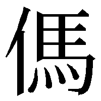
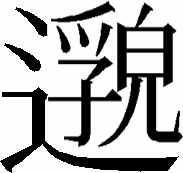
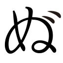
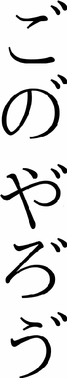

| マジカル・シティ・ナイト（７） 青龍（ドラゴン）仕掛けのアリア | |
| 朝松 健 | |
| (2015) | |
立ちわたる霧のうちに驢馬は道をたづねて
いななきつつ、さまよいひろき洞の中には
いと年経たる竜の所えがおにすまい
岩より岩をつたいしら波のゆきかえる
かのなつかしき山の道をしるやかなたへ
君と共にゆかまし
――ゲーテ
「ミニヨンの歌」
（新声社訳『於母影』）
その夕方、おれは例によってアルコール漬けの眠りをベッドのなかで貪っていた。
季節は冬。十二月――。つまり、みのりの神様サトゥルヌスの祭りの月。
春の招春祭（四月三十日）に対し、サトゥルヌス祭は十二月十七日から三日間続けられる。
この間、シティの住民は、頭にロバの耳をつけて、ドンチャン騒ぎして楽しむわけなのだ。
......だが、それは、もうちょい先の話。
その日は未だ、十二月十日だった。
おれの頭がアルコール漬けであったのは、例によって、失恋し、前昼遅く――およそ午後三時に至るまで、フランク亭でカクテルをがぶ飲みしていたせいである。
（考えてみると、フランク亭ってのも、ずっと前にフラれたガールフレンドの一人と、よく行った店だったな。......）
まさか、グースカ寝ているおれは、そんなことを考えたりはしなかった。毛布のなかで丸くなって、フラれた金髪美人ターニャとデートしている夢なんかを、見続けたりしていたものだ。
――と、その時であった。
突然、おかしなノイズが、おれの夢に割りこんできたのは!?
はじめは光。――七色の光だ。
光を発しているのは、三日月？ いや、違う。片方が太くて、片方が細い三日月型。おれたち道術使いには、なじみの深いかたちではないか。
それというのも、このいびつな三日月をふたつ合わせて円にしたものを道術使いは、《太極》と呼び、
「天地万物の根源が一目で理解できるよう表わした象徴」
と、考えているからだった。
（そのありがたい《太極》が、なんで片方だけ。しかも、光なんか放っているんだ？）
夢見ているとはいえ、おれは一流の道術使いにして、超Ａ級の〈騎士〉なのであった。だから、こういう場合も、むにゃむにゃ言いつつ鋭いツッコミを入れずにはおかないのだ。
それはともかく。――
《太極》の片われは、しばらく七色の光を放ち続けていた。
が、やがて、どこからともなく、ハスキーで、ちょっと色っぽい女の声（ただし、そう若くはない。推定年齢三十五から七というところだろう）が響いてきた。
女の声は、まるで七色の光を揺るがしそうなほど、力強く聞こえてくる。
『シティの全市民に告げます。シティの全市民に告げます。......』
（なんだ？ なんだなんだなんだ）
と、おれは眠りながら思った。
多分、その時、眠っていたシティの全市民も、同じように考え、女の声に耳を澄ませたことだろう。
すると、七色の光が、さらにパアーッと輝いて、それに女のシルエットが重なってきた。
パーマをかけ軽く右に分けたロングヘア。シルエットだけでも、体にぴったりしたレザー系の衣裳をまとった、かなりスタイルのいい女だということが、はっきりと見てとれる。
『わたしの名はチェリー・チュー。別名を祝楚紅といいます。〈北〉の砂漠にある監獄の刑務所長です』
そう名のると、女のシルエットは、手にした革の制帽をロングヘアの上に、かっちりと被っていった。
（......これは......確かに悪魔族の女だ......。おっかないと噂に聞く〈北〉の監獄の、女所長Ｃ・Ｃに間違いなさそうだぜ。だけど、どうして......そのＣ・Ｃが......夢なんか使って......一般市民に呼びかける？......ひょっとすると......脱獄か......）
こんな場合、悲しいのは職業意識というか、条件反射というか。
とにかく、おれは眠ったままで、そんな下らないことを心配しはじめたのだ。しかし、おれの心配など、いとも簡単にけし飛ばしてくださるお言葉を、Ｃ・Ｃは続けて吐いてくれやがった。
「以下に掲げる要求をわたしは、メア市長およびシティ当局に対し、突きつけるものです。
第一に、わたしたちがどこから来たのか。どうしてシティにいるのか。シティの外には、なにがあるのか。それを明らかにせよ。
第二に、チェリー・チューと二名の看守、さらに、脱出を望む市民を今後四十八時間以内に、〈向こう側〉に脱出させよ。
――以上、二つの要求に対し、メア市長およびシティ当局は、即刻、応えていただきたいと思います。
なお、これは脅しでも訓練でもありません。
その証拠に、六時間後。
すなわち本日の午後九時から、〈北〉の監獄の囚人を、凶悪犯から順番に、三十分おきに十名ずつ、科学的に処刑していきます」
（な、な、なんだって!?）
おれはゲッとして、夢のなかで叫んでいた。
（ちょ、ちょっと。待てよ、Ｃ・Ｃ！ あんた、いやしくも公僕だろうが。おれと同じ、シティの市民の税金で、食わしてもらってる身なんでしょう。......自分でなに言ってるのか、分かってるのかよ!!）
すると、Ｃ・Ｃは、くるりとおれのほうに振り返った。黒革の制帽から溢れたロングヘアに七色の光がまとわりついている。
肌はぬけるように白く、その白さと、身にまとったボンデージ風の黒革のコントラストとが、ぞっとするほど色っぽかった。
中国・北方系の顔はきつそうな細面で、彫りが深い。切れ長の瞳は長い睫毛で縁取られ、どこか挑発するような光を湛えて、おれを見つめていた。
年齢は三十四、五というところだろう。くらくらするような色気と、ぞっとするほどの殺気とが、妙に同居している女だった。
『わたしは自分が何を言ってるのか、よく分かっているつもりよ、ベン・スズキ捜査官。あなたこそ、ご自分がどこから来て、どうしてここにいるのか。もう少しで思い出せそうなのに、と。......いつもイライラしているんじゃないの？』
（えっ!? そいつは、どういう意味だよ！）
そこで、けたたましいベルの音。
現実の音声が、夢の世界に、割りこんできた。
おれは電話のベルの音で叩き起こされる。
無理矢理、夢を破られたので、頭はふらふら、眼はしょぼしょぼだった。
......どこに電話があるのかも、よく分からない。
やっと、受話器を左手で掴まえ、右手で本器を持ち上げた。受話器を耳に当て、本器を口に近づける。
「ふあい......。スズキ・ツトムれす......」
おれは半分眠りながら応えた。
『ベンか。いまのを見たか。こいつは大事件だぞ』
直属の上司、シティ市警のマックス・フレーベ本部長の声であった。本部長は常になく、夕方だってのに、もの凄く緊張しまくっていた。
「いまのって......。なんでしょう？」とおれ。
『夢だ！ 夢！ お前だって、夢ぐらい見るだろう』本部長は怒鳴りたてた。
「そうですね。いまの夢は......可愛い奥さんをもらって......課長くらいに出世して......ちっちゃな家を買って......子どもを二人くらい......」と、おれはのんびりと応えた。
『その夢じゃない！ たったいまお前が見ていた、Ｃ・Ｃの挑戦的な夢のことだ。このボケラッタめが』
「あ、そっちの夢っすか。ええ、見ましたよ。そうか。いまのは、おれだけが見たのじゃ、なかったのか。シティの市民すべてが見ちまったんだ」
『そうなのだ。......それで、メア市長閣下は緊急非常召集をかけられてな。目下、わしは〈北〉の砂漠におる。Ｃ・Ｃが所長をしている、監獄のすぐ近くだ』
「そりゃ、ご苦労なことです。いやあ、冬の砂漠は冷えるっていいますからねえ。まして本部長はトシなんだから。風邪ひかないように気をつけて下さいよ」
『ありがとう......って、言ってる場合か。バカモン。お前も来るのだ！ もうすぐ、そちらに迎えの機動車が、アパートメントの入口あたりに横付けにされると思う。そいつに乗って、すぐにこっちに来い。重大な仕事が待っているぞ』
「へいへいへい。分かりましたよ。ところで......ボケラッタってのは、おれのことですか」
こっちの質問が終わらないうちに、フレーベ本部長は、言いたいことを言い終わったらしく、さっさと電話を切ってしまっていた。
「これだものなあ。......あのオッサンの人使いの荒さったらハンパじゃないよな」
思いきり文句をたれながら、おれはベッドから降りた。十二月の夕ぐれは、えらく寒かった。パジャマを着てても、ぞっとくる。
だけど、こうしている間にも、Ｃ・Ｃの待ってる六時間の刻限は、がんがん迫ってくる。
そうすると罪のない囚人たちの命が危ないのだ。
......ん!?......。という言い方は、なんか、おかしいな。囚人って奴等は、罪があったから、囚人になっちまったわけだろう。むしろ、ここは罪の重い囚人たちが殺されてしまう......と言い直すべきかな。
「ええい、やかましいやい。どっちでもいいじゃないか、そんなこと。いずれにせよ、多勢の人間の命が、かかってるんだ」
おれは、そう喚くと、クローゼットの扉を開いた。
今日は十二月十日。水曜日。ひのえいぬ。二黒。先負。月の出は十三時五十一分、月の入は一時五十八分。と......だから道術から見れば、なんだ。......東以外は、全部、凶!? なかでも......西と中央は最悪だって......。うわあ、たまんねえな。まあ、北だけは外れたから、いいか」
手早くパジャマを脱ぎ捨てると、おれは、コットン・パンツに木綿のＴシャツ。その上に厚地のシャツ。さらに厚いサファリジャケットを羽織った。靴下も厚いものにして、靴は革ではなく、厚手の布地のものを選ぶ。
――なんたって、今夜の仕事先は、砂漠だものな。
革靴なんて履いて行ったら、痛んでしまわあ。
悲しいかな、こちとら天下の薄給〈騎士〉だもんね。
着替え終わってみれば、鏡のなかのおれは、まるでパナマ帽を被ってない探検家だった。
しかし、かまうものか。
「インディ・ジョーンズみたいな鞭がほしいな」
と、おれは独りごちる。
「もっとも、インディ・ジョーンズって、誰かは知らないけど......」
こんなふうに口が勝手にしゃべってしまうのは、おれのビョーキなのだ。
さて、おれは、クローゼットの扉裏の鏡に映った顔を見ながら、自己暗示をかけはじめる。
（......おれはＡ級の〈騎士〉。このマジカル・シティの市警に属する魔術犯罪専門の特捜官だ。名は、鈴木勉。通称、ベン。タフでハードボイルド。推理力も行動力も抜群。頭脳は明晰。顔は不敵な二枚目だぜい）
外からクラクションが三度鳴らされた。
「ようし、行くぜ」
リキを入れて応え、クローゼットの扉を閉めると、おれは身を翻した。
玄関めがけ、ダッシュする。
......玄関の段差をすっかり忘れていた。
鉄のドアに正面から額をぶち当てた。
ＡＣＴ 1
迎えにきた機動車には二人の制服警官が乗りこんでいた。
運転席でハンドルを握っているのは三つ目入道。助手席にいる毛深い奴は、毛羽毛現。
どちらも日本系の妖怪であった。
（日系の妖怪は愛想がねーんだよなあ......）
大いにクサリながら、おれはリアシートにもぐりこんでいった。ドアを閉めてから、とりあえず、二人に声をかけてみる。
「本部長は砂漠として。メア市長は？ 市警本部にいるのかよ。それとも――」
返事の代わりに三つ目入道の野郎は、いきなり、機動車を、発車させやがった。いや、その乗り心地のひどいこと。シティのきっちり舗装された車道上を走りだしたというのに、まるでシェーカーのなかのカクテルになってしまったようだった。
「ななな......なんだ......こここ......この揺れかたは......わわわ......危ねえっ」
全身の輪郭を乱しながら、おれは叫んだ。
すると、制帽を被った毛羽毛現が振り返る。
「これは、仕方ないんだなー。なにしろ、このクルマの、タイヤは砂漠用で、舗装路用じゃないんだなー」
声を震わせもせず、のんびりと応えやがった。
（これだから、妖怪って奴は嫌いなんだ。デリカシーというものが欠落しているんだよな）
しかし、そんなこと、乗ってしまったあとから四の五の言ってみたって、はじまらない。
おれは毛羽毛現の後ろのシートに、両手をしっかり掴まらせる。
「と、いうことは。......ししし......市長も砂漠でお待ちってわけかよ......よよよ......」
「そうなんだなー。みんな、北の砂漠の、監獄で、あんたの、お出でを、待ってるんだなー」
「へえ。そうでございますかよー、ってんだ。ちぇっ......伝染っちまったい」
と呟いて、おれは、ガタガタ揺れるサイドウインドウに肘をついた。振動の度合いを肘で読んでみる。かなりひどいね、こりゃ。......ってんで、肘を上げ、シートに深く沈んでいった。
（文火――呼吸をゆっくりと。......）
自分に命じつつ、全身から力を抜いていく。
体内のエネルギーが時計まわりに、螺旋を描いているのを体感した。そこのところで、
（武火――呼吸を激しく！）
全身をリラックスさせたまま、呼吸だけを切り替えた。そんでもって、お次は――、
（文火＝武火、文火＝武火、文火＝武火、交互に繰り返し――）
そう自分に命令した。
こいつを実践するうちに、おれの体は、少しずつ、小刻みに震えはじめる。......まるでひどい寒さに襲われて、自分でも、どうしようもなくなったみたいに。体が勝手に震えだした。
（よし、いいぞ）
と、おれは思い、震える右手で人差し指と中指をまっすぐ立てていった。あとの指三本、すべて折りたたむ。こいつが、道術でいう「剣指を結ぶ」っていうポーズだぜい。
「道術百般のうち、内丹火候『震気慧命』――おれの体を構成する全震動よ。クルマの震動と共鳴しろ！」
口のなかで、素早く、呪願を発した。
――たちどころに、おれの体の震えは、機動車の凄まじい揺れと共鳴してしまう。
そうなってしまえば、なんちゅーこともなかった。こちとら、のんびり快適に、夕べのドライブを楽しめようってえものなのだ。
「メア市長も、砂漠でお待ちかよ」
おれは、サイドウインドウに、もたれかかりながら、独りごちた。
左のウインドウの向こうを、夕陽に染まった市警や市庁舎の建物が、ゆっくりと遠ざかっていった。その他のビル群も、みんな、真っ赤な夕陽に染まり、未だ眠りこけている。窓の明かりは、どれも点されてはおらず、道路のルナパネルだって、一枚も点いてはいなかった。
なにしろ、お天道様は、まだ空にある時刻なのだ。
（こんな時分、シティを駆けずり回ってる奴といったら。
コソ泥か、殺人鬼か、さもなきゃ......おれみたいな魔術犯罪専門特捜官、〈騎士〉くらいなものだろうな）
そう考えると、自然におれの口から、溜息が洩れてきた。
機動車はアガレス街を左に見ながら東北へ上り続ける。シティの情報の中心――新聞社やテレパシー放送局、市政公報社なんかが集中した、この街だけは、さすがにポツポツと明かりが点り、人影が動いていた。
しかし、そこを過ぎると......。
裏を取り囲んだプルフラス公園は、人の気配さえなかった。ただ幼児向けのブランコやシーソーに、夕陽が寂しく浴びせられるばかりだった。
そんな光景をぼんやり眺めているうちに、おれは、不意におかしな気分がこみあげてくるのを覚えた。
いや――。
気分というのは正しくない。
むしろ、映像というべきだろう。
それは......。
だだっ広い公園に、たくさんの人間が集まって。夕陽を浴びながら、不安な表情で空を見上げている。
その群衆のなかに、白いワイシャツに黒いズボンをはいたおれもいた。
おれのそばには、初老の男と女。それに、年下の......娘も。セーラー服を着ている。
（なにを見上げていたんだっけ？ 場所は......新宿西口公園だと思うんだけど......）
（いや。違う。あそこは、代々木だ。代々木公園にみんな避難したんだ――）
ガッ――
いきなり、横揺れが機動車に干渉してきた。
そこで、おれは、正気に戻る。
（ん!?......シンジュクだの......ヨヨギだのって......なんだっけ？......。いま、おれは......なにを考えていたんだったっけ？）
助手席の毛羽毛現がのんびりと、振り返る。
「いま、横道に、乗り上げたんで、クルマが、ふわって浮きかけたんだなー。ベンさんは、頭なんか、ぶつけなかったかなー」
「大丈夫だなー......って。ええい、伝染っちまうから、お前は到着するまで声をかけないでくれ！」
「それは、悪かったんだなー」
車内で妖怪と掛け合い漫才やっているうちにも、クルマは、マルコキアス街、ハルファス街、カンビヨン小路といった怪しげなあたりを抜けていった。
やがて、前方から立て札の山が、静かに迫ってくる。
それに伴って、表面がルナパネルに覆われた道路が、すっぱり裁ち切れた一角が見えてきた。
そこから先は、地平線まで続くキツネ色――。
北の砂漠であった。
ＡＣＴ ２
『人止』『立入禁止』『ＳＴＯＰ』『とまって思いなおせ!!』『ＡＬＴＯ!!』『立定』『ＡＣＨＴＵＮＧ』『この先はコワイぞ。イッヒッヒ』
いろんな言葉で勝手なことが書かれた立て札が、てんこ盛りになっている、その上を――。
おれたちを乗せた機動車は、道の切れ目から軽くジャンプして乗り越えてしまい、空中をふわりと舞っていった。
エレベーターで降りるあの感覚に襲われる。
次いで、ガクンッ、という衝撃！
クルマは砂漠に着地した。
まるで何事もなかったかのように走り続ける。
西にぐんと沈みかけた夕陽に、高く舞いあがった砂粒がキラキラ煌めくのが、バックミラーに映っている様子を、おれは眼を細くして見つめた。
（眩しいのは、好きなんだ。基本的に、おれは夜寝て朝起きるという、不健康な生活が身にしみついちまってるから......）と思った。
「〈騎士〉なんて商売、するもんじゃないな。そう思わないか、毛羽毛現よ。いつの間にか太陽の光が、これっぽっちも眩しく感じなくなってるぜ」
おれはニヒルに笑いながら、サファリジャケットから煙草を取り出した。一本、口にくわえ、言葉を続ける。
「シティの人間とは......まるっきり逆さまの生活だ......」
と、そこで、火を点けて決めてやろうとしたのだが。
毛羽毛現の野郎め。こっちに振り向くなり、毛むくじゃらの腕を伸ばして、おれのくわえた煙草を口から引っこぬきやがった。
「車内は、禁煙なんだなー」
「な、なんでだよ！」と、おれはムキになる。
「〈北〉の監獄の所長チェリー・チューは、大の煙草嫌いなんだなー。だから、煙草のにおいが近づくと、一発でバレるんだなー」
ひと呼吸おいて、ハンドルを操る三つ目入道も、振り返る。
「もひとつ言えば。北の砂漠一帯は、最近、可燃性のガスが定期的に発生しているという噂なんだ。だから下手にプカプカやらないほうが、身のためだぞ」
「げ......」
おれは、思わず踏んづけられた蛙みたいな声を、洩らしてしまった。次いで――、
「そうだったんですか」
みろ。つい、驚きとビビった拍子で、二人に対して、ていねいな言葉遣いになっちゃったじゃないか。
「ええい！」
と、一言呟き、おれはシートにもたれこんだ。
（もう......目的地に着くまで口を開くものか）
そんなふうに心に決めて、がっしり腕組みした。もひとつ、ついでに足まで組んでやった。
窓から見る北の砂漠は、しかし、三つ目入道の言う「可燃性ガスうんぬん」の話を別にしても、なんとなく緊張した雰囲気に包まれていた。
（第一......ほら。砂漠の表面に、数えきれないほど。機動車や特機車の轍の跡が残されていらあ）
そればかりじゃない。五〇気筒の精霊ヘリが飛んでいったらしい跡も、ちゃんと砂丘の向こうまで残されていた。
（こいつは、〈北〉の監獄のまわりは、えらいことになっていそうだな）
おれのそんな予想が証明されたのは、ほんの僅か後――三分ばかりあとのことだった。
砂丘を猛スピードで乗り越えれば、その向こうに、高さ二〇メートルの塀で周囲を取り囲まれた六芒星形の監獄が現れる。
そいつを十重二十重に、〈騎士〉や〈城〉や〈兵卒〉や〈僧侶〉が囲んでいた。
さらに赤（女）軍の〈帥〉〈仕〉〈相〉〈俥〉〈〉〈炮〉〈兵〉各階級にあたる、おっかないおばちゃん姉ちゃんたちもわんさか見られた。
こっちは、市警の職員の犯罪を取り締まる役目の女性たちである。
その男版が黒軍で、こっちは上から〈將〉〈士〉〈象〉〈車〉〈馬〉〈砲〉〈卒〉と、女性たちとは微妙に呼び方や書き方が変わっているのだ。
おれは、こないだフラれた〈炮妹〉ターニャ・ウスペンスカヤの、八角レンズ眼鏡をかけた美貌が赤軍のなかにいないかと、ひやひやした。
だけど、幸か不幸か、彼女はいないようだった。
「ども、ご苦労さん。やっと着いたんだなー」
毛羽毛現が言った。
と同時に、機動車は砂埃を高く巻き上げ、急停車した。
おれは前につんのめり、続いてシートに押しつけられて、また前につんのめった。
――いきなりクルマの震動がやんだせいだった。
「おう。またな」
カッコつけてサイドドアを押し開き、外に一歩、踏み出せば、おれを中心に砂煙がぐるぐると渦を巻いて廻りだした。
まるで砂の円筒に、頭から、すっぽり覆われたみたいだ。
「なにをやっとるんだ。道術を解かんか、道術を」
砂煙の向こうから、フレーベ本部長の声が投げかけられた。呆れ果てた奴め、とでも言いたげな調子である。
（いけねえ。『震気慧命』の術をまだ解いていなかった。......おれ自身が細かく震動してるもんだから、そのお蔭で、砂が巻き上げられるんだ）
それに気づいたおれは慌てて剣指を結ぶ。
「解術！」
一声唱え、剣指をひと振りした。
たちどころに、この身の震動はおさまり、砂煙は消えていった。
「ぺっぺっ......、なんちゅう......慌て者だ」
フレーベ本部長は顔のまわりを手で払い、ついでにスーツの肩に積もった砂粒をはたきはじめた。
そんな直属の上司の隣で、シティの最高責任者、メア市長がこっちのことをじっと見つめている。
「ども。ベン・スズキ特捜官、お呼びによりまして、〈騎士〉の出前にやってまいりました」
おれは精一杯の愛想をこめ、一見二十五、六歳にしか見えないセクシーでグラマラスなメア市長に言った。
「ごきげんよう、ベン。どんな事態になってるかは、とっくに知っているわね」
メア市長は黒いとんがり帽子から溢れた、腰まである赤い髪をかすかに揺らし、気だるげに応えた。
「ええ、まあ......。なんつーか。〈北〉の監獄の女刑務所長チェリー・チューが囚人を人質に、シティの反乱を企んだらしい......と。そのくらいは......」
市長のボディラインも露わな魔女ルックから、必死で眼をそらしながら、言葉を濁した。
（なんたって、外見こそ二十代半ばのセクシーギャルだけど。ホントの市長の年齢は、三百歳を越えるって話だものな。いくらシティの住人に年齢がないといったって......ねえ）
――と、そらしたこの眼に飛びこんできたのは、まずは凄まじい台数の機動車や特別機動車だ。
それらのまわりにゃ、〈兵卒〉や〈城〉が魔術武器を構え、待機している。
さらに、その他に......あります、あります、ありますよ、ときたもんだ。ええ......砂の上に着陸している精霊ヘリ。その隣には水を噴き出すオンダン砲。火を吹くサラマンダー・カー。風を巻き起こすフォカロル・カー。雷をぶつけるニッカール砲のついたキャタピラ・カーまで並んでいる。
（メア市長、ひょっとして、シティにあるだけの魔術兵器をここにかき集めたのと違うか）
そう思ってしまうほどの、ものものしさであった。
どの兵器も、五〇～七〇メートルの距離をおいて、いつでも監獄の獄舎めがけ、ぶっ放せるようにしてあるらしい。
「六時間。......いいえ。正確なところ、タイムリミットは、あと五時間と三十二分しかないわ、ベン。それを過ぎたら、三十分刻みに囚人が処刑されはじめる」
監獄と魔術兵器とを、交互に眺めるおれに、メア市長は言葉を投げてきた。
「おっしゃりたいことは分かってます。
おれに、あそこに潜入して、Ｃ・Ｃ、いやチェリー・チュー所長を」
と、そこで、おれは咳払いした。
（なんて言えばいいんだ。〝殺す〟というのはリアルだし。〝バラす〟といやあ、ギャングみたいだ。〝殺っちまう〟ってのも、なんだかなあ。〝アレする〟とでも......）
そんなふうに、おれが言い迷っていると、
「始末しましょう、わたしたち二人で！」
背後から若い女の声。
思わず、つりこまれて、おれは、
「そう。おれたちで、Ｃ・Ｃを始末する......って。こらこら、おれは藤枝梅安か!?」
「誰なの。その人？――フジエダさんって」
メア市長に尋ねられて、おれは慌てて口を押さえた。
「いえあの......へどもど......いまのは勝手に口が言ったことでして。どいつだ、おかしな合いの手を入れやがったのは」
と、おれは、ごまかしながら、あたりを見まわした。
すぐに赤茶色（というより熟した柿の色である）をしたニンジャ・スタイルに身をかためた、小柄な姿が目にとまる。一五五センチくらいか。
ぴったりした忍び装束のせいで、それが女であるのは、一目で理解できた。
しかし、顔は、すっぽりと忍び頭巾で覆われているので、可愛いのかブスなのか、確かめるべくもない。
おれが、「お前か!?」と言うと、くノ一は、反射的に腰を引き、逃げの体勢に入った。
「待て。ベン、紹介しよう」と本部長。
片袖まくりかけたおれの剣幕に、相手のくノ一、かなりびびってしまったようだ。
なんといっても、頭巾から覗いたふたつの瞳に、たちまち涙がうかんできたほどである。
フレーベ本部長が割って入ったのも、そんな彼女の雰囲気を察したからなのだろう。
「こちらは十月に〈騎士〉に合格したばかりの、新米だ。ご覧の通りの忍者で、名はトベラ。得意の術は――」
「こ、こ、甲賀忍法〝うらごろし〟ですぅ」
新米〈騎士〉のトベラは、ひきつった調子でおれに言った。ただし誇らか、というには、あまりに遠い。
「なんだって？ 甲賀忍法〝後家ごろし〟？」
「――〝うらごろし〟ですっ」
今度は、少しばかり、怒ったふうに応えた。
「まあ、いい。トベラがいかに優秀かは、いずれ、ベンにも理解できるだろう。目下のところは、状況を説明するほうが、重要だ」
フレーベ本部長は、そう前置くと、禿頭を鋭く光らせながら説明しはじめた。
ＡＣＴ ３
メア市長、おれ、トベラ、と肩を並べた前にフレーベ本部長は、左手を突き出した。くるり、と掌を夕空に向ける。
たちどころに、掌からグリーンの光柱が立ち昇ってきた。そのなかに三十四、五歳くらいの色っぽい中国系美女の顔が浮かびあがる。
「これが〈北〉の監獄の女所長Ｃ・Ｃこと、チェリー・チューだ」
フレーベ本部長の声をバックに、チュー所長の顔はクルクル回転しはじめた。パーマのかかった茶髪をロングヘアにして、ちょっとケバい感じだが、美人は、美人である。
「夢で見たのと同じ女性だわ......」
トベラが低く呟いた。その声がくぐもっているのは、いまだに鼻と口を忍者の覆面でおおったせいらしい。
「お前なあ。苦しくないのか、息が。なんなら、仲間うちと一緒のときは、覆面を外していても、いいんだぞ」
おれは唇の端を苦笑いでひきつらせながら、トベラに忠告してやった。
「いえっ。平気です。......そんなことより。どうして、急にチェリー・チュー所長は、このような行為に走ったのでしょうか？」
前半の台詞は、おれに対する返事。後半はメア市長とフレーベ本部長への質問であった。
「......それなのよ。ここだけ、の秘密にしてほしいんだけど」
まるで女子高生みたいな言い方で前置きすると、メア市長は、
「どうやら監獄で囚人たちが、強制労働中に、旧世界の《科学遺跡》を掘り出してしまったらしいわけ。で、そこから、続々と、〈サイエンス・レコード〉に関わるものが出てきちゃったらしいの」
「......あの......」と、おれは右手を挙げた。
「はい、ベン」メア市長が、おれを差す。
「その、〈サイエンス・レコード〉って......なんすか？」
「わたしたち、魔術世界では、魔術的な情報は空間に刻まれている、と考えているわね」
「ええ。〈アカシック・レコード〉に――」
「それと同じように、科学の世界では、科学的な情報は、特殊な信号に変えられて機械の仲介によって、なんらかの道具に刻まれるらしいの。そして、その科学情報が記録された品は、〈サイエンス・レコード〉と呼ばれ、科学信者たちの探究の的となっている」
「知らんか？......『サイエンス年代記より』とか、『聖なる〈サイエンス・レコード〉クエスト』。あるいは『科学の勝利』なんちゅう禁書が、この頃、フラウロス街のあやしげな書店で取り引きされておるのだ」
フレーベ本部長は、いまいましげに付け加えた。
「で、Ｃ・Ｃは、発掘された〈サイエンス・レコード〉に接触してしまったのね。だから、あんな変な言動を見せたのだわ。元々は、とってもいい子で、黒科学なんか使わなかったのに」
「それは、ともかく」
フレーベ本部長は咳払いをすると、自分の掌の上に浮かんだ映像に、みんなの注意を再び向けさせた。
軽く掌が傾けられる。すると、たちまちチュー所長の顔が消えた。
代わって現れたのは、髪をクルーカットにした、面長な顔の男。年齢は三十二、三というところか。なんとなく筋肉バカが刑務所の看守長の制服を着ている、という感じであった。
「こいつは......」とトベラ。
「第一看守長のアーノルド・レフトウッドだ。身長二一〇センチ。体重一二〇キロ。ボクシング・空手・柔術・レスリング・フットボール・フェンシング・射撃・ゲートボールなんでもござれのマッチョマンでな。特に電磁鞭の腕ではシティ・ナンバー・ワンだろう。別名を〝不死身の男〟という」
「ど、ど、どうして、そんなバケモンを刑務所の看守長なんかにしとくんですか!?」
おれは本部長に思いきり詰め寄った。
「なにを言っておる。これくらいじゃないと、凶悪な囚人は取り締まれんだろうが。......いやあ。まさか、シティに牙を剥くなんて思っていなかったものでなあ。失態、失態」
そう言うと、本部長は〝不死身の男〟の映像に軽く息を吹きかけた。
ふわ......っという感じで映像はゆらぎ、続いて、頭を坊ちゃん刈りにした、色白で丸顔の眼鏡男（お目々パッチリ。鼻筋通って...なんとなく、キューピー人形が三十代になったら、こんな顔に成り果てるのでは、と思われる）に変わった。
「あ、いいねえ。いいねえ。弱そうで。なんて名ですか、こいつは？」
おれはカサにかかった口調で尋ねた。
「うむ......。これは、名はブラザー・ライトといってな。第二看守長、兼、監獄内跪拝所の説教師だ。年齢は二十九から三十五のあいだ」
「なんです、その......あいだってのは？」
「詳しいことは不明なのだ」
本部長はトベラに応えてから、また、説明を続ける。
「身長一五二センチ。体重六〇キロ。色白。近視で乱視。貧弱な体つき......と。そんな外見だからといって、ベンは小バカにするが、なかなかどうして。これで敵にすると、手ごわい奴かもしれん」
「そうすか？ とても、そうとは――」
言いかけたおれの台詞を押し戻し、フレーベ本部長は、
「なんといっても、〈サイエンス・レコード〉に最初に接したのは、このライトなのだからな。そのせいか、どうか。......以来、わずか半月でライトは監獄内を黒科学の要塞に作り変えた。さらに自身も、様々な黒科学武器で身をよろい、率先して、囚人をいたぶっているらしい」
「もともと、Ｃ・Ｃにはヘイコラするくせに、一般職員や囚人にはいばり散らす、いやな男という、そんな悪評は高かったのだけどね」
メア市長は、黒いケープの下で、肩をすくめると溜息をついた。
（いや。フーッじゃねえって。悪い評判、聞いていたんだったら、早いとこ、手を打ちなさいってば！）
おれは、こっそりワニ目で、メア市長を見やり、心の底で言ってやるのだった。
（まあ、面と向かって言えない分、おれも、情けないといやあ、情けないんだけどな。......）
「レフトウッドとライト以外に、あと二人、男一人に女一人、看守がいるが――。
こやつらは、チュー所長に引きずられているのにすぎん。だから、チュー所長と二人の看守長を処分し、〈サイエンス・レコード〉を破壊してやれば、本件は、すべて落着するだろう」
「分かりました。まかせて下さい！」
トベラが、片膝をつき、拳を地面につけたニンジャ・スタイルで、大きくうなずいた。
それに対して、おれは――、
「ちょい待ち！」
片手を挙げ、ぷるぷると首を横に振って、『この場の勢い』に急ブレーキをかけさせる。
「ん!? なんだ、ベン。どうした。なにか、まだ、質問でも......」
「三つあります。いいすか？」
「どうぞ、ベン」
とメア市長は微笑んだ。
「その①――おれが監獄に潜入するのはいいですが。一緒に組むのは、この、......どう見ても出来の悪そうな成りたて〈騎士〉の忍者もどきなのでしょうか？
その②――今回の目的は、監獄に潜入してチュー所長と二人の看守長を始末するだけなのでしょうか？
その③――②を実行するためには、どの程度、囚人や看守の犠牲はやむなし、とされるのでしょう」
「いいわ。教えてあげる」
と呟くと、メア市長は、曲がりくねった杖を握りしめた。その影が夕陽に映って、砂の上に長く長く伸びていく。おれの眼にはなんだか、メア市長の横顔が、意地が悪くて醜いババア魔女のそれに変わってしまったように見えてきた。
いや、こいつは、気のせいなのだろう。鶴亀、鶴亀......。
「その①の答え――今回のあなたの相棒は、ここにいるトベラよ。これは、わたしが決めたの。変更はゆるさない。
その②の答え――今回の仕事は、単にＣ・Ｃと二人の看守長を抹殺することだけじゃない。Ｃ・Ｃたちが、囚人を殺しはじめる前に、仕事を完了し、Ｃ・Ｃの反乱なんて、最初からなかったことにするのが目的よ。
だから、あなたたちが、五時間二十五分後までに戻らない場合は......」
「その場合は？」
おれとトベラは異口同音に尋ねた。
「......仕方ないわ。シティから〈北〉を〈消去〉します。そして、今回の事件の関係者、最大公約数を〈退去〉させるしかないでしょうね」
「......〈退去〉って？ 〈向こう側〉にですか」
と、おれ。
「いいえ。〈大空無〉のなかへ、よ。あそこに〈退去〉させたなら、最初から生まれなかったことになるから、事件自体、なかったことになるでしょう。こんな因果律をねじ曲げる魔法は使いたくないのだけど。シティの秩序を守るためには、仕方がないでしょう」
おれとトベラは、自然に、顔を見合わせてしまった。
それを無視して市長は言葉を続ける。
「その③――そんな事態にだけは、したくないので、極力、囚人も看守も、無傷で救出したいわね。
幸い、Ｃ・Ｃはじめ、看守は全員、悪魔族だから殺したってそう簡単には死なないとして。
まあ、囚人も、可能な限り、傷つけずに、事件を終わらせてちょうだいな」
「おまかせ下さい。おれたち二人、力を合わせて、任務を遂行し――五時間二十三分後には、市長閣下とここでお会いしておると、お約束しましょう」
おれは胸を張って、きっぱりと言い切った。
次いで、肩を並べるくノ一に振り返る。
「よし。トベラ、行こう！」
「は......」
トベラは、突如として、おれの態度が急変したので、まだついていけない様子であった。
「本部長。そこの機動車を、一台、お借りいたします」
「うむ。たのんだぞ!!」
フレーベ本部長の送る声を背で聞きながら、おれは、さっそうと手近の機動車に飛び乗った。ドアを閉める。
......指をはさんでしまった。
ＡＣＴ 1
ドアにはさんだ指をふうふう吹いているうちにも、トベラは、クルマの後方をぐるりとまわって、助手席から乗りこんだ。
「こっちは、いつでも大丈夫ですぅ」
そう言うなり、彼女はドアを閉めた。
おれは、その音を合図に機動車をスタートさせる。車内が上下左右、縦横に揺れだした。
（毛羽毛現の嘘つきめ。なにが砂漠用のタイヤだから、舗装道路を走ると、揺れるだよ。砂の上でも充分、揺れるじゃないか）
フロントガラスの前では、砂埃が左右に掻き分けられていた。まるで船の舳先に、真っ二つに割られていく波のようだ。......といったって、こちとら、そんなもの、夢や幻視でしか見たことはないのだけれど。
砂埃は瞬く間に高くなっていく。
左右のサイドウインドウ――ルームミラー――バックミラー――リアウインドウ......と。
もう、がんがんフロントガラス以外の、外界を映すもの一切合切が、砂の色に染められていった。
――と、そのうちに。
『ベン、聞こえる？ わたしの思念が』
この頭のなかに、メア市長の思念がダイレクトに打ちこまれてきた。
（わっ......。なんですか!? いきなり、テレパシー回線なんか開かないでくださいよ。運転中のテレパは危険だ、と市警公報でも言ってるでしょう。なんといっても、これ、頭のなかが痒くなってくるんだから......）
おれはテレパシーで応えつつ、左手でばりばり髪を掻きむしった。
『まあ、そんなふうに、うるさがらないで。わたしの言うことを、よくお聞きなさいな』
（なんですか）
『こちらから、監獄へ向かうあなたたちは丸見えよ』
（げっ!? で、では、早速。なんかの道術を使って、このクルマごと消えちゃわなくては）
と、言ってるそばから、いきなり――
ひるるるるるる......
空中より、なんかが飛来するような音が、行く手のほうより接近してきたじゃないか。
「危ないですよお！」
一声叫ぶなり、トベラがおれのハンドルに、飛びついてきた。クルマが、急角度で、ぐっと左に折れる。次の刹那、たった今まで走っていた右のほうで閃光が起こった！
（ぴかッ!! ときたぜえ）
そう感じた時には――
どおおおおぉぉぉんんんん......
てなふうに、右からダイレクトに、爆発音と衝撃とが、同時に機動車めがけて襲ってきた。クルマが横転しそうになる。
「ええい。こんチクショー。まだ戦闘態勢にも入っていないのによー」
叫びながらも、おれは、ハンドルを右に左に、交互に切り替えだした。砂漠上でのジグザグ走行である。
（監獄に立て籠もった連中め。おれたちのことに気づいて、塀の向こうから、爆裂魔法かなんかをぶっつけてきやがったな）
と、まあ、そんなふうに悟ったのだ。
「危ないぞ！ どこかに、しっかり掴まってないと。頭、ぶつけるからな」
おれはトベラに注意して、さらにハンドルを操り続ける。
「はいっ」
トベラは、必死の眼つきになると、身を低く屈め、シートの下に両手を突っこんだ。
そうするうちにも、こちらの右に左に――
ひるるる......、が来たかと思えば、
ぴか!! と輝いて、
どかんっ！ 衝撃が伝わってくる。
「ええい。このテメ、監獄に辿り着く前に、おれもお終いかよ。チクショーメ！」
半ばヤケクソでおれは怒鳴り散らしてしまった。
すると、爆音の合間から、メア市長の思念が打ちこまれてくる。
『なにを喚いてるのよ......。クルマのシフトレバーを握って、マニュアルをＴＦに変えてごらんなさい』
（ＴＦですか？）
「そう。トランス・フォーム（変身機）を入れるのよ。そうしたら、その機動車は、砂漠と同じ色にまぎれてしまって、向こうには攻撃しづらくなるわ」
「分っかりました！」
おれは大声で応えると、足元のほうに手を伸ばした。がっちりシフトレバーを握りしめる。
「よいしょ」と、一声あげて、レバーをＴＦに切り替えた。
次の瞬間、フロントガラス・サイドウインドウ・リアウインドウが、すべて砂漠の色に変わっていった。
機動車のトランス・フォームが入ったのだ！
ぶんぶんという唸りが、クルマの床から響いてきた。その震動が上に伝わるにつれ、車内の色が次第に、お馴染の機動車のそれから砂漠の色・砂粒の質感に変わっていく。
それに伴って、敵からの攻撃が少しずつ、弱まってきた。
今までは間を三秒とおかずの連続攻撃だったのが、十秒いや二十秒と、間隔があいてくる。
おまけに、攻撃を仕掛ける照準も、てんで合っていなかった。
そのため、こちらは、向こうの攻撃が、爆裂魔法なんかじゃないことまで、はっきり見てとれるくらいである。
「......あれは......忍者の火器のひとつ、百雷砲によく似た武器ですぅ......」
シートにしがみつきながらも、トベラさえいつしか砂の波の晴れた、サイドウインドウの向こうを観察して、そんなことを言えるほどだ。
「百雷筒？」
と、横目で見やれば、細長い龍のかたちの筒が、監獄の塀の陰から発射されていた。そいつは、もう星が瞬きだした夕方の空に放物線を描き、砂漠に落下したかと思うと、爆発した。
オレンジ色の閃光が輝き、黄色いキノコ雲が立ち昇る。えらい眩しさだ。赤黒い残像が、この眼の底に刻まれてしまう。
しかし、お蔭で、相手の狙いがてんで外れているのだけは、ハッキリと理解できた。おれはジグザグ走行をやめて、まっすぐ前進することにする。
マニュアルをＴＦ（トランス・フォーム）に入れた効果によって、砂埃もまったく立たなくなっていた。
＊
六芒星のかたちをした獄舎を取り囲む、六角形の塀。
砂漠を大きく迂回して、そいつの後方、裏口にまわるかたちで、おれは機動車を停めた。
「よし。行こう」
トベラに声をかけると、サイドドアを開ける。キーはそのままにして、クルマから降り立った。
どうしてキーを入れっ放しにしとくかといや、万が一の時、トンズラに便利だからだ。おまけに、ここは砂漠のどまんなか。クルマが盗まれるおそれもない。
おれがドアを閉めて、塀のほうに駆け寄った頃には、とっくにトベラは塀にへばりついていた。
いや、このあたり、さすがは忍者だ。......
おれは、心から、感服してしまった。
「それで」
と言いかけると――、
｟しーっ。ここからは敵の呪圏ですぅ。ベン先輩は専用テレパ回線か、思念で話して下さいっ｠
と、あせって呼びかけてきた。
こいつは、忍者特有の思念伝達術『以気合気』というやつだ。
（オーケー。で、改めて質問だが。どうやって、この......すっげー高い塀の向こうに、侵入するつもりなんだ？）
｟まっかせて下さいっ。こんな場合だって、甲賀忍法〝うらごろし〟は活用できるのですぅ｠
そう応えるなり、トベラは、片耳をぴったり塀にくっつける。覆面から覗いたつぶらな瞳が、急速に真剣そのものの表情を帯びはじめた。
（なんだか、塀の向こうの気配を窺っているみたいだが......）
と、おれは、ぼんやりくノ一の姿を見つめていた。
そんな折りも折りである。
不意に、あれが、おれの脳ミソと視神経を襲ってきたのだ。
あれ――。
つまり、その......おれが酔っぱらって、夢うつつの状態にあった、今年の八月朔日からその前の日あたり。
メア市長か、フレーベ本部長の差し金で、おれは夢の中でプレトリアス博士なる人物に新しい超能力を植えつけられた。
それは、シティのどこかで大事件があると、その事件の断片が時空を超えて、おれの脳裡で閃くという超能力だった。
しかも、その断片が、大事件の最も凄まじいクライマックスなのか、発端なのかは、おれにも分からない。
もし人物が閃いたとしても、それが事件の犯人なのか、被害者なのかも分からない。
まして、閃いたシーンで、おれが胸を押さえて、倒れるところを目撃しても、おれ自身にはどうしようもなく、また、そのシーンは必ず、現実のものとなるのであった！
（なんて下らなくも厄介な超能力をヒトに植えつけるんだよ。......単におれが困るのを見て、面白がってるんじゃないのか）
｟しーっ。テレパも静かに。
いま......
塀の向こうを......二人の人間が接近中で。
なんとなく......看守みたいな雰囲気で......｠
おれは（お前のほうが、よっぽどうるさいじゃないか）などと心中反論したりはしなかった。
その代わり、次第に頭のなかで、花火のように閃きだした数々の幻視に神経を集中していくのだ。
（このなかに、ことによると、今回の事件を解く鍵や、生き延びるヒントが隠されているかもしれないから......）
たとえそれが一瞬にすぎなくとも、細かいところまで逃さぬように。
鮮明かつリアルな幻想を。
（なにがどうあっても、現実になってしまうんだなー、これは）
いま......はじまった。
――馬面の悪魔とフクロウ面の悪魔。（ん!? こいつら、見覚えあるぞ。馬面の奴の名はガン。フクロウ頭のほうは、ドゥムというんだ。ともに、貴族階級の悪魔の手下で、おれが〈北〉の監獄に叩きこんでやった連中じゃ......）
――鉄格子のなか。入れられてるのは、おれと、トベラだ。向こうで坊ちゃん刈りの小男がインケン笑いをしてやがる。そして......真っ赤な雀の群れが、おれだけに襲いかかってくる。
――ライオン頭の悪魔。（ぎゃっ、こいつは、アロセールだ。ガンとドゥムの親分の侯爵で、やっぱ、おれが監獄送りにした......）
――亀が口を開くと、口のなかにはいくつも孔が開いた円筒が仕掛けられている。そいつが回転する。孔からオレンジの火と、紫の煙が噴き出した。......その向こうで、囚人たちが......ばたばたと倒れていく......。
――おれらしき後ろ姿。くノ一の後ろ姿。二人は必死で機動車に飛び乗った。発進！
が、いきなり、砂漠の向こうでオンダン砲が水を噴出した。クルマが迸ってきた水を浴びて横転する。サラマンダー・カーのノズルから火焔が放射された。逃げ出す間もなく、機動車は炎上。
続いて、フォカロル・カーのあおぐ風が炎をさらに立ち昇らせた。最後に、黒焦げのクルマめがけ、ニッカール砲のおとした雷がダメ押しだ。かくしてクルマは、搭載されたグレムリンも残さぬ木ッ端微塵と成り果てた。
――白い虎が吠える。穴からぶら下がったトベラ。その足めがけて、虎の前肢が――!?
――青いドラゴン。キカイ仕掛けで、青銅のドラゴンの頭だ。そいつが、ぎごちなく動いている。時計のネジみたいなヒゲが、ふるふる震えている。大きな眼球が、こちらを向いて......気をつけろ、おかしな煙を鼻から吹き出した。
――太極の半分。金属質の輝きを帯びながら、くるくると回転する。それとともに、きんきんとした音で、歌声が響いてくる。
とても、古い、古い歌だ。......
〽立ちわたる霧のうちに
驢馬は 道をたづねて
いななきつつさまよい
ひろき洞の中には
岩より岩をつたい
しら波のゆきかえる
かのなつかしき
山の道をしるや
かなたヘ
君と共にゆかまし
――チュー所長の勝ち誇った笑顔。
――絞首台。二台もある。その下にはでっかい木札が打ちつけられている。ひとつには、
『くノ一・トベラ』
もう一枚には......？
『ベン・スズキ』
......と。
そこで、幻視は不意に途切れた。
＊
「こいつは最悪だ......。ちょっと、帰って作戦を立てなおそうや。な、トベラ」
今回の事件の〝断片〟を覗いたおれが、そんなことを相棒に提案したのと、同時であった。
トベラのほうは、素早く両手を組み合わせると、
「いきます。まずはベンさんから。塀の向こう、ちょうど五メートル対称な位置にいる看守と、衣裳だけ替わり、相手は失神した状態で、砂漠に投げ出される。こちらは塀のなかに潜入する――」
「ちょっと。その......長いのが、術の名か？」
「いいえ。これぞ、甲賀忍法〝うらごろし〟――はいっ!!」
一声気合いを入れ、念を凝らした。
続いて、ぐにゃり......と。
背中のまんなかあたりから、肉体と魂が、同時に、水飴製のでかい袋に変身したような気になった。それから、その袋がぐるんと裏返された、と思う。一緒に魂も裏返った感じだった。
視界も意識もまとめて、塀や砂漠や夜空や星やなんやかやと、そっくりそのまま裏返された、というふうに感じた。
そして、もとのように立っていた。
だが、おれは塀の内側にいたのだ。しかも......塀に身をへばりつかせ、全身くまなく人工的な光に照らしだされるという、世にもおバカな姿で。
ＡＣＴ ２
どうして自分が塀の内側、つまり、〈北〉の監獄の敷地内に、瞬間的に移動した、と理解できたのか。
別段、おれが鋭くて、むむむッと、
（察した）
わけではない。
パッと、眼も眩むような青白い光条でいきなり、照らされたのがキッカケだ。
（わ!? なんだ、この光の暴力は）
とっさに、おれは片腕を挙げ、顔をかばってしまった。
そう、まさにそいつは「暴力」としか表現のしようがない光であった。
明るさはルナパネルの一万倍はあるだろうか。あまりの明るさで、光が熱を伴っていた。
信じられるか？
魔法で生じる光なら、当然のことながら、そいつは月の光と同じで、ひんやり冷たいか、全然、熱なんて感じさせないはずだろう。
ところが......。
おれを照らした青白い光条は、ちっとも冷たくなかった。それどころか、レンジみたいに熱かったのだ。
「うきー」
反射的に挙げた腕の下で、おれは意味不明の叫びを発した。どうも毛羽毛現語が伝染ってしまったらしい。
それから、背中と両手を、塀にべったりへばりつかせていった。
少しずつ光に眼が馴れてくる。面前に広がるものが砂漠ではなく、緑の芝生で。
光が、メア市長率いるシティ・ポリスの陣地より放たれたのではなくって、おれの立つ場所の斜め上方、地上およそ二〇メートルくらい上にある鉄塔の見張り小屋から放射されているんだ、ってこと。
まあ、そのくらいは、なんとか、
（分からされた）
のであった。
それにしても、いきなり、こんなに眩しい光の暴力に接してしまうと、人間は、行動パターンが限られるもののようだ。
大きく分けて、ふたつの行動しかとれないものらしい。
すなわち――おれみたいに凍りついてしまうか。
「はっ、ほっ、たっ、やっ、とっ」
一〇メートル向こうに転移して現れたトベラのように、無意味な動きに出てしまうか。
（まあ......光の暴力にいきなり襲われれば、どっちかの行動をとるしかないよなあ......）
もう一本の光条に追いかけられて、それから逃れようとトンボを切り、側転し、バック転する女の子の影を見つめながら、つくづくおれは考えた。
（......しかし......あれは？ 間違いなく、トベラだよな。忍び装束を着ていないようだけど）
「こ、こ、甲賀忍法――〝うらごろし〟ィーなんだけどなあ」
自信なさそうに呟いて、逆立ちしかけたところを見ると、やっぱりトベラのようだ。
おれは、塀にへばりついた体勢から、女の子の影に向かって、
「おい。なにやってんだよ。そんな芸見せて、許してもらおうってのか？」
そう囁きかけた。
「は......」
逆立ちの状態で、女の子は、こちらを見つめ返した。
そんな彼女の全身が、青白い光の輪に射止められる。トベラに間違いなかろう。
ただし、寸足らずの囚人服を身にまとい、逆立ちなんかしているものだから、小さくへこんだヘソが丸見えであった。
素顔のトベラは、ちょっと下ぶくれの顔をした、大きな瞳の十五、六くらいの少女だった。
どうして彼女がトベラと分かったかといえば、
「あの......ベン先輩。つかぬことをお訊きしますけどぅ。いつから囚人になったんですかぁ」
なんてトボけた質問を、逆立ちしたまんまで、投げかけてきたからだった。
「誰が囚人だって。おれはごらんのとおり、カッコいいサファリジャケットで、ばちっときめて――」
いるだろうがボケッ、と片袖めくりかけ、その袖が、横縞模様なのに気がついた。
「えっ!? えっ、えっえっえっ、えーっ!!」
叫び声とともに、自分の肩、腕、腹、太腿など、片っ端から触れてみた。顎を引いて、見てみた。
すると、頭に被っていた囚人帽がずり落ちてくる。キャップタイプのもので、こいつにも横縞が走っていた。
「あーっ！ 囚人姿だ!!」
おれとトベラは、暴力的な光条に照らされた互いの姿を指差して、もう一度、異口同音に喚いてしまった。
「そこの囚人二名！
このドサクサに逃げようとはふてえ奴らですね。
いま、ブラザー・ライト様が、ありがたい引導を渡してやりますですよ。
おとなしく、シティ以上の地獄へ行っちまって下さい！
ええ、くそたれ。ルシフェルのもとにでも、召されやがれえっ」
エコーを利かしたバカ声が頭上から轟いてきた。
そして、二本の光条の源――地上二〇メートルもの鉄塔から、おれたちめがけ、金色に輝く矢みたいなものが、一気にまとめて、数百本。――
どっと発射されてきた。
「うきー」
おれは改めて、意味不明の悲鳴を発し、塀を離れた。
「とやっ」
と、トベラも、逆立ちから一転、くるりとまわって立ち上がった。......が、あと、どうしていいものか。呆然と立ちつくす。
そうしているおれたちに、
「こっちだ！ こっち。死にたくなかったら、早く獄舎に戻れ！」
ちょっぴりしゃがれた女の声が、まっすぐ前の闇の向こうから、湧き起こった。
「どうします。ひょっとして、罠かもぅ？」
くノ一らしく用心を忘れずに、トベラは、おれに振り返った。
「罠でも、いまのとこ、あれで蜂の巣になるよかマシだろうぜ！」
そう応えるなり、おれは、ハスキーな声のした方角めがけ、全力疾走で駆けだしていた。
「あっ。待って下さいよう。甲賀忍法〝いだてん進〟！」
どーん、という爆発音とともに、トベラも、走りはじめた。
いや、その速いこと。速いこと。
あっという間に、おれを追い抜き、ギュイーンッと、爆風を引きながら、駆けていってしまった。
頭の後ろで束ねた髪の毛が、馬の尻尾みたいに左右に揺れるのを、おれは、ただもう呆然と，走りつつ見守るばかりであった。
（あの駆けた跡には炎の轍が残っているんじゃ。......）
思わず、そう考えて、後ろを振り向いたほどだった。
だが、二本の炎の筋など見えようはずもない。
おれの後ろに見えるのは、ただ、二個の光の輪だけ。（しっかし、暴力的な明るさだよな）
それから、おれたちの立っていた場所めがけて、雨アラレと降り注ぐ、長さ約一五センチほどの金属製の棒のシャワー。
（いま......やっと......あの金色のものが......なんなのか......分かったぞ......。あれは金色に塗られ、先端が研ぎすまされて、凶器化された......金属製の......筮竹だ......）
そうとも。
おれは道術使いの〈騎士〉だから、ピンときた。
あれは、凶器化された筮竹に他ならない。
しかも――鉄塔の上にいる誰かは――その金属製の筮竹を、シティではご法度の科学武器〈キカイ〉を使って、一度に何百本と、発射しているのだ。
（あんなものに直撃されたら、こっちは、骨も残らないぞ！）
おれの思念を以気合気で読みとったのだろうか。
先に獄舎に辿り着いたトベラが、
「本当ですか。......だったら。なんて......中華なキカイなんでしょう......」
悲鳴まじりに、ちっちゃな戸口のなかから、洩らした。
顔をそっちのほうに返せば、薄い闇のなかに、真っ黒い、威圧的な建物が聳えていた。
入り口は、ひとつだけ。窓は皆無である。
外に開いているのは、トベラが立ってる小さな戸口オンリーだ。
そこの足元のルナ・パネルは切れかかっていた。チラチラしたルナ・パネルの光に映え、トベラの肩越しに、もう一個の人影が見える。
ぶ厚い鉄の扉を押さえた人影だ。
（......女らしいな。あいつが、たったいま、おれたちに『戻れ』と声をかけてくれたのか。......さて......あの女は......囚人か、看守か。敵か味方かな。どっちだろう？）
そんなことを考えながら、おれは、トベラの待つ戸口めがけ、滑りこんでいった。
ＡＣＴ ３
両手をまっすぐ伸ばし、頭から、戸口めがけてダイビングしていった。
ずざざざざっ、という音とともにおれの上半身が戸口のなかに滑りこむ。
と、ほとんど同じタイミングで、下半身のさらに向こうのほうから、湿ったズタ袋を滅茶苦茶に、百人くらいの人間で蹴とばしているような音が湧き起こった。
腹這いの姿勢のままで、後ろを振り返ってみた。
二本の光が追いかけている地面――。
（つまり、おれがついさっきまで立っていた場所から、走っていった足跡にかけて......）
きれいに金色の筮竹の林ができあがっていた。
金属製の筮竹は、芝生の上に、深々と突き刺さっていた。二本の光条を浴びて、アタマにくるくらい美しく、きらきらと金色に輝いている。
「さ。早く、なかに入って。探照灯に見つかると、またブラザー・ライトが万針砲を撃ってくる。ライトはあれ以来クレージーになっている。狙いを定めた相手を逃したと知れば、ただでは済まない」
そんなことを言いながら、トベラと一緒に、おれを起こしてくれる、女の腕があった。
「探照灯ってのは、あの光のことかな、やっぱり......」
立ち上がったおれは、そう言って、戸口の向こうを眺め続けようとした。
光は、依然として、地面を駆けまわり、おれとトベラを探しまわっている感じである。
「でもって、万針砲が、あの......筮竹をぶっ放してきた武器なんだなー。きっと。それでもって、鉄塔の上にいたのは、ブラザー・ライトだったんだ」
そう呟いたおれの前で、ぶ厚い鉄の扉が、ゆっくりと閉じられていった。両手で押し閉めたのは、二十七、八歳くらいの痩せて背の高い娘だった。
グリーンの髪に革製の帽子。露出度の高いボンデージ系の黒革制服。濃いブルーの肌。皮膚に直接、ピンでとめた看守の金バッジと。
そのファッションと、特徴を見れば、彼女が何者かは、一発で理解できる。
「あんた......ここの看守だな......悪魔族の」
おれは、自分がどんな格好をしているかも忘れて、思わずそんな台詞を洩らしていた。
「なにを言ってる。初めて看守に会ったみたいな口、きいて」
相手に笑われ、ようやくおれは、この身に囚人服をまとっていたことを思い出した。でもって、傍らのトベラを睨みつけ、
（テメッ！ なにが甲賀忍法だっ。監獄に潜入するはずが、囚人服着て、女看守に命を救われちまったじゃねーかよー!?）
専用テレパで怒鳴りつけた。
｟すすすすすみませんッ、こんなはずではなかったのですぅ。きっと、運悪く、塀の裏側で、偶然にも男女二人の囚人が魔術を使って脱獄しようとしていたんだと思いますぅ。なもんで、塀をはさんで、あっちの術とこっちの術がぶつかり合って......。ほら、たまに、電話でも、あるじゃないですかぁ。同じ時間にお互いに掛け合ってしまって、カチ合っちゃうことってェ......｠
とトベラは以気合気で応えてきた。
（うるせーんだよ！ こっちは命あってのモノダネなんだ。だったら、おれの服になった囚人はどうしたんだよ!?）
おれが顔から湯気を出して、怒っているとも知らず、女看守は咳払いをおとすと、
「さて。命拾いしたならば。お前は男の獄舎へ、そっちのちっちゃいのは、女の獄舎へ行ってもらおうか」
「ああ、ちょっと、待ってくれ」
おれは片手を挙げ、『話を聞け』のポーズをとった。
と、その手めがけて――。
天井から青くて節くれだったものが、カラカラと音をたてて落ちてきた。
そいつは、「あれ、あれあれ、あれ」とか言ってるうちに、勝手に頭をもたげた。なんだか、カッターで荒く削った竹細工の蛇みたいに見えた。
みたいじゃなかった。一節が大体五センチくらいで、小さなねじクギで止められた、細い竹細工の蛇だ。長さは七、八〇センチというところか。
そいつが、魔法によるものだろう、瞬くうちに、おれの両手首を引っぱり、８の字に走り、ギュッと絞っていった。
「いててて......」
気がつけば、おれは、見事に竹細工の手錠でお縄になったかたちであった。
「そっちの小さいほうは、ドジそうだから別に縛ることもないだろう」
と、女看守は、トベラをちろと見て、決めつけた。
「おっ！ そりゃ、男女差別ってやつだろ。トベラにも平等に、この痛みを味わわせてやれよな、看守さんよ」
おれは必死の思いで抗議した。
「わたしの名は、ヘッケンと呼べ、といつも教導しているはずだ。牢名主の老マティアスによく言っておかねばならないようだな」
ムッとした表情を、一見すると人の好さそうな顔に広げると、女看守は、長い足をまっすぐキックさせた。
キックは、きれいに、まん前に立っていたおれの股間に決まる。
呼吸が止まった。
言語を絶する痛みを覚え、両方の太腿をくっつけて、内股になり、その場でピョンピョン跳ねまわった。
（優しそうでも・人の好さそうな顔してても・美人でも......悪魔族の女は、悪魔族の女だぜ。やることが、情けも容赦もありゃしねえ......）
「木人！ つれていけ」
ヘッケンは、パチンと指を鳴らした。
乾いた音がルナ・パネルに伝わってくる。
ピョンピョン跳ねているおれの両脇に、すっげえ硬い手が差しこまれた。硬くて冷たい。
（なんだ、この感触は!?）
と、驚いて、左右を見ると、丸い頭のノッペラッボーだ。身長一八五センチくらいで、かろうじて人間のかたちをしているだけ。胴体はただの円筒というか丸太だし。手足は、それに棒っきれをくっつけ、その先に、（手は丸い木の球を）（足は四角い板を）くっつけただけ。
そんな木製の人形が、おれの両脇をかため、この身を持ち上げていやがった。
｟ベンさん。きっと、合流しましょうね。そして、任務を果たしましょう！｠
トベラは両手を合わせ、泣かせることを、以気合気で言ってきた。
「お前......トベラって名前だって？ そんな名の囚人がいたか、記憶にないが、まあ、いい。......お前は脱獄しようとした罰だ。わたしと一緒に、処刑台作りを手伝え」
「処刑台って......なんに使うんですぅ？」
トベラが涙声で尋ねる声が、少しずつ、遠くなってきた。
こちらは木人野郎によって一階ホールから、監獄の廊下の奥へと運ばれていくのである。
「バカか、お前は。決まっているだろう」
ヘッケンの怒鳴り声が、次第に暗くなってく廊下に谺した。
「うわーん......ごごごごめんなさあい」
「いや。泣かなくともいい」
さすがの女看守も、ドジなくノ一、トベラには手を焼きはじめたようだ。
（ざまあみろい......）
どこまで続くか分からない、長く暗い廊下を木人二台に運ばれながら、おれは、舌を出した。
（せいぜい、トベラのドジぶりにいらいらして、神経性胃炎か、ストレス性腸炎にでもなりやがれ......）
トベラとヘッケンの声は、まだ、聞こえてくる。
「だぁって、本っ当に、知らなかったんですってばぁ......」
「だから。もう泣くな。教えてやるから......。処刑台はだな、これから五時間ほどだったかな。正確には、ああ、四時間五十分後に迫ったか。その時間までにチェリー・チュー所長が、メア市長に対して出した〈ある要求〉が通らなかった場合、三十分おきに十人ずつ囚人を処刑する。その処刑に使うのだ」
あと――五時間弱！
おれは小さな叫び声をあげる。
「げっ」
それから、体を右に左に、揺り動かして、木人の腕を振りほどこうとしはじめた。
（冗談じゃない。こんなデクノボーと遊んでる暇も、地下四階の監房とやらに、行ってる暇もおれにはないんだ！
五時間以内に、チェリー・チュー所長と、レフトウッド看守長とライト看守長の三人を始末して、〈北〉の監獄を平静に戻さないことには......。
メア市長の手で、おれやトベラもろとも、シティの北から向こうは――消されてしまうのだ）
しかし、さすがはメア市長が選んだ刑務所長Ｃ・Ｃことチェリー・チューのこしらえた木人だ。......
びくともしなかった。
おれは叫びも虚しく、金色と朱色に塗りたくられ、明るいグリーンで縁取りされた大型エレベーターに乗せられて、地下四階の凶悪犯収容監房へ――。
「チクショー！ おれは、負けねえぞー。きっと、五時間弱以内にカタをつけてやるからな」
毛羽毛現の言い方が伝染ってしまっていたのでは、あんまし、迫力も説得力も、なかったかもしれない。......
ＡＣＴ 1
地下四階というから、さしたる深さではなかろうと、タカをくくっていた。それでもって、ヘッケンに思いきし蹴られたところの痛みが癒えるよう、
（痛いの、痛いの。早いとこ、飛んでけ。このテメ）
と、祈りながら、おれはこっそりカチカチ、音をたてて歯を鳴らした。
リズムは、タンゴだ。
いや、別にふざけているのではない。
『リズミカルに歯を打ち鳴らしながら、ヘソ下六・一二センチにあるエネルギー・センターをイメージし、これを活性化させる』
すなわち、『抱朴子』地真篇に言う道術――、
〈臍下二寸四分の下丹田に存する〝一〟を守り、神を思って、叩歯（歯を鳴らすこと）、瞑目（目をつぶること）すべし〉
が、これなのである。
こんなことして、なんになるかって？
......てっとり早く、目下のすっげー痛みを和らげたかったのだ。
（医術の守り神たる孫思よ。どうか、×××や××といった後遺症にはなりませんように......）
おれは、しっかり、そう祈るのを忘れなかった。なにしろ、蹴られた個所が、蹴られた個所だものな。
＊
そうこうするうちにも、中華な内装のエレベーターは、依然として降下し続ける。
（こりゃ......地下四階だと思って......甘く見ていた......おれがアホだったかなー）
心配になってきたのは、一分過ぎたあたりである。
エレベーターで一分も降りるといえば、半端な深さではない。並みの地下四階だったら、十秒もあれば、達せられるはずじゃないか。その六倍もかかるんだぜ。......普通でいっても、単純に考えりゃ、地下二十四階くらいの深さということになってしまう。
（よせやい。いくら、おれが魔法庁の地下７７７階に行った男だからといったって......）
冷や汗が脇腹や背中に伝わってくるのを自覚した。
まさに、その時だ。――エレベーターが、チン、と鳴って静止してくれたのは。
ひと呼吸おいて、ドアが横に滑っていく。
漢方薬とグリースと烏龍茶の入り混じった匂いが漂ってきた。それから、赤っぽい光。その光をバックに、人影が現れる。
人影は、どうやら、男らしかった。
木人が荒っぽく、おれをエレベーターの外に放り出した。おれは床に転がり出る。つんのめった先に、ぴかぴかに磨かれた黒革ブーツがあった。
後ろでエレベーターの閉まる音。
（......やな趣味だけど......まさか、こいつは......）
と、床に両手をついた姿勢から、おれは、少しずつブーツの主を見上げていった。
膝のところまである黒革ブーツ。太腿のあたりが膨らんだ乗馬服風の制服ズボン。
（横に黄色い縦縞あり）。上半身は裸で、直にサスペンダーでズボンを吊っている。
ただし、露わな上半身は、マッチョではなかった。妙になまっ白くて、筋肉も発達してなくて......肩幅も狭いし、腕も細い。
黒革の制帽を斜めに被り、そこから黒い長髪を溢れさせていて、その下に続くのは中性的な顔、つまり......その......美青年というか......早い話が、こいつは、オカマの悪魔だ！
「よくぞ、このボクちゃん――ミッキー・ナルキッソスの監房にいらっしゃったわね。脱獄しかけたらしいと、ヘッケンから聞いたわよ。いい度胸してるわね。誉めてあげる」
「そりゃ、どうも」
おれは愛想笑いを広げながら、床から立ち上がった。両手を例の竹製手錠で縛られているもので、イマイチ、動きがスムーズにいかない。
「......誉めてもらえて光栄だけど、キスだけは、カンベンしてね」
と、おれは、付け加えた。眼をパチパチさせる。
たちどころに、ミッキー・ナルキッソスの口紅を塗った唇が、ピクピクッとひきつっていった。
おれは、奴の気分を害してしまったらしい。
「誰が、薄汚い囚人に、このボクちゃんの高潔な唇をくれてやるかあっ、ボケッ！ おのれは、朱雀責めの刑じゃいッ!! このスカッ!!」
突如としてそんなふうに口汚く罵りながら、ミッキーの野郎は、肘まである黒革手袋をはめた手で拳をつくり、ヘナチョコ・パンチをおれの頬や腹に操りこんできた。
もちろん、こんなものを躱すこと、両手が縛られていても、造作もない。
おれは首を傾げてアッパーを避け、腹を引いて、さらにボディを躱し、ついでに野郎の向こう臑に蹴りを入れてやった。
が、どうやら、それが、やらんでもいいことだったらしい。
「ーーー......」
ミッキー・ナルキッソスは、とても一般人には発音不可能なうめきを洩らし、さらに信じられないかたちに唇を歪めた。もう、そんなかたちにすると、二度と唇がもとのように締まらなくなるのではないか。と、おれは余計な心配をしてしまったほどである。
「......」
蹴られたほうの片足を持ち上げ、ミッキー・ナルキッソスは言った。
それから、肩越しに振り返る。
「金人！ こいつを朱雀室へ連れていくのよ!!」
そう命じて、ミッキーは、ぴょんぴょん跳ねながら、地下四階のエレベーター前ホールから、左の暗がりに引っこんだ。
がきん がきん がきん がきん
嫌な音が前方の赤い光に充たされた、薄暗がりから響いてきた。それに伴って、缶詰の缶を大中小と重ねたような、なんとも不恰好なシルエットが、ひとつ、こっちに迫ってくる。
（さっきの奴等が木人で、今度のが金人というのなら......ひょっとして......）
おれのいやーな予感は数秒後、見事に的中してしまった。
左右に連なる鉄格子の波を背景に、ギコギコギコと、安っぽい動きで登場したもの......。
それは黒科学製の金属人間だったのだ！
バケツを逆さにしたような頭・ぴかぴか点滅する丸い眼・カラオケのスピーカーみたいな口・ドラム缶そっくりな胴体・蛇腹式ホースの腕・その先についてる円型ハサミ状の手・そして蛇腹ホースの脚に、四角い金属製の足が付いていた。
「うわー。ボロットか、お前は。丸出だめ夫、呼ぶぞ」
この口が、おれの意志と関わりなく、そんなことを喚いていた。
「なんですって？」とミッキー。
「いや。これは、おれの病気なんだ。勝手に口がしゃべっちゃうのさ。さっきのも、同じで。勝手にあんたのパンチを避けたり、向こう臑を蹴ったりしてたんだ。けっして悪気はなかった。だから......なあ......見逃してくれよ」
おれは弱っちいふりをして、許しを乞うてみる。
「お願いしますよ。カンベンして下さいよ」
すると、かえって、ミッキーは居丈高になり、腰に両手なんかあてやがった。
「駄目よ駄目よ。あなたみたいなトカゲにたかる蛆虫には、朱雀の刑がお似合いよ。あそこで少し痛い目に遭って、自分がどんなに醜い存在であったか、改めて思い出すがいいんだわ。そして、ボクちゃんみたいに美しい悪魔に、拷問されて幸せでした、と心から信じるようにしてあげるわ」
「どうでもいいけど。あんた、すっげー、自信家だね。自分で鏡、見たことある？ 単なる意識の歪んだオカマの悪魔だって感じたことない？」
おれがそんなことを言い終わらぬうちに、この襟首が、ぐわきっ、と強い力で掴まれた。
金人の手が、ハサミみたいに開かれたのだ。
「いててて......」
「ふっふっ、ブラザー・ライト特製の金人よ。泣こうが喚こうが、離してはくれないものね。ヘッケン看守みたいに優しくはないわよ」
ずるずると、おれは、襟首から金人に引きずられはじめた。
そんなおれに向かって、ミッキー・ナルキッソスが、おかしなしなを作って、
「さ・よ・な・ら......おバカさん......」
ついでに、投げキスまで、送ってきやがった。
「あんたはどこにいるんだ？」
引きずられながら、おれは、尋ねた。
ミッキーは、立っている位置から左を指差して、
「ここが、ボクちゃんのプライベートルームよ。......どうして？」
と、訊き返してきた。
「あとで、この地下四階から脱出する前に、この礼は必ず......返してやろうと思ってな！」
おれが悔しまぎれに、そう悪態をつくと、
「朱雀室に投げこまれたあとで、凶悪犯の監房に入れられることになってるのよ。あんたみたいなキャラクター、古くからいる連中にいじめられるに決まってるじゃない！ ここから脱出したり、ボクちゃんに仕返しする前に――あんた、天国行きだわ。おーっほほほほ」
けったくその悪い高ビー笑いとともに、ハラワタの煮えくり返りそうな言葉が、鉄格子の波のずっと向こうから、響いてきた。
ＡＣＴ ２
鉄格子・厚い壁・鉄格子・厚い壁・鉄格子......。
襟首を掴まれて、金人に引きずられて、行く途中で見えるのは右も左もそればかりだった。
せまい廊下の左右に監房があるのではない。広い監房が連なるまんなかに、せまい廊下が、走っているのだ。
そして、その圧倒的多数の監房は、空の様子であった。
（ていうか、全部、空だぞ。だったら話は早いや。誰も見ていないもんな）
おれは、こっそりとほくそ笑み、縛られた右手の人差し指と中指をまっすぐ立てた。あとの三本は折りたたむ。道術の剣指を結ぶ用意ができたぞっと！――てんで、小さく叫んだ。
「月魄刃」
人差し指と中指のあいだから、小さな青白い三日月が飛び出した。
そいつは、空中をくるくると回転しながら、ぎゅっと鋭角なカーブを切り、天井めがけて飛翔していった。これぞ、おれの切り札、道術〝月魄刃〟である。
「ようし、こいつを切っちまえ」
おれは両手を突き出し、月魄刃に命じた。
こいつとは、当然のことながら、両手ではない。両手を縛った竹製の手錠のほうだ。
すっぱりした手応え！ 同時に、この手が解放された。
お次は、地上のトベラがなにをしているのか。そいつを調べてから、向こうと連絡を取りつけよう。
（なあに。おれくらいの超Ａ級〈騎士〉ともなれば、襟首を金人に引きずられていたって、そのくらいは、チョロいものさ......）
――おれはそう決めると、二本の指に月魄刃を、ひとまず戻した。
次いで、おれは剣指の先を舌でひとなめする。
唾に濡れた指先に、三度、息を吹きかけてから、呪願文を、
「天地の気は其の序を失わず。五雲の物を以て、吉凶を弁つとなん」
と、こっそり唱え、念を凝らした。
たちまち、眉間のあいだに、こう......アサガオの花が開くような感じでイメージが広がってくる。音も（多少、ひずんではいるが）聞こえてくる。
――地上はすっかり暗くなっていた。
あちこちが、科学的な光で煌々と照らされ、まるで昼みたいである。
そんなところで、おそらく、監獄の六芒星型のくぼんだあたりに相当する中庭だと思うのだが。......そこで、囚人たちが、十台の絞首台を作らされていた。
彼等はきっと比較的に罪の軽い連中だろう。
囚人を指揮しているのは、ヘッケンである。
そしてトベラも、べそをかきながら、トンカチをふるっていた。
『ベン先輩ィ......。くすん、どこにいるんですかぁ？ せめて......現在位置だけでも分かったらぁ......なんとかできるのにィ......』
かじかんだ手に息を吹きかけ、そんなことを呟いていた。
（優しいことを言ってくれるなあ。だけど、その気持ちだけで充分だよ。お前なんざ、足手まといなんだ。......ったく。どうしてメア市長は、あんなのを今回の相棒にしやがったのかな）
ちょっとだけ舌打ちすると、おれは、トベラのイメージを切ろうとした。......ところがどうしたことだ!?
――金属製の太極の片われが、トベラに代わり、くっきりと。
細部までおれの眉間のスクリーンに。
『これは〈向こう側〉では〈玉〉と呼ばれるの、ベン捜査官。
覚えておいて』
その......〈玉〉のイメージに......Ｃ・Ｃ・ことチェリー・チュー刑務所長の思念がダブッて、送りこまれてきたではないか。
（げげげっ！ あんた、おれのやってることが――）
『〈北〉の監獄内で使われた、あらゆる魔術・妖術・道術・呪術の類は、わたしのスーパーナチュラル・センサーに反応するわ。悪いけど、あなたの道術だけは、封じさせてもらうわね』
（そんなこと、科学で可能なわけ――）
『わたしの黒科学に不可能の文字は存在しない。道術、封鎖！』
Ｃ・Ｃの力強い一言が叩きつけられるや、イメージは、ぷちん、と切れた。
「あ......」
おれは低く洩らした。
それから、剣指を結び直すと、指先をなめ、何度も息を吹きかける。ちょうど、一方的に相手側に電話を切られたもんで、あせって、本器のフックをカチャカチャやるようなものだった。
だが、そんな真似してみても、封鎖された道術は戻ってきそうになかった。
おまけに、そうこうしている間に、金人はとある鉄格子の前で、四角い鉛の塊みたいな足を止めていた。
ギ、ギ、ギ、なんて油の切れた歯車そっくりの音をあげて、もう片方の手を挙げる。よくもまあ、あんな単純な構造な手なのに、と感心しているうちに、鉄格子の鍵を見事にこじ開け、ドアを開いた。
（きっと、そこが黒科学なんだ。深く追究すまい......）
なあんて腕を組んで、うむうむ唸っているおれを、金人は、鉄格子のなかに放りこんだ。
ドア（鉄格子である）を閉めて、鍵をかける。
なかは、六畳ほどの広さのコンクリート打ちっ放しの独房であった。
「なんでえ。これが朱雀室かよ。どんな、もの凄い拷問道具が並べられているのかと思えば、ただの独房じゃんか。まあ、見ればトイレも洗面台もないみたいだけど。それくらい、おれはへっちゃらだもんね」
煮るなと焼くなと好きにしろい、とばかりに、おれは、改めて腕を組み直した。ついでに足を胡座に組んでいく。
コンクリートの床は、ぺらぺらの囚人服だけでは、とてもじゃないが、たまらない。
（こんなとこに長く坐ってると......痔かリューマチになっちまうぞ......）
そう考えて、おれは、慌てて、直に坐るのをやめ、胡座をほどきかけた。
すると、その時である。
――チチチ......パパパ......キキキ......
なんだか小枝を多勢の、ちっちゃな子どもたちが踏み鳴らしているような音が、独房の右斜め上のほうからおちてきた。
「ん？ ん、ん、ん。なんだ？ なんだなんだなんだ」
おれは急いで足をほどくと、立ち上がった。
音のするほうを求め、耳で追っていく。眼で、あやしい穴はないか、と赤い光だけの薄暗がりを探し求める。
――と。
見つけてしまった。天井の右端......方角でいうなら、おそらく、これは〝南〟の角――おれは道術使いなので、いつも直感的に南がどの方向かは掴めるのだ。これを〈指南〉という――だ。その角に、手帳ほどの大きさの、他の天井板とは違った板があった。
「なんだ、これは」
と、おれは、その板めがけ、ジャンプした。
すぐに、指先が、板をつついた。
ジャンプなんか......しなければよかった。
板は、水に濡れた紙よりも、たやすく一撃で破れてしまった。
そして、そこに生じた天井の穴から、ひと呼吸おいて――。
何羽とも......何十羽とも......何百羽ともつかない......指先くらいしかない......小さな......小さな......深紅の雀の大群がワッと溢れ出したのだ！
恐ろしいことに、その雀は、すべてキカイ仕掛けだった。
つまり......。
普通の雀の大群なら、おれが立っていれば、まず、ぶつかってくることはない。ぶつかりそうになってもギリギリで躱すか、避けて、飛んでいくものだ。
しかし、キカイ仕掛けの雀は、バカだった。
まっすぐに――あらかじめ決められた通り――羽の動くまま、頭の向かう方向のまま――仕掛けの壊れない限り、ずっと――飛び続けるのだ。
それは、おれにぶつかろうが、叩き落とされようが、掴まれようが、変わらなかった。
おまけに......凄まじい数だった。
さらに......奴等は......おれを襲うように「仕掛け」が施されていた。
「うわっ、こんチクショウ！ ええい、なんだってんだよ。この！ テメ!!」
おれは猛然と迫る超小型アカ雀を、さっと掴み、床に叩きつけ、踏みにじった。
だが、相手は、そうするうちにも、おれの頬っぺたをつつき、耳の孔を狙い、眼をくり抜こうとし、喉をつっつき、囚人服の胸元に忍びこみ、あらぬところからあらぬところに侵入しようとする。雀どもとの乱闘はそれからずっと、続けられた。
「いいかげんにしやがれえ、こちとら、手は二本しかねえし。足は二本しかねえんだぞっと！」
なんて抗議してみても、何百羽もいるのだ。
この口のなかに飛びこんでくる。襟首から入ってくる。裾からズボンにも入ってくる。
おれは、たまらず、床をのたうちまわりはじめた。そんなこの身に、アカ雀が、いっぱいにたかってきやがる。
（うぎゃー、助けてくれえ～～。メア市長。フレーベ本部長。おれは地下四階です！ 大至急、頼りになる応援をよこして下さい！
できれば〈城〉を五人と、美人でグラマーの〈騎士〉を一人。それから......やさしい女性呪術医と看護婦を一人ずつ。あと、冷えたシャンパンとキャビアとクラッカーと......）
おれはテレパシーで、助けを求めながら、十分近く雀と戦い続けた。
しかし、とうとう力つきて、床に倒れてしまった。
「だいぶ、まいったんじゃない？ こなまいきな囚人君」
気がつけば、鉄格子の向こうから、アカ雀の羽音にまじって、そんな声が響いてきた。こいつはキカイを通じて、おれに語りかけてくる声だ!?
おれは床でのたうちまわりながら、鉄格子のほうを、チラ......と見やった。
いつの間にやって来たのだろう。
坊ちゃん刈りに黒縁眼鏡、色白、丸顔の小男と、オカマの悪魔が並んで鉄格子越しにこっちを見下ろしている。
（ブラザー・ライトとミッキー・ナルキッソスだ......）
とおれは息を呑んだ。
「いつ見ても、キカイ仕掛けの朱雀は、すごい効き目ですこと」
ミッキー・ナルキッソスは揉み手で、ライトにみえみえのゴマをすった。
「ふ......ん。悪魔族のあなたにも、ようやく少しは科学の恐ろしさが理解できるようになってきたらしいですね。間もなく科学の力で、シティの〈四方位〉の〈門〉は開かれ、〈向こう側〉との交流がオープンになるのです。それに備えて、悪魔もいまのうちに、科学に馴れておいたほうがいいですよ」
「はい。ごもっともですわ」
「けけけ......。それにしても、この囚人、さっきまでの威勢もどこへやらですねえ。いい気味です。もう少し痛めつけたら、凶悪犯の房へ叩きこんで、みんなにいじめさせなさい。なんなら、いじめ殺させてもいいですよ」
「はい。そのように手配いたします」
「それじゃ、わたしは上に。科学の救いがあなたにありますように」
そう言い置いて、黒のハイネックセーターに黒いジャケット、黒いスラックスという、まるで跪拝所の司官みたいなスタイルをしたブラザー・ライトは去っていった。
しばらくして、ミッキー・ナルキッソスは、足元に唾を吐いた。
どうやら、ミッキーは、おれが気絶したと思いこんでいるようだ。見られているとも気づかず、
「なによッ。ことあるたびに、科学、科学ってさ。いけすかないったら、ありゃしない。Ｃ・Ｃのパワーやアーノルドの腕力がなきゃ、あんたなんか、ただの科学マニアじゃない。なにさ。あんたなんて、プーだ！」
と、ブラザー・ライトの去ったほうに向かって、アカンベエをした。
それから、ミッキーは、おれのことを見つめ直す。おれは慌てて、呻き声をあげた。......とは言うものの、これは芝居ではなかった。マジで、半分、死にかけていたのだ。
（アカ雀め......ヒトの体を......穴だらけに......しやがって......）
「どう、すかぽんたん。少しは懲りた？ じゃ、とどめよ。いい？」
（げー、なんだって!?）
驚く暇もない。
ミッキーは、おかしなしなを作りながら、ズボンのポケットから小さなキーを出すと、そいつをおれに向けた。
キーの先が、ピカッと光った。
同時に、おれの全身にたかったアカ雀から、電撃が走った。
「うぎゃあああ～～～っっ、オニッ、アクマ！（しまった、こいつは、悪魔だった）」
ＡＣＴ ３
雷そっくりの電撃音が、独房内に谺した。
その音に、ミッキーの裏返った高ビー笑いが、重なっていく。
「おーっほほほ、いい気味。やっぱ、最高のストレス解消は、無抵抗の弱い者をいじめるのに限るわよね」
（このクソッ。やめろ、やめちくり～～）
おれは声なき悲鳴をあげて、両足を床にバタつかせようとした。
だが、それより早く、どっかーんと大きなものが落ちる音。そして、超巨大なゴキブリが足をバタつかせているような音が――、
バサバサバサバサバサ......と。
おかしな方向から湧き起こったのだ。
「ん!?」とおれ。
「あら......」
ミッキーも、音のしたほうに、顔を向けた。
それは、エレベーターのあるほう――つまり、おれが引きずられてきた方角であった。
「なにかしら？」
と言って、ミッキーは、電撃キーを下ろした。彼が注意を別な方向に変えると、アカ雀は、一斉に、おれの体から離れだした。
みんな、揃って、天井の孔に戻っていった。
「ブラザー・ライトのバカは専用移動機を使ってるから......。おかしいわねえ。なんだか、馴れない人間が、エレベーターの使い方を間違えて、ドアを開き、なかから転がり出たような音だったけど......」
えらく細かく推測を口にすると、ミッキーは、金人を呼びつける。
「金人や、このボロボロのすかぽんたんを凶悪犯監房に連れておいき」
鉄格子が開かれ、おれは、金人に襟首を掴まれて、さらに奥のほうへ引きずられていった。
どうやら、ミッキーは様子を見るため、エレベーター・ホールに戻っていくらしかった。
＊
（しかし......）
（ボロボロのすかぽんたんとは、よくもまあ言ったものだ。いまのおれを、これ以上、うまく表現したコトバはないだろう）
（囚人服は、もはや、ボロ雑巾と化した。囚人キャップは、どっかにいってしまった。全身、傷だらけ。血まみれ。穴だらけだ）
（タフでハードボイルドな二枚目なのにィ）
（エネジーガンもない。〈騎士〉のＩＤカードもない。相棒の美人もいない。道術も使えない）
（おまけに、ここは監獄だ......）
金人は、急に立ち止まると、鉄格子のドアを開け、おれをなかに放りこんだ。
おれは丸くなって、ゴロゴロと転げこむ。
冷たい音とともに鉄格子のドアが閉められた。
金人の立ち去る音。......
おれを見つめる視線が感じられた。ひとつや、ふたつではない。四人くらいの視線だった。
「......新入りとは珍しいのう」
しゃがれた老人の声が、まず発せられた。
「どうやら、朱雀室で、しごかれたようですねえ、老マティアス」
これは、くぐもった感じの声。察するに悪魔族のものだな。
「......それにしても、よくもまあ......。ボロンボロンだね。なんかしでかしたんじゃないの？」
こっちは、やや高めの声。やっぱり悪魔族――しかも鳥類系の奴のものだろう。
三人が、そんなことを話していると、奥のほうから、
「うるせえ！ こっちは寝てるんだ。新入りだろうが、古入りだろうが、知ったことか」
なんだか凶暴そうな怒鳴り声が湧いてきた。
（こっちも悪魔か？）
とか思っているうちに、他の二匹の悪魔は、
「へ、へい。すみません」
「ごめんなさいね」
奥の悪魔に謝った。どうやら、二匹は、奥の悪魔の子分か、弟分にあたるらしい。
（......それにしても......喉が......渇いた......）
と、おれは、転がったまま、感じだした。
どうやら、あちこちの出血のダメージが、そんなふうになって、体に響いてきたようだ。
すると、まるでおれの考えを読んだみたいに、
「ほれ。これはコップじゃ。水をやろう。拷問のあとは、喉が渇くものよ。少しずつ飲むがええ......」
老人のそんな言葉とともに、ひび割れたこの唇に、コップが当てられた。水だ。生ぬるく、どこか錆の臭いがするけど......目下はそんなこと言ってる場合じゃない。どんなワインより、冷えたシャンパンよりも、ずっと美味しく感じられる。
「うぐうぐうぐ......」
おれは必死で水をコップ一杯、飲みきった。
「ぷはーっ、生き返った」
「動くでないぞ。いま、背中からエネジーを注入してやるでのう。ふおっ、ふおっ、ふおっ」
そんな台詞ののち、この背中のまんなかに丸い手が当てがわれた。普通の人間の手ではなかった。掌の中央が肉球でふくらんでいる。
「......あんたは......」
ようやく、おれに、そう呟いて相手のことを振り返るだけの余裕が甦ってきた。
「わしはマティアス・デ・ラ・トレックス。この凶悪犯監房の牢名主じゃ。同じ房の仲間からは、老マティアスと呼ばれとる」
そう名のった老人は、ぴんと立った三角形の両耳、逆三角形の頭、青い毛だらけの顔――。
「あんたは猫系の悪魔じゃないな......」
青猫そっくりの老人の顔が、縦に振られた。
「そうじゃ。わしは悪魔ではない。かといって、猫型の妖精とも違う。当然のことだが、人間でもない。......なんに見えるかの？ ......お前さんには？」
おれの脳裡に、老人そっくりの生き物が、浮かび上がった。
それは西や東の砂漠にある古代遺跡地帯において、毛に覆われた翼を広げ、我が物顔で星空を飛びまわっていた。
（翼猫フェーレスだ......）
......いまでこそフェーレスは、砂漠の遺跡に群れて、野鳥や蝙蝠や昆虫なんかを食うだけの情けない生き物だが。
おれたち人類や、悪魔や、妖精や、吸血鬼や、妖怪や、モンスターたちが、シティの支配者になる現代を遥か遡ること数億年――。
（......か、もっと前かな......）
シティに海や山があった〈旧世界〉〈旧時代〉の〈大昔〉には――。
あのフェーレスたちは、れっきとした知的存在で、猫人類特有の確固たる文明を有し、シティを築いていたというのだ。
「......爺さん......あんた......」
猫そっくりの顔を微笑ませ、老マティアスは、大きくうなずいた。
「そうじゃ。わしは、猫人類フェーレスの最後の生き残りだ。それがために、数えきれないくらいこの監獄に入れられておる」
「ホントかよ。信じられんぜ!?」
「本当じゃ。お若いの、名は、なんという？」
「ベンだ」
「じゃ、ベン。シティのメア市長はの。ありゃ、腹黒い女だぞ。自分に反対する者は、片っ端から、わしのように監獄に放りこむのじゃ」
「そんなことはないだろう。あの人は、ちょっとコワいところはあるけれど。基本的に、優しいぞ。なんかの間違いじゃないのか？」
おれが反論すると、監房の暗がりから、くぐもった声が制した。
「しいいっ。金人が来るぞ。二人とも黙れ」
「分かったよ」とおれ。
そっちに振り返った。
......と、この下顎が、ガクンと落ちてしまった。
「どうしたんだ。なにを見てる？」
そう尋ねた、くぐもった声の持ち主の顔を見れば、馬と瓜二つではないか。
こいつは、馬頭悪魔だったのだ。
......いや。別に、こいつの顔の長さに、おれは驚いたのではない。
（げーん!? 見覚えがあるじゃんか。......と、いうことは......）
「頭を朱雀につつかれて、おかしくなったんじゃないの？」
なんて言ってるほうの悪魔。そっちに、眼を転じてみた。......こいつは、フクロウの頭をした悪魔である。
「馬面は、ガン。フクロウ頭の名前は、ドゥム......」
気がつけば、おれは声に出して呟きながら、ゆっくり身を起こしていた。どうやら、老マティアスの注入してくれたエネジーが全身にまわってきたらしい。
「なに？ なんだって。どうして、オレの名を知ってるんだ」
くぐもった声で、まず、馬面（というか、馬そのものの頭）の悪魔ガンが言った。ウロンな眼で、おれを睨みつける。
「どっかで聞いたような声じゃないの？」
フクロウ頭の悪魔ドゥムも、そんなこと、言いながら立ち上がった。おれの顔を覗きこもうと、身を屈めかかる。
「......ああわわわ......」
おれは大慌てで、ごまかしにかかった。
だって、当然だろう。ガンとドゥムをこの〈北〉の監獄に叩きこんでやったのは、他ならぬこのおれ――〈騎士〉のベンさんだったからだ。
（監房なんかで奴等とハチ合わせしたら......殺されちまう......）
必死で、おれは、膝を抱えこみ、血と汗で汚れた顔をごしごしこすって、さらに小汚くさせていった。
「おう、新入り......お前......名は？」とガン。
「え？ あ......あの......へど......もど......」
おれは、聞こえないふりをして、シラを切り通した。
「ベンと言うたかのう」
老マティアスが、手にしたコップを、洗面台で洗いながら、のんびり言った。
（だ、だ、黙ってろよ。クソ爺はよ！）
水を飲ませてもらった恩も忘れ、おれは、心のなかで、喚いてしまった。
「ベンだと？ オレとガンと......ウチの親方を、ここにブチこんでくれた捜査官と同じ名前じゃないの？」
そんなことを言いながら、ドゥムが、おれの周囲をぐるぐるとまわりだした。奴さんは、疑わしげに、クチバシの下に親指と人差し指なんて当てがって、じっと、おれを注視し続けやがる。
「シティには、多い名ですからねえ。捜査官ですって？ とんでもねえ。あっしゃ、コロシとタタキとカツアゲとカキアゲと、コロッケを少々やった、ケチな凶悪犯でして......」
凶悪犯にケチも豪気もないと思うのだが、もはや、自分でもなにを口走っているのか、まったく分からない状態だった。
そうこうしているうちにも――。
がきん がきん がきん がきん
金人の足音が近づいてくる。
「やべえ。シラ、きってろよ」
ガンがそういったので、ドゥムは、おれの周囲をまわるのをやめ、奥のほうに引っこんでいった。
ガンも寝っ転がる。
老マティアスは、洗面台で、ウガイをしはじめた。
さらに、ずっと奥の暗がりからは、低いカミナリみたいないびきが響いていた。さっき、すっげえ凶暴な怒鳴り声をあげた男が、奥で眠っているのだ。
（こんないびきをかくなんて......。どれほど凄い凶悪犯だろう？）
そう考え、おれは、奥の暗がりに眼を向けてしまった。
......がきん......。金人の足音が止まった。
鉄格子式のドアのあっちで、金人は、じっとこっちに空き缶そっくりの顔を向けていた。
それに気づいて、おれは、ちらちらと見返した。
「なんだよ」
と、小さく呟く。
金人から、視線が、発せられているように感じられたからだった。
（キカイは視線なんて......こんなふうに......発したりしないものなのだが。これは確かに、人間の視線だぞ......）
「ベンせ・ん・ぱ・い」
どこからか、かすかにひずんだトベラの声が聞こえてきた。
「いかん。視線ばかりか、幻聴まで......。どうやら、アカ雀に、手ひどくやられすぎたようだ」
おれは独りごちると、片手を額に当て、熱をはかろうとした。かぶりを振りかけた。
金人が、今度は、も少しはっきりした声でおれに呼びかける。
「ベン先輩。わたしですぅ」
「っ!? ベン先輩って、おれのことか」
おれは親指を立て、この胸を指差した。同時にガンとドゥムと老マティアスが、おれに注目する。ついでに、奥の暗がりの最凶悪犯が目を覚まし、おれと金人に眼と耳の神経を集中しはじめる気配も感じた。
――だけど、こっちは、そんなものにかまってはいられない。
（なんと言っても、このけったくその悪い檻のなかから、出られるかどうかの瀬戸際なんだあっ）
おれは等身大のゴキブリと化し、カサカサッと、鉄格子に飛びついた。
「ひょっとして、お前、トベラか」
「はぁい。わたしですぅ」
返事をしながら、金人は蛇腹ホース式の手を頭にやり、バケツをひっくり返したようなそれをひっぺがした。その下から現れたのは、おれ同様、薄汚れてはいるけれど......。
つぶらな黒眼がちの瞳、低い鼻、下ぶくれの丸顔、後頭部でまとめたストレートヘアと。
まごうかたなき新米〈騎士〉のくノ一ではないか!?
「おま......トベ......どうや......」とおれは、まとめていろいろなことを話そうとして、一時的に舌がもつれてしまった。
「さっき、おっきな音がしませんでした？ あれ......わたしだったんですぅ。......つまり......地上で絞首台作らされてたら、ベン先輩の、｟うぎゃー、助けてくれ～～〈中略〉おれは地下四階です！｠っていうテレパを受信したものでして」
「なんだと!? しかし、妖術も呪術も封鎖されたはずだが......テレパシーは数に入ってなかったかな。まあいい。それで？」
「はい。わたし、先輩と合流したい一心から、必死で、気配を消して。絞首台作りの作業現場から逃げだしましてぇ」
「お前は、くノ一だからな。......それで？」
「えー、それからぁ、木人の目を逃れたり、ヘッケン看守の目を逃れたりしてぇ、エレベーターに乗りましてぇ、地下四階まで降りてきたんですぅ」
「うんうんうん。それで、さっき、エレベーターのほうから、どっかーんって音がしたんだ。あの音はミッキーを引きつけるため――」
「あれは、わたしが間違ってコケた音ですぅ。で、へんなオカマの人が来たので、慌てて隠れたら、そこが金属製のこれの部品の倉庫だったものですからぁ」
「もう。なんでもいいや。とにかく、そいつを着て、助けに来てくれたと。よしよし、いい子だ。さあ、早く、ここを開けてくれ！」
「はぁい。じゃ......。いま、開けまぁす。ちょっと、待ってて下さぁい！」
元気な声で返事をすると、トベラは、蛇腹式の腕を外し、ドラム缶みたいな胴体を脱ぎ、さらに蛇腹式の足を脱いでいった。
鉄格子のドアの鍵穴に鍵も入れず、
「この鍵束、オカマの人の部屋から盗んできたのですぅ。バサバサっていう音、聞こえましたぁ？ あれ、鍵の束と金属のヌイグルミを引きずりながら、隠れる場所、探していた音だったんですけど――」
そんなことを、いつまでもうだうだ、しゃべっている。
次第におれはイライラしてきた。
その場で地団駄を踏み、髪を引きむしり、両手の爪をばりばりと噛みしめた。
「いいかげんにしやがれ！」
おれの背後で、ガンが、トベラを怒鳴りつけた。
「そんなこと言ってる暇に、鍵を、鍵穴に入れたら、いいんじゃないの!?」
ドゥムが、勢いこんで叫んだ。
「ええい。この小娘は！ 年寄りはの。待たされるのが苦手なんじゃよ」
老マティアスまでが、両肩をいからせて、トベラをしかりつけていた。
「う、うわーん。すすすすみませーんっ」
みんなに怒られて、トベラは涙を浮かべ、鍵束の鍵を、鍵穴に差しこんだ。カチッとまわす。......そして、鉄格子を引いた。
開いた。
「あ、あ、開いた！」
ガンが小さく叫んだ。
「簡単だったんじゃないの」
ドゥムが涙声でうなずいた。
「......わしは......一体......この時を......何十年......いや......何百年......夢見てきたことか......」
老マティアスが猫顔をくしゃくしゃにして大きく、二人に賛成した。
「よし。じゃ、今回に限り、みんなで、トンズラだ！」
と、おれは、トベラが開け放つ戸口のほうに駆け寄ろうとした。
その時である。
「待ちな、ベン！」
奥のほうの暗がりから、野太い声がして、のっそりと起き上がった大きな影があった。
「その前にやらなきゃならねえことがあるぜ」
言いながら現れたのは、獅子頭の悪魔だ。その名はアロセール。おれがここに叩きこんだ奴の一人だった。
ＡＣＴ 1
アロセールは身長二メートル。ライオンの頭にギラギラ光る大きな目玉、そして、四斗樽ほどもある胴体を有した巨漢である。
しかも、ただ、デカいだけが取り柄の凶悪犯ではない。アロセールは貴族――それも、侯爵という上から二番目にエラい階級に属する――の悪魔だった。
実のところをいえば、ガンも、ドゥムも、このアロセールの子分であったのだ。
久し振りに面と向かったアロセールは、監獄で強制労働に従事してきたせいか、ずっとシェイプ・アップされていた。
つまり、だぶついてた脂肪がすっかり落ち、その分、ぐっと筋肉がついた雰囲気である。
（なんだか......小さな山が近づいてくるようなハクリキで......負けそーだぞ......）
と、おれは、いつしか開いた戸口をアロセールに譲ってしまうくらい、たじっとなっていた。
当然のことながら、檻の向こうのトベラなど、ベソをかいた表情で、あとじさりはじめているほどだ。
「ま、ま、待てよ、アロセール。確かに、おれはベン・スズキだ。あんたやガンやドゥムを監獄にぶちこんだ張本人、〈騎士〉のベンだよ。そいつは認める。しかし、それは、あんたが悪いことをしたからだろう。で、目下は、そんな昔の話にこだわってるバヤイじゃないんだ。あと、五時間弱で――」
「いえっ！ もう四時間と二十分しかありません。ほら、時計もオカマの人の部屋から盗んできました」
と、トベラが、おれに腕時計を示した。
「うるせえ。話の腰を折るなって。......と、とにかくだな、あと、四時間二十分のうちにＣ・Ｃたちをなんとかしないと、おれも、あんたらも......」
「やかましいっ――」
グローブより二廻り大きなパンチが、唸りを引いて、おれの顔面めがけ、繰り出されてきた。
ブンッ――
おれは「あわわ」とか「ひゃう」とか言いながら、その場に屈みこんだ。
アロセールのパンチは、そのまま、おれの頭上をかすめ、コンクリートで固められたぶ厚い壁に、ぶち当てられる。
ゴチッ......と。
手応えのある音が、壁のずっと奥から響いてきた。続いて、メキメキッ、とひびの走る音。
「ふん。......もう立ち上がってもいいぜ。ベン捜査官よ」
アロセールは、鼻を鳴らし、おれにウインクを送った。パンチを引いても、その手には傷ひとつない。
「え？ え？ え？ え？」
おれは怖わ怖わ、立ち上がっていった。
ガンが壁に駆け寄り、アロセールの殴った跡を引っ掻いた。パラパラとコンクリート片が崩れ落ちる。やがて、そこから、金属製の目玉と、竹製の耳が現れた。両者からは金色の細長いチューブが壁のなかへと続いていた。
「あっ!? こ、これは、ブラザー・ライトのへんな仕掛けじゃないの！」
ドゥムが、ひきつった声で叫んだ。
「お前さんは、こいつが仕掛けられておるのを知っておったのか。それで、わしらが、この凶悪犯監房に移されてからのち、ずうっと......ふて寝し続けてるように、見せかけとったのじゃな」
老マティアスが、感心した調子で言った。
「おれをマジで狙ってるのかと思って......寿命が縮まったあ......」
と、おれも、みんなに賛成しながら、言おうとした。自然に顔がほころびかける。
すると、アロセールは、唇の端を皮肉な笑みで歪め、いち早く鉄格子式ドアの戸口をくぐりながら、
「安心するのは早すぎるかもしれないぜ、ベン捜査官。なにしろ、ドサクサまぎれにお前を始末することなんざ......いまの俺には造作もないんだからなあ......」
おれに振り返ると、そんな嫌な台詞を言い捨てて、先に通路に出て行きやがった。
「......やな奴ですね......」
戸口から出るおれに、トベラが囁いた。
「ああ。まったくだ。だが、こっちだって、奴の好きには、させておくものか」とおれ。
トベラは、にっこり、うなずいた。
「そうですよね。お昼御飯にフケかけてやるとか、あいつのミソ汁でこっそりウガイしとくとか。あと......あいつの上靴、隠しちゃいましょうか？」
「あのな!? 女子中学生が、キライな先生に、仕返しを企んでるんじゃないんだからよ。そういう言動は、〈騎士〉として、やめてくれねーか！」
「は、は、は、はいぃ」
トベラは、また涙を浮かべ、うなずいた。
それを見たおれは、両手をムチャクチャ振りまわし、地団駄踏んで、暴れたくなる衝動を、じっと圧さえこむのであった。
（......む......く......忍耐......忍耐......先輩じゃないか。おれは。これしきで怒ってどうする......。なあ。うん。先輩は心が広くなきゃ......あっはっはっは、と笑ってやろうじゃないか。それ――）
「おほほほほほ」
これは、おれの笑い声ではなかった。
行く手に立ちはだかった、オカマの看守が発した勝利の高笑いである。
「ミッキー・ナルキッソスだ」
ガンが、そう言ってから、廊下の床に唾を吐き捨てた。
「あいつ、待ってたんじゃないの」とドゥム。
いかにも、ミッキーは、エレベーター・ホールで、おれたちが来るのを待ち伏せしていた様子である。その証拠に、野郎は、露わな上半身にガンベルトやらショルダーホルスターやら弾帯やらを何本も掛けていた。
さらに、その両手には、悪魔警察がよく使うドラムマガジン・タイプの三十連発式エネジーキャノンが構えられている。
「さあ、いらっしゃい。あんたたち、揃ってボクちゃんが極楽に送ってあげるわよお！」
おれは、相手をちろと見てから、トベラに訊いてみる。
「あと残り時間は？」
「四時間十分です」
「ええい、アクションしてる暇はねいっ。お前のパワーをかせい！」
一声あげるなり、みんなをおいて、ミッキーめがけ走りだした。
「来たわね、すかぽんたん！」
ミッキーは両手の武器を挙げた。銃口を水平に据える。狙いが、おれに定められたようだ。走りながらも、眉間に、それをビンビンに感じた。
（やっつける相手は、Ｃ・Ｃとアーノルド・レフトウッドとブラザー・ライト......。ヘッケンやこのミッキー・ナルキッソスは始末のリストには入っていなかった。......）
と、専用テレパ回線を通じて、トベラに語りかけながら、剣指を結びはじめる。
（いいか、トベラ。よく覚えとくんだぞ！
おれたち〈騎士〉は、魔術犯罪特別捜査官だ。その職務の内容は市民の生活を守り、社会正義をまっとうすることにある。
つまり、おれたちは、けっして権力の手先でもなければ、メア市長やフレーベ本部長のイヌでもない。ましてや、殺し屋なんかじゃない。
シティの市民の誇りある公僕だ。それを死ぬまで忘れるな！）
｟はいっ!!｠
（だから、殺生は――必要最低限にとどめろ――。あと、パワーをおれにかせっ！）
トベラに思念で呼びかけると、パワーがこの身に注ぎこまれた。
「月魄刃」
一声叫ぶのと、剣指を振って、あの三日月を放つのとは、ほとんど同時だった。
青く冷たい三日月は、おれの剣指を離れると、猛烈な勢いで回転しながら、ミッキーのほうへ飛んでいった。他人のパワーを借りての道術は、一回きりしか使えないのだ。
それでも、奴の胸もとへ、へろへろと――、
奴がエネジーキャノンのトリガーを絞るよりも、遥かに早く。
すかっ......と。
次いで、空中で静止し、Ｖターンして、また、ミッキーの胸のほうへ――、
しぱぱっ......と。
鋭角なカーブを描いて空中まで舞い上がり、月魄刃は、再び回転しながら廊下の床に屈みこんだおれの剣指のなかに、戻ってきた。
「おーほほほ、覚悟おし」
なにも知らずに、ミッキーがトリガーに力をこめた時であった。
奴のせまい両肩から吊ったバンドが、まんなかあたりより、すっぱりと裁ち切れたのは。
裁ち切ったのは、言うまでもなく、おれの月魄刃だ。
「......あら......」
なんて言ってる暇に、奴の乗馬服タイプのズボンは、トランクスもろとも、膝まで、すとんと落ちていった。
「きゃーっ」
反射的にトベラが両手で顔を覆い、次いで指を広げた。
「げ、あいつ、空いばりしてるくせに××だったんか」
と、非情にもガンが指差した。
「おまけに×××じゃないの」
ケイベツしきった調子でドゥムが吐き捨てた。
「お主。わしの知っとる悪魔医師を紹介してやろうか。全然痛くなくて、保険も効くぞ」
老マティアスまでもが、心配そうな調子で言ってやった。
「はははは恥ずかしいっ！ もう、ボクちゃん、こんな職場にいられないわ。反乱ごっこなんて、いちぬけ、ピッ!!」
そんな呪文を唱えるや、ミッキー・ナルキッソスは、必死でズボンをずり上げると、黄色い爆炎をあげ、その場から消えてしまった。
あとに残されたのは、革製の帽子と硫黄臭い煙だけである。
「......やった。......とりあえず......このフロアからは脱出できるぞ。それで......ブラザー・ライトとアーネスト・レフトウッドとＣ・Ｃは......一体どこだ......」
おれは、溜息まじりに呟いた。
「ブラザー・ライトは、いつもはこの上。つまり、地下三階におる。そこでペットの白虎に守られて、黒科学の仕掛けを研究しておるという噂じゃ」
老マティアスは、説明しながら、エレベーターのスイッチを押した。スイッチは『上』のほうを向いた赤い三角形である。
「......あと......四時間ちょうどですよぅ、ベン先輩。急ぎましょう」
トベラが時間を読む声を遠く聞くうちに、早くもエレベーターは地下四階に辿り着いた。
チン、というベルの音。
ゆっくりと、ドアが横に滑りだす。
「散れ！」
いきなり、アロセールが叫んだ。
ドアが開く。エレベーターのなかから、オレンジ色の火花と紫色の煙が立ちはじめた。
銃声は、ひと息おいて、そののちだった。
ＡＣＴ ２
トベラの動きは、まるで弾かれたバネのようであった。
エレベーターのドアが開き、その向こうで二メートルを越える大男が、なにか土管みたいなものを抱え直した瞬間には――。
トベラは、もう、おれに突進し、そのままミッキーのプライベート・ルームまで押しやっていた。
おれは足を宙に向け、背中から倒れていった。
大男が土管状の武器から鉛弾を連射しだした。
それと前後して、アロセールは腕を十字に組み、ライオン頭の前に固定した。
長らく収監されていたとはいえ、こんな時のため、アロセールは、魔術パワーを蓄えておいたのだろう。
その身に〈火〉の力を召喚し、奴めがけて発射された鉛弾を、ひとつ残らず溶かしていった。
大男の銃口は、年寄りも容赦しなかった。
老マティアスにも、鉛弾は、灼熱のシャワーよろしく注がれていった。
しかし、老マティアスは、猫人類フェーレスの生き残りだった。
ふわり......。と、床を蹴り、宙に舞い、空中で一回転して、天井板に逆さに貼りついた。
見事な躱しっぷりであった。
ガンとドゥムは、といえば、二人は二人なりに悪魔で、しかも凶悪犯だった。
「バーロー、テメ、そんなものに驚くオレ様かよ」
と、ガンは馬面の下顎を掴むなり、力まかせに引き下げた。するとどうだ!? ガンの馬面がゴムのように、一層、長く、長く伸びていったではないか！
あっという間に、ガンの顔は伸びきって、野郎の爪先まで覆い隠すほどになってしまった。
それは、馬面の楯であった。
鉛弾をしなやかに、はね返していく。
「ベンさんよ、あんた、やっぱり捜査官じゃないの」
ドゥムがクチバシを開閉しながら叫んだ。
（なんてニブい奴だ。今頃、あんなこと、言ってるよ......）
そう思ったが、とりあえず、おれは床を這って、プライベート・ルームから顔を出し、
「そうだよ。認めるから、逃げろって！ 危ねえぞ」
おれの注意を耳にしたドゥムは、
『だったら教えてやるよ。エレベーターで目下、ドカドカ、玄武雷をぶっ放してるデカブツさ。あいつが、レフトウッドじゃないの』
と、思念で言ってきた。
そんなことしてる間にだって、ドゥムへも、その玄武雷より発せられた鉛弾が、どかどかと迫ってくる。
だけど、ドゥムも、ガン同様に凶悪犯の悪魔だった。
「ケーッケケケケ」
不敵な高笑いをクチバシを大きく開けて発したものだ。
次いで、ドゥムは、左手を胸に寄せ、
「ほいっとな！」
一声とともに、力強く、外に向かって払った。
ぴたり......と。
空中で鉛弾が静止した。
おれの眼にも、全部で、五十六発ある、それらの総数が数えられるほど――まるで、空中にニカワでとめられたような、見事な静止のしかただった。
それから、ドゥムは、
「ほい、ほい、ほい、ほい、ほい」
と、五十六発の鉛弾を次から次へとクチバシでついばんでいってしまった。その様子はまるで、餌を食べる鳩そっくりである。
そんな様子を見ていたおれの背中が、硬いもので、つつかれた。
「ん？ なんだ!?」
振り返れば、トベラであった。
なんと、悪魔用の大型エネジーキャノンを持っている。しかも、二挺も、だ。
「ベン先輩。これ、ミッキー・ナルキッソスの武器みたいですぅ。これで反撃しちゃいましょうよぉ」
そう言って、一挺をおれに手渡してきた。
「こいつは、助かるぜ。よくやった、トベラ」
おれが誉めてるうちにも、トベラは、ちっこい体に余るほどの大型エネジーキャノンの銃身に、ドラムマガジンをぶちこんだ。そうして、おれが立ち上がるより早く、廊下に飛び出していった。
「えい、えい、えいっ」
緊張感のない掛け声を、三度あげると同時に、悪魔用大型エネジーキャノンの銃口をエレベーターに向け、トリガーを一気に引き絞った。
「あ、バカ、やめ――」
おれの声が響いたのは、そこまでであった。
あたりが真っ白になるほど、眩い光が銃口から迸った。
鼓膜が破れるくらいの衝撃波が、地下四階全体を、駆けぬけた。
間髪をおかず、縦揺れがフロア全体を揺るがした。横揺れがそれに続いた。
おれの視界は一瞬、太陽光線で射ぬかれたようになってしまった。
この身からエネジーがワン・ポイント、引き落とされる感じが、体感された。――これはエネジーキャノンを使った人間のエネジーがマイナスになりかけてるせいだ。そうした場合、緊急措置として、近くにいる者たちからエネジーが引き落とされ、マイナスに近くなってる人間に当てがわれてチャージされる仕組みなのだ。こうした安全装置がなかった昔は、ずいぶんと、エネジーの使用過多に気づかず、エネジーガンを使いっぱなしにして死んじまうケースがあったそうだ。
ちなみに、おれたちプロは、このエネジーの安全装置のことを〈リボルビング払い〉と呼んで、滅多に使わないよう、気をつけている......。
それは、ともかく。
――視界はなんとか、（赤黒い残像がちらつきつつも）もとの状態に戻った。耳は（キンキンしながらも）聞こえるようになった。エネジーをワン・ポイント、トベラに引き落とされたため、少しふらふらしながらも、どうにかおれは、先がぶっ壊れて投げ出されたキャノンを見て、
「おおい。みんな、あいつは......どうした」
と、呼びかけられるくらいの元気は取り戻せたのであった。
「あいつとは、誰のことじゃ？」
ガレキの山の下から、老マティアスのか細い声が、返された。
「いやその......つまり......」
おれは顔のまわりの埃を払いながら言い澱んだ。なんとなく、険悪な空気を感じてしまったのである。
「俺のことなら、残念ながら、ピンピンしているぜ。へっ、悪いな。ベン捜査官」
コンクリートの塊をガラガラと崩す音とともに、アロセールのそんな声が聞こえた。
「いや、お前じゃなくってさ。うん、お前が無事なのは、それでいいんだけど......」
「まさか、あんた、悪魔用の、エネジーキャノンの、トリガーを、一気に、引いて、波動を、一斉解放した、タコ娘のことを、気づかってる、わけでは、あんめえなっ!?」
ガンが体の上に積み重なった壁材や天井板や漆喰やコンクリートや鉄格子の切れ端なんかを、はねのけながら、言葉のハシバシに力をこめて尋ねてきた。
（やば。......かなり怒ってるぞ）
「あのさ。あいつというのが――」
と、ドゥムの声がする。
「レフトウッドのことなら、エレベーターが、メチャクチャになったので、それと同時に、上の階のほうに、瞬間移動機で逃げたみたいだし。ベン捜査官の相棒の、ドジなねーちゃんのほうなら......」
「うん。ねーちゃんのほうなら？」
「オレの陰に隠れて、泣いてるんじゃないの？」
ＡＣＴ ３
ドゥムの言ったとおり、エレベーターは、ムチャクチャになっていた。
「......ていうか。エレベーターなんかねーじゃんか。あるのは、上のほうから垂れさがってるワイヤー・ロープだけだぜえ」
扉が吹きとんだなかを覗きこみ、上を見ながら、アロセールは舌打ちした。
「きっとエレベーター本体は、地底のほうまで、落っこってしまったのじゃろう」と老マティアス。
「なら、上へは？ ワイヤーをのぼるしかないのか？」
おれが老マティアスに訊くと、即座に、ガンが、かぶりを振った。
「いいや。ミッキー・ナルキッソスの野郎が時々、上の階を覗き見するのに使ってた、へんな仕掛けがあったはずだぜ」
「そうだ！ あれは、オレたちの監房のずっと先だったんじゃないの」とドゥム。
「......したが。あの変態が覗きに使ってたものだで。どんな危険があるやらのう......」
老マティアスは眉をひそめ、首をひねった。
「しかし、この様子じゃ、上の階へ通じる階段はないみたいだし。残された時間は......ええと――」
おれが言い澱むと、すかさず、トベラが、
「あと三時間と五十分しかありません」
と、アロセールの陰から、そっと言った。
＊
そんなわけで――。
おれたちは、ガンとドゥムの先導で、ミッキー・ナルキッソスの隠しエレベーター（覗き部屋ともいう）めざして、走りだした。
せっかく、おさらばした檻の方角へ、一旦――たとえ通過するとはいえ――戻らなければならないのは、いやな気分である。
まして、おれの場合、例のアカ雀の部屋までも通らなければならなかった。
（だけど......いまのおれには......トベラもいる。仲間もいる。武器もある）
朱雀室の暗がりを、横切る時には、さすがにおれの胸も、ちょっと息苦しくなってしまった。
あそこの天井の孔から、また、アカ雀の群れが、ワッと溢れ出てきそうな気分に襲われたのだ。
だけど、そんなおれの内面にいる、臆病なおれに向かって、
（心配ないさ。もう誰にも傷つけられるものか）
と声をかけ、ついでに、手にしたエネジーキャノンを、もう少し力をこめて握りしめた。
がっしりと、重たい手応え。
三十連発の悪魔用大型エネジーキャノンだ。
それから、ちろっと、横を走るトベラを見る。
みんなに非難されたため、トベラはエネジーキャノンを捨て、悪魔用の〈水〉魔剣を背負って駆けていた。
そうしていると彼女は、まるで、いっぱしの少女忍者であった。風のように疾走する姿も、決まっている。
（これで囚人服姿でなかったら......）
おっと、いけない。なにを考えているんだ、おれは。こっちは〈騎士〉の先輩ではないか。いかん、いかん――。
「ここを曲がって、すぐだぞ！」
ガンが、廊下の角で、小さく叫んだ。その手には小型のエネジーガンが握られている。やはり、ミッキーの部屋から、かっぱらってきたものだった。
「早く、曲がったら、いいんじゃないの」
ドゥムが、おれたちをせかした。奴の手にも、エネジーガンが握られていた。
「よっしゃあ」
アロセールが、掛け声とともに、老マティアスを、後ろから抱き上げた。いとも軽々と、自分の背中に持っていき、おぶってしまう。そうして、一気にスピードをあげ、一同の先頭にたって走りだした。そうした姿は、老いた猫を背負った若獅子というところだ。
「あいつ......。見かけによらず、いいとこがあったんだな」
おれは、アロセールの後ろ姿を見ながら、隣を走るトベラに言った。
「じゃあ......こうしましょう......」
「なんだ？」
「とりあえず......御飯にフケをかけるのは......許してやりましょう......」
「............。好きにして。......」
凶悪犯監房を通り過ぎて、金人が何台もエンストしている場所を通り過ぎ、空の檻の前を横切り続けるうちに、ようやく――。
「見ろ、あそこだ！」
ガンが、小さなドアを指差した。
ドアには白い札が何枚も打ちつけられ、几帳面な字でこんな文章が記されている。
〈このドアはなんでもないわ〉〈あやしくない〉〈あけるな〉〈仕掛けなど一切なし〉〈調べちゃいやよ〉
「......オレは、拷問されるため、いっぺん、このドアの前を通ってよ。一目見て、あやしいと睨んでいたんだ」
ガンが、馬面の下顎を掻きながら説明した。
「......今までこのドアが上役に調べられなかったのが奇跡だと、おれは思うけど。なんちゅー労務管理の甘い職場なんだ......」
あきれているおれをよそに、ドゥムとガンは、そのドアのノブに手を伸ばした。
二人いっしょに握って、まわし、開いた。
そのなかは、案の定、エレベーターだった。
『な、なんのご用ですの？』
エレベーターの精があせりまくった令夫人の調子で尋ねてきた。
「悪魔や人間がエレベーターを開けたなら、用は、ひとつしかねえだろう。ふっふっふっ」
アロセールは唇を歪めて、エレベーターの精に、悪党笑いを洩らしながら、迫った。ただし、その背には老マティアスをおぶっているので、妙に善人っぽくて、おかしなバイオレンス風だ。
『わたしにはミッキー・ナルキッソスという主人がおりますわ。お願い、お許しになって』
エレベーターの精は、強引に迫る巨漢にたじろぎつつ、必死で拒もうとした。
「そのご主人なら、お前を見捨てて、逃げちまったぜ。さ、そいつを知ったら、おとなしく、俺たちを乗せるんだな」
と、アロセールは、エレベーターに片足を突っこんだ。
『あっ!? あああ......。やめて。わたしは、一人乗り専用エレベーターなのです。いきなり二人だなんて......。とても......とても......無理ですわ......』
「なに、ぬかしやがんでえ。おい、ガン。ドゥム。ベンも、トベラも。かまやしねえ。ヤロウども、みんな揃って乗っちまえ！」
『ああああ......そそそ......そんなそんなそんな......わたくしを......どこまで堕としたら......気がすむとおっしゃるの......』
「いや。落ちては困る。地下三階へ上がってくれ」
とおれは、エレベーターの精に言った。
「はぁい。乗ってしまいましたぁ。......ところで、わたしも、ヤロウどもの数に入っているのですかぁ？ ひっどーい」
トベラが、おれの隣で、頬をふくらませた。
元来が一人乗り、つまり、せまい家の玄関くらいの広さしかないエレベーターだ。そこに二メートルもある巨漢のアロセールはじめ、老マティアス、ガン、ドゥム、おれ、トベラ。以上、六名――。
おまけにトベラが頬をふくらませたから、たまったものではなかった。
『あああああ......これね......この感じなのね......こうして、また、主人以外の客を乗せ、いけないエレベーターになってしまうのね......ああああ......』
「なんでもいいから、早く、上へ行ってくれって。こっちの残された時間は――」とおれ。
「あと、三時間四十分ですぅ！」
トベラの声と同時に、エレベーターのドアは閉じられた。
ＡＣＴ ４
「せまい。なんてせまいんだ。まるでタコ壺だぜ」
地下三階に上るまでの数十秒間、ずっと、おれは同じことを言い続けていた。
「ああ、懐かしの満員市電か。シャバに出た気分だよな、ドゥム」
「いっそ、地下三階でベンとトベラだけ降ろして。オレたちは、このまんま、地上に上がればいいんじゃないの？」
ドゥムが、おれの背中にクチバシをめりこませたまま、そんなけしからんことを言った。
『いいえ。それはできませんわ。わたくしは地下三階までのエレベーターですのよ』
エレベーターの精は、そう色っぽく言いながら、ふぅわり、と止まる。
......が。なかなか、ドアを開けようとは、しなかった。
「おい」
アロセールが、エレベーターに言った。
「どうしたんだ。なぜ、扉を開けねえ？」
『いま、地下三階に到着いたしましたけれど。......ほら。わたくし、宅の主人が、覗き見するための、エレベーターでございましょう。ですから。ちゃんとした、地下三階のエレベーター・ホールに到着したわけではございませんもので。みなさまが、当惑なさらないかと。そう思いまして。おほほほほ......』
「なにを見たって、当惑なんかするものか。早く扉を開けろ。――ったく、女ってのはよおっ」
おれは両手を振り、地団駄踏みたかったが、あまりにせまいので、それは無理と知り、仕方なく歯軋りするのにとどめるのだった。
『まあ、せっかちね。殿方というのは誰も同じ、ケモノよ、ケモノ......』
「コワレモノにされたくなかったら、早く、扉を開かんかい」
アロセールの背から老マティアスがすごんだ。
さすがは、老いたりとはいえ、牢名主ではないか。
なにも言わずに即刻、扉が横に開かれた。
おれの眼のすぐ前であった。
「っ......」
へんな声をあげてしまったのには、わけがある。なんと、扉が開かれて知ったのは、エレベーターの位置が、まさしく地下三階に着いていないことだった。
つまり、エレベーターの頂きから六〇センチくらいまでの隙間ぶんは、空間があいているが。そこから下は、まだ地下三階のフロア部分。さらに下になると、監獄の断層がはっきり見てとれる状態だったのである。
「これはひどい。もう少し、上げてくれ」
おれはエレベーターの精に訴えた。
『............』
エレベーターの精はなにも応えない。
「ふてくされたんじゃないの」とドゥム。
「いや......。そうではないようだぞ」
ガンが、首を横に振った。
その言葉を待ってたように、エレベーター内の照明が、一気に消えてしまった。
「くそったれめ。どうやら、Ｃ・Ｃにわしらのことがバレてしもうたようじゃい」
老マティアスはそう叫ぶと、頭のてっぺんの青い毛を逆立てた。そんなふうにした爺さんの姿は、まるっきり猫そのものだ。
「仕方ない。おい、ベン。その隙間から外に出ろ。ベンが出たら、トベラ。そのあと、ガンとドゥムだ」
「オレたちゃ、体を平べったくしなきゃ、出られませんぜ」
ガンが泣きそうな声で言った。
「それは俺も同様だな。......どうしたらいいかな？」
アロセールが猪首をひねって、歯噛みした。
（こいつ。けっこ、仲間思いの......いい奴じゃん......）
おれは、そんなふうに感じ入る。すると、そんなおれの鼻をかすめて、トベラが、女子中学生みたいに、まっすぐ片手をあげた。
「はいっ、いい考えがありますっ」
「なんじゃな。お嬢さん」と老マティアス。
「わたしが外に出たら、外にあるなんか――荷物みたいなものを、エレベーターの近くに置き、それに、忍法〝うらごろし〟をかけたらどうでしょう？」
「忍法〝うらごろし〟？......なんだ、そいつは」
アロセールがライオン髭をしごきながら訊いた。
「これは、五メートル対称の位置にあるものと、衣裳だけ替わり、中身は失神した状態でパッと入れ替わるという――」
（その術のせいでおれはこんな目に遭ったんじゃないか！）
おれがそう反論するより早く、
「それでいこう」とアロセールはうなずいた。
「素晴らしい術じゃ」
「見直したぜ、トベラねーちゃん。お前は、単なるドジなタコ娘じゃなかったんだ」
「一芸に秀でてるって、重要じゃない？」
みんな、勝手なことを口々に言い、トベラの株は急激に高まってしまった。
（知らん。おれは、もう、なんにも知らんもんね。あと、何分後かに、みんなは、忍法〝後家ごろし〟がどんな下らない術か思い知るだろうさ。そして、ガンは改めて、トベラが単なるドジなタコ娘だったと認識するんだ。ドゥムだって、トベラに、なんの芸もなかったと、理解するだろうよ。......その時になったって......おれは......なあんにも......知らないからな）
そんなふうに、一同に、心のなかで別れを告げながら、おれは独り、エレベーターの隙間から這いだしはじめた。
「うんひ、うんひ、うんひ、うんひ......」
それにしても、なんという苦しさだろう。
懸垂と、匍匐前進と、網くぐりと、鉄棒を足したような運動量だ。
「よいっしょと、な」
まず、隙間から、ごつい武器を押し出した。
手を出してみた感じは――意外なことに、床の表面は、土ではないか!?
（なんだって。監獄の地下三階だろう、ここは）
ぱたぱた、と触れてみて、匂いを嗅いでみる。確かに土の匂いだ。
（地下三階に、土の地面......？）
どうも、このあたりに、ミッキー・ナルキッソスが覗き見用のエレベーターなんか持っていた、秘密があるように感じ、おれはいよいよ好奇心をかきたてられてしまったのだった。
「うんひ、うんひ、うんひ、うんひ、うんひ、と」
とは言うものの......行動そのものは情けなくなるくらい、地味で、文字通り――『地を這うような』スローペースで進められなくては、な。
エレベーターのなかのトベラやガンとドゥムに、足や尻を押し上げてもらって、ようやく、おれは、隙間の外に這い出した。
外に出てみれば、けっこう広くて、満月の夜みたいに明るかった。こいつは、しめたぞ。
「ようし。次はトベラだ。さあ、来い」
おれは隙間に向かって手を差しのべた。
「大丈夫ですかあ？ あと三時間二十八分ですよぅ」
「んなこと、言ってる暇に。早く、這い出てこいっての！」
そう大声をだしたおれの手に、トベラの手がしっかと掴まってくる。
「押せ、押せ、押してやれ」とガン。
「だから。押してるんじゃないの」
ドゥムの声も、隙間のなかから響いてきた。
「ええい......この......てめ......グラマーでもねいのにどうしてこの......突っかかるんだようってんだと。この......」
おれは、文句を言いながら、トベラの手を、一所懸命引っぱり続けた。
「そんなこと言わないで下さぁい。これでも気にしてるんですぅ」
「なにをやっとるんだ。背中の魔剣がつかえとるじゃないか。どれ......わしが先に」
とか言って、トベラをちょっと右のほうに寄せると、老マティアスが、
「ああ、アロセールよ。すまんけど、も少し隙間に近づいてもらえんかの。ガンとドゥムは、あっちのほうにどいてくれ」
なんて言いながら割りこんできた。
アロセールが隙間に近づいたか、と見えるや、さすがは猫人類である。
隙間からするりと頭をこっち側に滑り出させてしまった。見事に体がぺたんこになってしまうあたり、年季が入った、『脱け出し方』だった。
「そんな凄い業が使えるくせに。よくもまあ......何十年も、何百年も、この監獄に幽閉されていたものだなあ、爺さん」
おれは心の底から感心して言った。
「いやいや、わしの業など......。あのメア市長の前には、役立たずじゃよ。お前さんも、あいつの部下なら知っとるだろう。あいつがどんだけ、いけずな女か。......右から抜ければ、必ずそっちに落とし穴を掘っておき。左から逃げれば、そちらには五百人の番兵を用意する。天井裏にスキを作っておいて、わしがそっちに行くように仕向け、いざ、そちらに向かえば――この天井が、独房まで落ちていく仕掛けになっておる。......そんな女だよ」
「ああ。よく分かるなあ。同感だ。メア市長のいけずさを、本当に、よく表してるよ」
おれたちはそんなことを言い交しつつ、トベラの両手を、引っぱりはじめた。
「魔剣は引っこめたんだろうな？」とおれ。
「はぁい。大丈夫ですぅ」
「やれやれ。本っ当に、難儀な娘じゃて」
「ホントよ、以後、気をつけるように」
おれたちは「よいしょ、よいしょ」なんて掛け声をかけながら、大汗かいて、トベラを引っぱり続けた。
ようやく、その甲斐あって、トベラの上半身が、隙間からはみ出してきた。
それを確認した老マティアスは、ほっと息をおとし、トベラの手を離すと、近くの土の上に後ろ手をついた。
「ふいー......。少しだけ、休ませてくれ。腰が痛くなってしもうたわい。年寄りには辛い仕事じゃ」
――老マティアスのそんな一言を待っていたかのように。
上のほうから青白い光条が、パッ、パッ、パッ、と照らされた。
「わっ!? ま、眩しいっ」
それは地上で浴びせられた科学的な――あの光の暴力に他ならなかった！ ......つまり探照灯とかいう科学武器である。
探照灯は、全部で、十個。すべて、おれたちのいる場所の、ずっと上方をぐるりと丸く取り囲むかたちに固定されていた。
そして、それによって、ようやく、ここが摺り鉢状になっていることが――。
「今頃になって、分かるかよ。普通!!」
おれが叫んだとて、虚しいのであった。
「こ、こ、ここは摺り鉢というよりも......ドーム状だぞ。お若いの......」
老マティアスが、猫そっくりの口のまわりを、ぺろぺろ舐めながら呟いた。これは緊張している証拠らしい。
「てことはぁ、競技場ですかぁ」
ようやく隙間から全身を這いずり出したトベラが、のんびりした調子で尋ねてきた。
「つまり......ミッキー・ナルキッソスの変態野郎は......そこの隙間から......こっそり......この競技場で、なにか行なわれるのを......覗き見ていたわけかな......」
おれは、大慌てで三十連発の悪魔用エネジーキャノンを求めて、きょろきょろしながら、早口で独りごちた。
「ご名答！」
円型の檻としか表現しようのない競技場のずっと上のほう――つまり、三メートル近い塀を越えた、その後ろにある摺り鉢状の観客席。そのなかほどから、
「ここは、わたし――ブラザー・ライト様が退屈しのぎに、囚人を科学実験に用いる場所だ。ここで、わたしの金人や木人と戦って、命をおとした囚人どもは数知れず......」
マイク片手に、坊ちゃん刈りの黒縁眼鏡をかけた小男は、エラソーに言い放った。
「......だが。君たちには、地下四階から、ここまで来られた、その努力に免じて、特別に金人や木人の相手は許してやろうじゃないか」
「うるさいですよぅ。なんですか、エラソーにぃ」
トベラが、ライトに向かって舌を出した。
「いいぞ。あいつの晩飯にチョークの粉を混ぜてやれ」
と、おれはトベラをけしかけた。
しかし、そんなおれたちの反論も、遠くのライトには聞こえないようだ。ライトは、マイク越しに、言葉を続ける。
「さて、そこでだ。エレベーターに残ってる三名の悪魔を、まず、地上に出してやり――」
と。ブラザー・ライトは、一旦、マイクを下ろして、スイッチを切った。次いで、黒いジャケットのなかから、妙に細長いキーみたいなものを取り出す。下の階でミッキー・ナルキッソスが電撃を発するのに使っていたのと、よく似ていた。
そのキーを、地面から少しだけ、頭を覗かせて、隙間を見せている一人乗りエレベーターに向けた。
スイッチを入れる。キーが光った。
たちどころに、土埃が立って、地面から、エレベーターが無理矢理という感じで、せり上がってくる。
（もし、エレベーターの精が、気を確かにしてたら......。どんな悶え方をしたことだろう）
ちょっぴり、おれは、こわい考えになった。
「さあ、出てくるがいい。ガンとドゥム。そして、アロセール！」
マイクで呼ばれ、三人の悪魔が、おずおずと、せまいエレベーターから、こぼれるようにして、地上（というか、地下三階）に降り立った。
「......なにが......おっぱじまろうってんだ」
ガンが不安そうに、あたりを見まわした。
「ライト、なにか企んでやがるな。貴様！」
と、アロセールが怒りの咆哮をあげた。
「どっちにせよ。もう、あんまり、時間がないんじゃないの？」
ドゥムが、トベラのほうを向いて、訊いた。
「はい。あと......三時間と二十分ですぅ」
トベラの返事を、ライトは、大きな耳のかたちの仕掛けで拾い聞きしたらしい。にんまりとずるそうな笑みを広げた。
「三時間二十分か。それだけありゃ、充分だな。わたしの機獣白虎がお前らを片づけるのは」
そして、塀の東西南北が、一斉に開き、白い虎が現れた。
ＡＣＴ １
四方向から白い虎が解き放たれても、『こんなことならエレベーターのなかにいれば良かった』みたいな泣き言を洩らさずに、
「散れ！ 虎どもを幻惑させるんだ！」
アロセールの号令一下、あっちこっちへガンとドゥム、老マティアスまでもが走りだしたのは、さすが凶悪犯だった。
（やっぱり、肝がすわってるよな......）
感心しながら、おれは、エレベーターめがけて駆けこもうとするトベラの、囚人服の襟を左手で掴まえた。
「こら。どこへ行く？」
「いえ......。こんなことなら、エレベーターのなかのほうが良かったなぁと思いましてぇ」
「......まんまな泣き言を洩らさず、戦わんか」
そんなことを言ってるうちにも、体長四メートル近い白虎が、のそのそと、東西南北に開かれたアーチ型の出入口から這い出てきた。
白虎は四頭ともキカイ仕掛けのようらしい。
その証拠に、前肢・後肢の関節部は金属製で、市電の車輪そっくりに見えた。
さらに両眼には青白い探照灯が埋めこまれてるし、牙は銀色に尖った、これまた金属製の大型鋸歯である。
ガオーッと吠えたその口の奥には、中華な紋様が彫られた歯車も見えた。
「もいちど、わたしのエネジーをお貸ししますからぁ。月魄刃で、やっつけて下さぁい」
四頭のうちの一頭が近づくのを見ながらトベラは震え声で言った。
「そいつはできない。道術はＣ・Ｃに封鎖されているんだ。この状況下で、他人のパワーを借りても、月魄刃は、一度しか使えない。その一度は、もう使っちまった」
おれは歯を剥き出して、そう応えると、エネジーキャノンを白虎に向ける。
「......むしろ......こいつで......一発......キツーイのを決めてやったほうが......」
おれの後ろのほうで、ガンとドゥムが、手にしたエネジーガンを一頭の白虎に発射した。
エネジーは全開である。
二人とも、冷や汗を垂らすほどの、念の凝らし方だった。
だけど、どうしたことだろう。キカイ仕掛けの白虎には、その表面で、ぱちぱち火花が弾けるのみ。びくともせずに、相変わらず、のそのそ進み続けているではないか。
「き、利かねえぞ！」とガンが叫んだ。
「おかしいんじゃないの」
ドゥムは発射をやめた。
そんな二人をせせら笑う高笑いが、競技場の観覧席から湧き起こった。ブラザー・ライトのくそったれである。腹を抱えていた。
「けけけけ、エネジーガンなんか、キカイに効果があるものですか。そいつには魔術や念力やその他、精神世界から生じたパワーは、まったく利かないです。そういうふうに、わたしが作ったのですよ。いわば、〈向こう側〉の存在なのです、その白虎は――」
おれの喉が、自然に、キュウッという音をたてた。
「ど、ど、どうしたんですぅ」
「嫌なことを思い出しちまったんだ」
「なんなんですか？」
「......〈向こう側〉からやって来た奴や、心の底から科学しか信じてない奴。つまり魔法みたいな〈こちら側〉の法則を信じてない奴には、エネジーキャノンも、道術も、もとより通用しないってことを、だ」
「だけど、あれは人間じゃありませんよね」
「余計、悪い。あれは......キカイだろう。信じる以前に、そのアタマさえ、持ってない！」
おれが、そう大声をあげると同時に、キカイ仕掛けの白虎も、ガオッと吠え、身を低く屈めた。
こちらに跳びかかる構えだ。
「に、げ、ろ!!」
おれが絶叫するより早く、トベラは目にも止らぬスピードで駆けだしていた。
その速さたるや、走ったあとに、二本の炎の轍が残されているか。と、思われたほどだ。
（音速近いんじゃないのか......あいつは）
あっ、という間に、一〇〇歩くらい向こうにある足止めの塀にまで辿り着いていた。
（これで、その塀の根元あたりに膝を抱えて、丸くならなければ、立派なくノ一なのだが。......）
おっと。おれも呑気にトベラを眺めてる場合ではなかった。
（道術を一切封じられているこの身で、どこまでやれるか分からないが、とにかく、逃げられるだけ、逃げてやらあ――）
と、断乎たるヤケクソと必死の無我夢中とで、全力疾走を開始した。が、わずか三歩でもってころんだ。
『跳んだぞ、ベン！』
背後からアロセールの声が響いてきた。
それとともに、地面を巨大な野獣が蹴る気配。ごうッ、と宙を切る風の音。
おれの身に、ぼんやりした影が、おちてきた。影は、おれが必死で全力疾走しているのにも関わらず一秒ごとに、どんどん濃くなってくる。いまいましいことには、その影は、虎のものだった。
（あっ......やばい......潰されて......死ぬ......!?）
おれは眼をつぶった。
次いで、両手を前に出した。
そのまま、プールに飛びこむ姿勢をとり、前方で丸くなってるトベラめがけて、頭から飛びこんでいく。
（死ぬ前に......一度だけ......冷えたシャンパンを呑みたかった。それと、上等の煙草が喫いたかった。あと給料を上げてほしかった。他に、美人でグラマーのガールフレンドがほしかった。それから、あんなことや、こんなことをしておきたかった。もひとつ......）
次から次へと煩悩は湧いてくるが、ちっともキカイ仕掛けの白虎に、潰されそうになかった。その代わり、トベラのこんな声が超スローモーションで耳に届けられる。
「忍法〝うらごろし〟ィ――」
超スローモーションなのは、おれの意識が、危機一髪で冴えすぎているためなのだろう。
なぜなら、トベラの忍法の効力がおれの肉眼に見えてきたのは、それから何十秒もたってからのことであったからだ！
――実際の時間は、一秒と経ってはいなかったろう。
空中三・五メートルの位置から、地上に前のめりになってるおれめがけ、落下中だったキカイ仕掛けの白虎（全長約四メートル）は......。
トベラの『うらごろしィ』の〝ー〟つまりィのあと、語尾を引き伸ばした声が空気を震わすうちに、ふるふると溶けた水飴みたいに揺れだした。
そして、〝ー〟が空気に完全に溶けこんでしまう頃には、そのかたちを失っていた。
全長約四メートルの白虎のあった空間が、一瞬、ぐるンと裏返った。代わりにそこに出現したのは、なんと足の一部が欠落した、全長四メートルの長椅子であった。
長椅子は足止めの塀の向こう――観客席に並んでいたもののひとつだった。
次の瞬間から、空中三・五メートルの位置より、おれの背中めがけて、落下してくる。
「う......うわあ......危ねええ......っっ」
長椅子のほうが、キカイ仕掛けの白虎よりも、三万倍くらい、身を躱すのがたやすかった!!
おれはガッツでトベラの傍らに転げこんだ。
たったいま、おれが走っていた地点めがけて長椅子が落下し、地面にめりこむ。
――グシャッ
あの音では、直撃を受けてたら、いくらおれでも、地獄行きだっただろう。
「そうか......。監獄の塀のなかに入った時も......あんなふうだったのか......」
おれは身を起こしながら、そう言って、胸を撫でおろした。
「間にあって......良かったですぅ......」
肩を上下させ、半泣き状態で応えたトベラは、また膝を抱えて丸くなろうとする。
「いや。ちょっと、待てっての。アルマジロ化する前に、さっきの白虎はどうなったかだけ、教えてくれ」
「きっと、長椅子のあったところに、いると思いますけど......見るのがコワいですぅ......」
「だから待てって！ ああ――丸くなっちまいやがった」
仕方なく、観客席のほうを振り仰げば、塀の後ろのほうから、ガオーッ、ガオーッと情けない吠え声が湧いてきた。
「......ん？ ひょっとすると......」
おれは首を傾げて、どうやって確かめようと考えだした。
すると、ずっと向こうのほうから、ガンとドゥムがこちらに呼びかけてくる。
「おおーい！ 俺たちに迫るバカ虎もその術で追っぱらってくれえ」
「虎に噛み殺されるよりは、長椅子に潰されるほうが、楽なんじゃないの？」
どうやら二人の立った位置からは、こちらの一部始終が、すべてお見通しであったらしい。
おれは口に両手を当てると、
「おおい、キカイ虎は、どこに行った!?」
と大声で尋ねた。
「お前らを襲おうとしてた奴なら、塀の向こう側――すぐ裏のとこだ。長椅子のあった場所で床と融合して固定され、身動きつかなくなって、ガオガオ吠えてやがる」
「早く、こっちのも、そんなふうに、してほしいんじゃないの？」とドゥム。
おれは二人に、大きく、首を縦に振って見せた。次いで、丸くなったトベラに向き直る。
「おい、しっかり自信をもつんだ、少女忍者」
「おかけになった電話番号は、現在、使われておりませんん。トベラは、引っ越しましたぁ」
両耳をふさぎ膝を立てて胸に付け、背中を丸めたアルマジロのポーズで、トベラはそんなことを言った。
「なに、下らないことを！ ほら、お前の忍法〝後家ごろし〟で四頭のキカイ虎のうち一頭やっつけたぞ。残るは三頭だ。頑張れ」
「え......ほ、本っ当ですかぁ!?」
ぱっと両手を耳から離し、急に明るい声で叫んで、トベラは弾かれたように立ち上がった。
（なんて立ち直りの早いヤツだっ!!）
と、おれは呆れたが、なあにトベラとハサミは使いようだ。
「よし、その調子で、今度はガンとドゥムに迫ってる白虎を、同じように観客席の長椅子と、取り替えるんだ」
トベラは、おれの指示を聞き、首を横に振る。
「そんな......無理ですぅ。わたしの術は、最大射程五メートルなんですよぅ。あの二人のいるところまでさえ、少なくとも一〇〇メートル以上ありますぅ。さらに、二人に迫るキカイ虎と観客席の距離だって三〇〇メートル近く......」と、こっちを見返した。
おれは、彼女の涙目を、冷たく見つめ返す。そして、クールにこう尋ねてやった。
「あと何時間、残されていたっけな、トベラ」
トベラは涙目で、腕時計を見た。
鼻声で応える。
「あとですねぇ......三時間ちょうどですぅ......」
それから、思いっきり、ズルズルと鼻水を啜りあげた。
「と、いうことは？」
トベラは半べそをかきながら呟いた。
「......やるしかないですぅ......」
ＡＣＴ ２
「よーし。いいか、まだだぞ。まず全体の様子を見通すんだ」
おれは陸上競技のコーチになったような気分で、スターティング・ポーズをとるトベラに、そう言いながら、目下の状況を見渡した。
円型のアリーナだ。
直径は約六〇〇メートルってところか。えらくでかいな。きっとＣ・Ｃが黒科学で空間を歪めてでもいるのだろう。
東西南北に、アーチ型の出入口があったのだけれど、いまは厚い青銅の扉で閉じられてしまった。あれは絶対に開けられないな。
アリーナのまわりは三メートル強の塀で囲まれ、こっちもおれたち――おれ・トベラ・アロセール・老マティアス・ガン・ドゥム――六人いずれも、よじ登って外へ脱出できそうにない。
残るキカイ虎は三頭。
一頭は、ここから大体一二〇メートル東の方角。ガンとドゥムの二人に、じりじり近づいている。
二頭目は、ここから北東に目測で七〇メートルかそこいら。老マティアスと睨み合っている。
三頭目は――ここから西北西に一〇〇メートル。いま現在、アロセールと、正面きって掴み合いの異種格闘技中である。
「アロセールは心配ない。老マティアスも、あと一分くらい、大丈夫......。ようし。じゃ、まっすぐ一〇〇メートル東へ突っ走れ。そうして、キカイ虎をアリーナの外へ忍法〝後家ごろし〟で放り出すんだ」
「忍法〝うらごろし〟ですぅ」
「なんでもいい。やってみろ！」
「はいっ！ やってみますぅ」
「よし。いけッ」
と、おれは、トベラの背中を叩いた。
次の瞬間、トベラは、
ギュンッ――
と、いう音を残して消えていた。
いや。その速いこと。疾いこと。早いこと!? 見えない精霊にでも乗っているのではないか、なんか魔術か妖術の類を使ってるのじゃないか、などと勘ぐりたくなるほどだ。
だけど――トベラは精霊も術も使ってはいなかった。
ほとんど足の動きも目に止まらぬほどのスピードで。
二秒後には、ガンとドゥムの立つ位置へ。
「おおっ、待ってたぜ。トベラねーちゃん」
「早く。術を使ったらいいんじゃないの」
ガンとドゥムはエネジーガンを構えながら――そんなもの、役に立たないのに。バカだねえ――ひきつった顔でトベラに言った。
一方、トベラは、片膝を地面につけ、片膝を立てた忍者式の礼をとり、
「はぁい！ くノ一トベラ。いきまぁす。忍法〝うらごろし〟ィ――」
と叫びながら、駆けてきたキカイ虎を睨みつけた。
＊
ところで、おれはといえば......。
そんな様子を、指などくわえて、眺めていたわけでは、けっしてなかった。
すでにこの特Ａ級〈騎士〉の頭脳は、
（まてよ。さっき、トベラがエネジーキャノンをぶっ放した時に、エレベーターはグチャグチャになったよな。ついでに......レフトウッドはトンズラした......。
てことは......この監獄の施設は、〈こちら側〉のものだから、まだ、エネジーキャノンの威力が有効だし、Ｃ・Ｃもライトもレフトウッドも、道術やエネジーガンやメア市長の魔法の攻撃に直接さらされたら、かなりヤバいってわけじゃないのかな？）
（だってそうだろう。
Ｃ・Ｃも、ブラザー・ライトも、アーネスト・レフトウッドも〈こちら側〉に属しているから。
かつておれたちが戦ってきた〈向こう側〉の敵たち......マッド・ガッサーやトードストゥールやキャプテン・ボルトやドア屋やステルス......そんな連中は生まれながら、〈向こう側〉の存在だった。
――だけど、Ｃ・Ｃたちは違う。
囚人がおかしな〈玉〉を掘り出すまでは、ごくまっとうな刑務所の職員であり、おれたちの仲間だったのだ。......）
（だから――）
と、おれは、結論づけた。
エネジーキャノンを握り直し、砲身におれのエネジーを注ぎこんでいく。
（――だから、だな。Ｃ・Ｃは、おれの道術が怖くて封鎖したんだ。
だから、アタマの冴えたおれには、よく分かるぜえ！ このエネジーキャノンを、トベラくらいぶっ放せば、あの塀なんて簡単に、崩すことができるって!!）
どうやら、ライトの野郎が早々と現れて、四頭もの白虎を解き放ったのも。令夫人なエレベーターをさっさと野郎が引き上げてしまったのも。
すべては、こんな簡単な仕掛けをおれたちが、容易に見ぬくことのないためだったのだ。それで奴は次から次へと小細工をふっかけてきた、と――。
「く、く、くたばれえッ」
裏返った声が観客席から湧き起こった。
おれはエネジーキャノンを構えて歩きながら、そっちのほうに眼を向けた。たったいましがたまで、長椅子にふんぞり返っていたブラザー・ライトが、立ち上がっている。
野郎は、ポケットに手を突っこんで、例の長いキーを取り出そうと、もぞもぞしはじめた。そんな様子は、完全におれに気圧されている。
チーッという音がエネジーキャノンの砲身から響いた。ちろっと見れば、エネジーゲージの赤い棒がＭＡＸまで達していた。
悪魔用の大型エネジーキャノンは、ドラムマガジンタイプで、砲身はイガイガだらけ。
おまけに全体的に強い酸で溶けたようなデザインをしており、おぞましいこと、このうえない。さらに砲身には無意味なバックミラーまである。
だが、そんな悪魔用エネジーキャノンが、今日ほど頼もしく感じられたことはなかった。
「たあっ！」
ライトの気合いと同時に、奴のキーが輝いた。
おれの足元、ちょい左あたりで、爆竹五発分くらいの爆発が起こる。
音は鼓膜にきんとくるほど。火花は眼に沁みるくらいだった。
だけど、アタマにきているおれの歩みは、もう誰も止められない。
エネジーキャノンの銃床を脇にはさんで砲口を持ち上げた。狙いはひとつ......ライトの体か、その手前の塀か。
（トベラと違って、おれは、セーブしながらキャノンを一気に放出する方法を知ってるんだかんな）
塀をぶち抜いたあと、その後ろに立ったライトの体を、粉々にしてやるつもりになっていた。
「もういっかーい、忍法〝うらごろし〟ィー」
おれの背後ずうっとうしろのほうから、改めて、そんなトベラの声が響いてきた。
「たのむよ。ねーちゃん」
「集中が足りないんじゃないの!?」
ガンとドゥムのあせりまくった声も耳に届けられた。
（こいつを片づけたなら......そっちのほうへ助けに行くからな）
三人に心で呼びかけて、おれは狙いを定めた。砲身のバックミラーに白虎が映った。白虎は、三人に跳びかかる。と、空中で消えた。
「くらえ、ライト！」
おれは叫ぶと同時に、トリガーを思いっきり、絞りまくった。
ただし、心の怒りは可能な限り、おさえて。
全身をリラックスさせた状態で。
余剰エネジーの限りを念弾に替え、エネジーキャノンの砲口より連射させていった。
その砲口の彼方で塀に隠れかけたライトの顔面がひきつる。
ひきつった野郎の顔と塀と砲口のあいだの空中に――いきなり、溶けた水飴みたいなものが、出現した。
それは一秒の何百分の一という、まさに刹那のあいだに塀にくっついた物質と化していった。
「なんだ、くそったれ!!」
と、おれが叫んでるうちに、それに念弾のシャワーが命中した。
ガオッ！
短い咆哮を空中に刻み、塀と一緒にそれは歯車やネジをまき散らしながら、粉々に吹きとんでしまった。
「おおわッ、空から、塀が降ってきたあ！」
背後よりガンの悲鳴が聞こえてきた。
（どうやら......ライトが隠れた塀の一部と、白虎が入りまじり、一気に、おれの怒りの砲撃を食らった......とそんな図式らしいな......）
もうもうと紫色の煙や土埃が、おれの前方に立ちこめていた。だが、どこにライトがいるかは、お見通しである。
崩れた塀の向こうの......どこかに決まっていた！
ＡＣＴ ３
おれはエネジーキャノンを構えたまま、ガレキの山を踏み越えて、塀の向こう――観客席のあるほうにまで進んでいった。
まだ土埃と紫色の煙は、立ちこめたままである。
それでも、時々、それがちょろっと切れ、隙間の向こうの様子が、砲身のバックミラーに映し出されるのだった。
老マティアスは、いまや完全に巨大猫と化して、キカイ虎に襲いかかっていた。二頭の猫類の正面きってのぶつかり合いには、誰も手出しのしようがない。
アロセールは、キカイ虎の上顎と下顎を押さえ、そのまま大きく引き裂いていった。ライオンの頭を持った悪魔貴族のパワーには、さすがのキカイ虎も、かなわなかったわけだ。
あわれ、キカイ虎は、縦真ッ二つに裂かれてしまった。
ガンとドゥムは、頭上に落ちてきた塀のカケラを、途中でエネジーガンで撃ち、粉々にしてことなきを得ていた。
そして、トベラは――。
（トベラは......どこだ......？）
バックミラーに、トベラは、映っていなかった。
やがて、あたりには、再び土埃と紫色の煙が立ちこめて、バックミラーも曇ってしまう。
（まあいいさ......。トベラだって子どもじゃない。新米とはいえ、れっきとした〈騎士〉なんだからな。一人でなんとでもできるさ）
おれは自分にそう言いきかせながら、さらに歩を進めた。
ヒナ段式の観客席だ。その左右に、六人掛けの長椅子が並んでいた。おれは階段になってるせまい通路を、左右に気を配りつつ、上り続ける。
（ライトの野郎はいる。必ず近くに隠れてる）
たとえば、長椅子の陰。たとえば、通路の死角。たとえば、ずっと向こうのほう......。
視界の左端のほうで、小さな人影が、素早く横切った。
（土埃と煙にまぎれてはいたが、もの凄いスピードだったが、確かに、あいつは左のほうを横切ったぞ！）
おれはエネジーキャノンを握る手に力をこめた。......次いで、この身を右に翻した。
右に並んだ長椅子の陰から金属製の筮竹が、まとめて数百本、おれめがけて、発射される。
が、おれのトリガーのほうが、三倍は早かった！
ドンッ――という手応え、閃光、そして音。
エネジーキャノンが念弾のカタマリをぶっ放した。そいつは、筮竹のシャワーを、空中で蒸発させ、ついでに、まっすぐ長椅子へと飛んでいく。
長椅子の陰から、あやしい科学武器を抱いたブラザー・ライトが立ち上がった。
奴は長椅子を乗り越え、どこかに逃げようとするが、すでに手遅れだった。
――ドガッ
あたりを揺るがす轟音。ワンクッションおいて、なんにも見えなくなるほど眩しい閃光。それから、空気を伝う重たい手応え......。
普通とは逆の反応があたりに発生した。
これが魔術武器の直撃を食らった特徴であった。
「ベン先輩！」
トベラが、左のほうから、呼びかけてきた。
「......緊張するシーンで、チョロチョロするな。敵と間違えられて撃たれても、文句は言えないんだぞ。まあ......。お前のバヤイ、その人間とも思えないスピードを見れば、すぐ、トベラって分かるけどな」
肩で息をつきながら、おれは、エネジーキャノンの銃口を足元に向けた。
トベラは、おれが話しているうちに、超人的速度で、肩を並べる位置まで接近していた。
「......ライトはどうしました？」
すると、ガレキを乗り越えてきたドゥムが、
「影もかたちもなくなったんじゃないの」
おれに代わって応えてくれた。
「ええぇ――!?」
驚きの声をあげたトベラに、おれは黙って、長椅子があったあたりを指差した。
そこに残されているのは、半径三メートルほどの大きな穴と、六人掛け長椅子の破片。コンクリートのカケラ。そして、なぜか壊れそこなった黒縁眼鏡......。
ただし、その黒縁眼鏡のレンズは失われ、ツルは、ぐにゃぐにゃに、ひん曲がっていた。
「てめこの！」
上がってきたアロセールが、床と足が融合してしまったキカイ虎の頭に、パンチを一発、食らわせた。
途端に、キカイ虎は、歯車やネジを吐き、動かなくなってしまった。......精密なキカイほど、粗暴な扱いに弱いという話を、昔、科学信者だった――いまは亡き――ウチの大家から聞いたことがある。が、どうやら、それは本当だったみたいだ。
おれは不思議に納得してしまった。
そんなおれの背後にある階段の上方から、
「みなの衆。時間は一分たりとも、無駄にはできんぞ」
と、老マティアスの声がおとされた。
「なんだ、長老。いつの間に、そんな階段の上まで昇っていたんだい。足音もさせねえとは、さすがは猫人類フェーレスの生き残りだな」
ガンがそんなことを言った。
それにさえ、老マティアスは、人差し指を口に立て、すぐに黙らせる。
「しーっ！ 静かに。わしが立っとる、ここの裏に、なにがあるか。それを知ったなら、お前、口を押さえずにはおられんぞ」
「......なんだって......」
おれは、老マティアスを見上げた。
「ベンよ。よく聞くんじゃ。このわしが立っとる場所の後ろに、ドアがある。そのドアの向こうから......外気が洩れてくるぞい！」
「て、ことは!?」
アロセールが吠えた。
「ひょっとしたら、地上が......ドアの向こうにあるんじゃ」
ＡＣＴ ４
おれたちは急に全身に力がみなぎるのを覚え（当たり前だ！ ゴール目前なんだものな）、一気に階段を駆け上っていった。
老マティアスが示すドアの前に、とりあえず、集まってみる。
「まずは手持ちの武器で一斉射撃してみよう」
アロセールが提案した。
「魔法や忍法は、その次だ」
他の五人は、アロセールの意見にうなずいた。ここまで来れば、もう誰がボスで、誰が子分かも。誰が先輩で、誰が後輩かも。誰が〈騎士〉で、誰が囚人かも。
もう、そんなこと、どーでもいいことだった。
なにしろ、ここから無事で出たい気持ちは、六人とも、一緒なんだ。
（ひとと悪魔は檻のなかにおいて、平等である――鈴木勉）
そんな名言のひとつでも後世に残してやりたい気分になっていたのである。
「このドアだな。長老」
おれは、エネジーキャノンの狙いを定めた。
ドアはさして厚そうではなかった。多分、薄いスチールの一枚ドアだろう。ノブは右に一個。戸口の上下と左に隙間があいている。
そこから冷たい空気が、スカスカ、洩れこんでいた。
「ちょっと......待って......下さぁい」
突然、トベラが、なにかに思い到った表情で声を発した。次いで、ドアの前まで進む。
「まず、ドアの向こうの気配を探ってみましょう。本当に地上なら、ヘッケン看守の声や、処刑台を作る音、あと......罪の軽い囚人さんたちの話し声とかが聞こえてくるはずです」
「さすがは、くノ一だぜ。頭がいいな」
ガンは、感心した表情で下顎を撫でた。
「うん......確かに......ドアの向こうから......ヘッケンの怒鳴り声がしてきます......それから......トンカチを叩く音と釘を打つ音......囚人たちのブーたれる声......」とトベラ。
「どれ。おれにも、聞かせろ！」
と、おれは、トベラの後ろにまわり、薄いドアの表面に片耳を押し当てた。
聞こえてくる。聞こえてくる......。ぺらっぺらのスチール製ドアを伝って、外界の音が聞こえてくるではないか。
『早くしろ！ あと二時間ちょうどで、処刑が始まるのだ』
......こいつは女看守ヘッケンの喚き散らす声。うわっ、もうそんな時間になっちまった!?
女看守の声の終わりのほうに、トンテンカンテンやる音が、ダブって聞こえてきた。
『なんだって、自分らの首を吊る台を、自分らでこしらえなきゃならねえんだよ』
『しいっ......レフトウッドとＣ・Ｃ所長が来たぜ。気をつけな』
――これは囚人たちが文句を言う声だ。
さらに中庭を渡る風の音、それで枯れ木の枝や藪がガサガサいう音。塀の外で砂がこすれ合う音まで聞こえてきそうだった。
（ああ......自由の音がする......この薄っぺらなドアのすぐ向こうに......自由があるんだ！）
おれはそれを実感し、不覚にも涙ぐんでしまった。
しかし、トベラは、おれよりも冷静である。
肩越しに仲間に振り返ると、
「どうやらＣ・Ｃ所長やレフトウッドも来たみたいですっ。エネジーキャノン系の武器で、ドアをぶち破ると、敵の注意をこちらに惹きつけ、呼ばなくてもいい摩擦を呼んでしまうことになりますね。......ここは、わたしの魔剣で、ドアを切り、開いて、向こうに出るとしましょう」
急に毅然とした表情で言うのであった。
（おっ......。なんだか、ヒトが変わったみたいだぞ。〈騎士〉としての自覚が生まれてきたか!?）
おれが「感心、感心」と言うより早く、
「それでいこう」とアロセールがうなずいた。
「素晴らしいくノ一じゃ」
老マティアスも、感心しきりの表情だ。
「見直しっぱなしだぜ。トベラねーちゃん。もう誰にも、お前をドジなタコ娘なんて呼ばせねえ」
ガンも馬面の唇をめくって歯を剥いた。
「もう一人前の〈騎士〉じゃない？」
ドゥムも腕を組んでみんなに賛成した。
それから、一同は、トベラをおいて、すうっと五メートルほど後ろにさがっていった。
トベラはドアの前一・八メートルの位置に立ち、全身の力を抜く。
きっ......とドアを見据えた。
次いで――
「きええええぇぇぇ――っっっ」
怪鳥のごとき気合一閃、その右手が、背中の魔剣へと走った。
眼にも止まらぬ速さで魔剣の柄を掴むや、すらりと、抜き放つ。
刃が空中に銀色の弧を描いていった。
「とおっ――」
まず大上段からドアを斬り下ろす。
「てやああ」
素早く返された魔剣は、地摺り下段より、左上段へ駆け上っていた。
「しゃあああっ」
気合いとともに剣尖が横一文字に走っていった。
「......ふうう」
息をおとしつつ、トベラは、魔剣を背中に固定した鞘に戻すのだった。
パチリ、という乾いた音と同時に、ドアの表面に「井」の字型の傷が広がった。見る見るうちに、それは、あいだを大きく広げていく。――やがて、ずるりと滑ったかと思うと、ドアの表面に、ふたまわり小さな長方形の穴を開いていた。
「うまいっ！」
おれは、反射的に、小さく叫んでいた。
ドアの穴から外を覗いてみる。
もう外は完全な夜であった。ただし、例の探照灯があちこち点されて、なんとか夜の闇を追い払おうとしているみたいである。
「ドアの向こうは？」
と、アロセールが訊いてきた。
「見えるのは、芝生と......でかい亀の置き物だけだ......。どうやら、向こうは......中庭だな......」
おれは用心深く、長方形の穴から外を覗きながら、アロセールに応えた。
――奴に説明した通り、おれの眼に入るのは、探照灯の光にぼんやり（かなり光源から外れた場所のせいだろう）、照らされている芝生と、藪。それからドアのまん前......そうだな。あいだ一・五メートルくらいの芝生をはさんで、その向こうに据えられた、もの凄くでかい亀の置き物。
置き物は、半径三メートルくらいあるんじゃないだろうか？ こっちに頭を向けていた。
「あやしい様子はどうかの」
老マティアスが尋ねかけてきた。
「人影はなし。人の話し声は、風上から流れてくる。他には......異常は......まったくなし......だ」
おれは肩越しに老マティアスに振り返って、ぎこちなく微笑んだ。
「ようし、では――」
アロセールが進もうとした。
「待って下さぁい」
トベラが、片手を挙げて、アロセールを制した。その顔は、依然として毅然としたままである。やっぱり、この娘は一人前の〈騎士〉に成長したのだ!?――おれは、そう実感して、猛烈に嬉しくなってきた。
「ここは、六人のなかで、最も身が軽いわたしが、一番に参ります！」
「よく言ったぜ、トベラ」
「......はい。ベン先輩、合図をお願いしまっす」
トベラは、こっくりとうなずき、腰を上げた。かつてないシリアスな表情であった。
スターティング・ポーズをとっていく。シリアスな顔をドアの穴に向けた。
「位置について。ヨーイ......ドン！」
おれが一声叫ぶと同時に、
トベラの姿は、消えた。
「やった！」
アロセールが拳を握って呟いた。
次の瞬間――。
ドアの穴の向こうで、芝生が、地の底めがけ、ぼこりと陥没していった。それは亀の置き物の前......一・五メートルくらいの広さの、なんとなく空いたスペースであった。
そして、穴の向こうの、どこにもトベラの姿はなかった。
「なんだ!? なにが起こったんだ」
ガンが、うろたえ気味に喚いた。奴の眼は、地面に生じた陥没と、同時に消えてしまったトベラを追い求めている。
「落とし穴に、はまったんじゃないの？」
ドゥムが、げんなりした口調で言った。
「......あちゃあ～～」
おれは、そう言いながら、おそるおそる、ドアの穴から外へ這い出していった。芝生に覆われた地面に両手をつき、さらに這っていけば、見事な落とし穴が、掘られている。
「わああ～～ん、ベン先輩。助けて下さぁい」
四メートル近い落とし穴の底では、そんな泣き声をあげながら、トベラが、白いキカイ虎に追いかけまわされていた。
「これか。......予知能力で垣間見た光景は......これだったのか......」
おれは、そう独りごちると、軽く頭を振った。それから、穴のなかに、エネジーキャノンの砲身を下ろしていく。
「ほら、これに掴まれ。......ったくもう......なんてこったい。こんなかたちで......未来予知が的中するなんてよ......」
トベラはわんわん泣きながら、必死で、穴を垂直に駆け登ってきた。
彼女の超人的スピードと命がけのパワーが重なれば、おれの道術〝垂準走〟みたいに、切り立った壁を走って登るくらいの真似は可能なのだ。
「つ、つ、つ、掴まえましたぁ！」
トベラが、ぐわきッとエネジーキャノンの砲身を握りしめた。おれは、そいつを力まかせに、引っぱり上げていく。まったく、グラマーでもないのに、なんという重さだろう。
「うんひ、うんひ、うんひ、うんひ」
落とし穴の底で白虎は、トベラの爪先を、悔しそうに、前肢で追いかけ続けていた。
その鼻先にトベラの落とした土くれが、ぽろぽろこぼれていった。
「あ～～、助かったですぅ」
ようやく地上の縁っぺりに両肘をかけ、トベラは泣き笑いで言った。
「なんだって、こうなっちまうんだろうねえ」
おれは、エネジーキャノンを、傍らにおっぽりだし、両手を地面につくと、はあはあ息を整えはじめた。
「好きでやってるんじゃないんですぅ」
「しかし......予知能力なんて......大嫌いだ」
トベラとおれが、そんな話をしているうちにも、他の四人はドアの穴を抜け、おれたちのまわりを取り囲んでいた。
「予知能力って、なんのことだ」
アロセールが疲れた顔で訊いてきた。
「......メア市長に植えつけられた、おかしな能力さ。いまの......トベラが穴からぶら下がって、白虎に食われそうなシーン。ああいうのを、おれはここに入ったところで、目撃している。その能力のせいでな。......そいつをたったいま、思い出してしまったんだ」
「だったら――」
落とし穴の向こうから、野太い声が湧き起こる。おれたちは、ハッと顔を上げた。
「こんなシーンは見たことあるかい？」
そう言って笑っているのは、二メートルを超えるデカブツであった。見た目の感じでは身長二一〇センチ。体重一二〇キロくらい。髪をクルーカットにして、顔は、長い。
全身は、これ筋肉。
もう、筋肉の体が半袖の制服を着て、筋肉頭が革製の帽子被っているような、見たまんまの筋肉バカであった。
そのごついブーツを履いた片足は、例の亀の置物の甲羅を踏んづけている。
「き、貴様......アーネスト・レフトウッド!?」
老マティアスがいまいましそうに叫んだ。
「さっきは危うくやられるところだったけどな。今度は、ま、俺がやり返す番だ。そして......ライトの仇でもある。くらえ、凶悪犯ども！」
最後の一言に力をこめ、レフトウッドは、亀の甲羅の上で片足を、ぐいっとひねった。
落とし穴の向こうの亀（あれは玄武といって......道教じゃ北を象徴する亀だっけ......）の口が、がぽっと開いた。
その口のなかには円型に並んで、孔がいくつも開いている。筒が口のなかに仕掛けられた状態だ。
「あっ――あれも予知能力で見たぞ――。みんな――逃げろ――散れ――集まれ――どうするんだ――わわわわっ」
おれは完全にパニックに陥ってしまった。自分でもなにを口走っているのか分からない。
だが、五人の仲間には、ちゃんと伝わっていたようだ。
玄武の口のなかの筒が回転して、その孔から、火花や紫煙とともに、鉛弾が発射される。
その直前に――。
トベラはくノ一らしく地を蹴っていた。
老マティアスは猫族のジャンプを見せていた。
ガンはサラブレッドのように走りだした。
ドゥムは、フクロウと化し、羽ばたいた。
アロセールは獅子の勢いで消えていた。
そして、おれは......地べたにへばりつくのだった。
ＡＣＴ 1
（くそっ、なんでこうなるんだよ!?）
灼熱した鉛弾が雨アラレと降るなか、おれは肘と膝を使って、這い進むしかなかった。
チュイーン――チュイーンンン――
と、耳すれすれのとこを、弾丸がかすっていった。熱風が、おれの横髪を焼き焦がす。
凄まじい紫色の煙の匂いが、おれの肺を灼く。その匂いは花火と同じもの。いや、あれを何十倍も強烈にした匂いか。
煙と匂い、それから、（鉛弾に命中したなら体に傷口が開き、血が出て、死ぬぞ）という認識で、自然に涙が滲んできた。（怖い。......はっきり言って......怖い。......）
でも――肘と膝を動かし続けなければ死ぬ――あの場に止まっているわけにはいかなかった。
『あと、一時間一五分。すなわち七五分。お仕事は順調に進行中でしょうか？ お仕事は順調に進行中でしょうか？ お仕事は順調に進行中でしょうか？』
いきなり、この頭のなかに、そんな無機質な女のアナウンスが挿しこまれてきた。
（チキショー。メア市長か、フレーベ本部長の仕業だな。そんなに、おれをせきたてて、何が面白いんだよ？）
怒りのあまり、思わず上げかけた頭のてっぺんを、また、鉛弾がかすめていく。
イィィィーンンンン――
その残響だけでも、充分に、頭皮に沁みるほど熱かった。
パパパパッ、と、鉛弾に削られて、斜め後ろの樹から、樹皮が飛び散った。生木の匂いと、植物のオーラが引き裂かれる感触。それに例の花火の煙の匂いが入り混じり、おれのほうに迫ってくる。
「おらあ、まだ、くたばらねえか。ベンよ！」
レフトウッドのだみ声が耳に届けられた。
（あいつ......植物をいじめ、おれをなぶる、いまの状況を思いっきし楽しんでる......!?）
天からの恵みである植物を、意味もなく破壊する真似を喜び、他人を傷つける行為を心の底から楽しむ......ってことは、だ。
おれは、胃のあたりが、ピクピクしてくるのを感じはじめた。
（つまり、あいつは、暴力を前向きに肯定しているのではないのか？）
そう思い到った途端に、吐き気が、どっとこみあげてきた。
（ひょっとして......科学の信者とかいう奴等は......自然を憎み......暴力を肯定し......弱いものを踏みつぶすのは当たり前と考えているんじゃないのか......。この世は強い奴が勝つのが当然。負けるのは弱い奴等で、そんな連中は滅びるか、強い者の餌食になってしまう。それだけが宇宙の真理だなんて、信じきっているのと違うのか？）
（――だから、あいつら、無抵抗の囚人をいじめて喜んでいるし、物理的な武器でシティをぶっ壊したり、踏みにじったり、シティを力で征服したりしたがるんじゃないのか？）
余計な考えに没頭していたせいだろうか。
気がつけば、この足が、空気を踏んでいた。
「わあっとと――」
落とし穴に、片足を突っこんでしまっていたのだ。そのまま、左半身、すとんと穴に向かって落ちていく。囚人服の奥で、マジで心臓が縮んだ。ふぐりが腹のなかにめりこむのを実感した。
下を向けば、白いキカイ虎が、後肢で立ち、二本の前肢でもって土壁をガリガリ引っ掻いていた。
ふわ......という、体が投げ出される感覚――。
おれは空気に抵抗し、必死で両足をばたばた走らせた。右手が穴の縁に、しがみついた。
（た、た、助かっ――）
ひと呼吸おいてぼろっという感じでおれの右手が掴んだ土塊ごと穴のかたちが崩れた。
ガオッ――
穴の底から、虎の咆哮が湧き起こる。キカイのくせして嬉しそうだ。
奴のほうめがけて、おれの身は、落下しかけた。
と。......右手首が、猫族の、鋭い爪が伸びた手に握りしめられた。
（キカイ虎か!?）
おれの心臓が喉元まで迫り上がった。ふぐりのみならず、ナニもかも腹のなかにめりこむ気分だった。
がっしり、おれの手首を握った猫族の手は、そのまま、この身を空中からの落下より救ってくれていた。
「......お、お、落ちていない......」
そう小さく叫び、下を見れば、キカイ虎は悔しそうに、穴の底でぐるぐる廻っていた。
（そのままバターにでもなっちまえ。このくそ白虎め!!）
心のなかで悪態を吐き捨てたおれの体は、ずうっ、と穴の縁まで持ち運ばれていった。
「泣きそうな面なんか見せるなよ。ベン捜査官。いずれやっつけてやろうって気が、しぼんじまうじゃねえか」
そんなことを言いながら、猫族の手を開き、おれの右手首を離したのはアロセールであった。そうと知ってナニもかも、もとに戻ってきた。
アロセールは、ライオンそっくりの顔でおれにウインクを送ってから、
「おい。ガン、ドゥム。そのデカブツに、あの電磁鞭でいじめてくれた礼をたっぷり返してやんな！」
急に凶悪犯の迫力を取り戻し、命ずるのだった。
「あ......。それは、おれの仕事だから。囚人さんは、あんまり念入りにやらなくても、いいです」
と、おれは、ついつい、二人の悪魔に丁寧に声をかけてしまった。
この時になって、ようやく、おれは自分の武器――エネジーキャノンをさっき、トベラを引き上げたあと、面倒なもので、芝生の上におっぽった、と思い出した。
（なんてこったい。まだこれから、レフトウッドとＣ・Ｃを始末しなきゃいけないのに、おれは完全な丸腰じゃないか!?）
つい反射的に、自分の腰や胸に手をやっていた。
それをブロックサインと見間違えたわけじゃないんだろうが。
抜群のタイミングで、まず、ガンがエネジーガンの銃口を上げ、
「くらえ、アーネスト。このヤロ！」
左方向から、念弾を連射していった。
さらにドゥムも、負けじ、とばかりに、
「これでジ・エンドじゃないの!?」
と、右方向よりエネジーガンをたて続けに撃っていく。
二本の念弾が、切れ目なしの赤い閃光のシャワーと化して、玄武に片足かけたレフトウッドの胸・腹・太腿に注がれた。しかし、野郎はびくともしない。
革製のズボンや半袖の制服の表面で、パチパチと火花が弾けるばかりであった。
「どうした、悪魔ども」
レフトウッドは長い面に憎らしげな笑みを広げた。完璧に、こっちを見くだしてやがる。
（どうしたわけだ？ 普通なら、いまの念弾の攻撃で、五体バラバラになるくらいの衝撃を受けるはずだろうが）
おれが眼をパチクリさせているところへ、今度は、アロセールが、たて髪を振り乱してやって来た。
「見ろ、ベン。これだ......。エネジーキャノンさ。さっき、お前が芝生に忘れてったのを、いま、戻って、取ってきたぜ。
へっ。エネジーガンの念弾は、弾き返せてもな。こいつの一発は、どうだかな。
......なんたってよ。あの野郎、地下じゃ、トベラのぶっ放したこれの一発が怖くて、トンズラこいてるんだからなあ」
口早に言うなり、アロセールはエネジーキャノンのゲージ棒に眼をおとした。赤い棒はたちまち、ＭＡＸまで昇っていった。
「ほいッ！」
と、勢いをつけて、アロセールは立ち上がった。
『あと五十五分。お仕事は順調に進行中でしょうか？』とテレパシーが聞こえた。
テレパシーに応えるかのようにアロセールはエネジーキャノンの砲口を、レフトウッドに据えた。
それを見て、筋肉バカは、声をあげて笑った。
「くたばれ、レフトウッド」
アロセールの怒号の最後の一語――〝ド〟音に、エネジーキャノンの発射時の轟音が、
ドンッ――
と、重なった。
トベラの場合のように、閃光や振動や耳鳴りを伴う衝撃波が起こらなかったのは、ひとえに、アロセールが、魔術武器の扱いに関して、プロだったからである。
砲口から小さな流れ星くらいある火球が、水平に飛び出した。オレンジ色に輝くそれは、一直線に、レフトウッドめがけ、宙を駆けていく。
あと一・五メートルで、野郎のどてっ腹に、大きな穴をあけようという時――。
レフトウッドの片足が、ちょいと持ち上げられた。
玄武の口が閉じ、代わりに眼が開いた。その眼から、同心円状の波動が発せられる。
ウィンウィンウィンウィンウィンウィン......
と、人間の耳には、そんな音に聞こえた。
また、道術使いの眼には、確かに、空気を揺るがす、同心円状の波紋が、玄武の眼より放たれているのが、捕捉された。
そして......。
エネジーキャノンより発射された火球は、波動とぶつかり合い、空中で粉々に散ってしまうのだった。
「これが、黒科学というものだ。黒科学の玄武が近くにいてくれれば、俺には、エネジーキャノンなんぞ、赤ん坊のおしゃぶりも同じことよ。
......じゃ。いくぜえ、悪魔ども！」
そう言い放つや、レフトウッドは、丸太みたいな腕を腰にまわした。そして、革ズボンの腰から、丸めたバンド状のものを出してくる。
左手でそいつを握り、ぎゅっと絞るようにして、引き伸ばした。
と――それは、青い火花を散らしながら、漆黒の細長い本体を、こちらに見せつける。
（しまった）
おれは、顔をしかめ、逃げる体勢に入った。
（あいつの別名と、得意な武器を思い出しちまったぞ。......別名は、〝不死身の男〟。得意の武器は、電磁鞭だあっっ）
「しゃあ――」
掛け声とともに電磁鞭が一閃された。
漆黒の旋風が駆け、枯れ木が火花をあげて幹の半ばよりヘし折れた。芝生にも火花が走る。藪が斜めに裂けた。
「わッ」
ガンがひっくり返っていった。
「死にそっ」
ドゥムも前に転がった。
「やられたっっ」
アロセールさえもが、横倒しになっていた。
そして、三人の武器は、ひしゃげて、次々に落とし穴のなかに、消えていくのだった。
（うひ～～。なんて野郎だ。くそっ。おれの武器はないのか。ああ。魔王よ、後生ですから、いますぐ、武器を下さい。くれたら、酒もやめます。煙草もやめます！）
祈りながら、おれは、必死で走りだしていた。もはや、どこに行くなどという当てなんかない。とにかくシャカリキで、あの電磁鞭の届かない場所に辿り着こう、と。
それしか考えていなかった。
――そんな折りも折りである。
すいっと、おれの足のあいだに、しなやかなケモノの影が滑りこんだのは。
ＡＣＴ ２
ふわ......と、この身が持ち上げられた。
気がつけば――おれは、巨大な猫のようなものの背に乗せられて、運ばれていた。
いや。アロセールではなかった。
アロセールは、ガンやドゥムとともに、レフトウッドの前方で、ひっくり返って、苦悶の呻きを洩らしていた。
それは――。
「よいか、お若いの。あの玄武と一緒におる限り、レフトウッドにはな、魔術武器の類は、てんで効果はない。奴を倒すためには......」
おれを背中に乗せて、前肢と後肢を使って、走ってくれているのは、なんと、老マティアスであった。
「......科学的思考じゃ。奴が過信しておる科学的思考を使うのじゃ」
「そう言ったって。どうするんです、長老？」
おれは、身を低くして、老マティアスの背から、彼の首の後ろのほうに尻をずらしつつ、改めて尋ねた。
「まあ。わしにまかせておけ」
おれと老マティアスが、そんな会話を交しているのを、知ってか知らずか。
レフトウッドは怒りにまかせて、さらに電磁鞭を振りまわしだした。しかし、鞭はちっとも当たらない。
「半分は念力、半分は科学で作動しとる厄介な鞭じゃ。あれさえ封じれば、奴は、手足をもがれたも同じ――」
説明しながら、老マティアスは、鞭を躱して地面を蹴り、石段に移った。また宙に舞いあがる。依然、鞭は空振りだ。
とてもじゃないが、長老は何百年も入獄していたなどと、信じられない身の軽さである。
それを追って、レフトウッドは、とうとう鞭をふるい、歩みだしていた。
あっ、これを狙っていたのか!?
老マティアスは、中庭の広場のほう――探照灯で煌々と照らされたあたり――へジャンプした。
「おい。待てよ、長老。そっちは危ないよ。ヘッケンがいるし、Ｃ・Ｃの声だって聞こえるみたいだし」
そんなおれの言葉を無視し、老マティアスは、狙いを定めた猫類の素早さで、着地し、そこから直角に移動し、またジャンプしていった。
すでに場所はヘッケン看守が囚人をこき使って、十台もの処刑台を作らせている、その広場ではないか。
老マティアスの足音はまったく消えていた。
おれも、その首にしがみつき、口にチャックしたまま、身を固くして、沈黙を守り続ける。
......ところが、追跡者はそうはいかなかった。
「待てえ、このクソ猫が！ 人間をコケにしやがって!!」
鞭を唸らせ、芝生を焼き、立ち木を割り、コンクリートの石畳にヒビを走らせながら、凄まじい音をたてて、足を踏み鳴らし、広場のほうへとやって来るのであった。
絞首台――つまり首吊り用の処刑台の前に立ち、囚人に、でっかい木札を打ちつけさせていたヘッケンは、
「なんだ。なんの騒ぎだ？」
と、追跡者のほうに振り返った。
「うん......どうした。レフトウッドではないか」
首をひねり、ヘッケンは、追跡者のほうに近づこうとする。
と、すかさず、それを制止する声が、ずっと上方からおとされた。
「やめろ。持ち場を離れるな。そいつらは、レフトウッドにまかせろ」
「はっ――」
ヘッケンは、上を仰ぎ見て、敬礼した。彼女の背後の処刑台には、こんな名前の書かれた木札が打ちつけられてある。ひとつには、
『ベン・スズキ』
もうひとつには――、
『くノ一・トベラ』......。
それを打ちつけていた囚人は、こそこそと背を丸め、どっかに行ってしまった。
『あと三十五分。お仕事は順調に進行中ですか。お仕事は順調に......』
おれは、そんなテレパシーにせかされ、あたりを見まわす。と、そこで、老マティアスめがけ、レフトウッドの鞭が、一発、決められた。
「うわッ――」
老マティアスは鋭く叫び、全身の毛を逆立てた。
「大丈夫かい、長老」とおれ。
「心配ない。前肢をかすめただけじゃい。......ところで......このあたりでよいかのう......」
「よいって。なにが、だよ？」
「バルコニーがあるはずじゃが。地上から、およそ二五メートルくらいの高さで、こう、五階くらいの位置から前に、せり出した感じの場所じゃ。広さは、大体......五、六坪かな。代々の刑務所長が、そこから、囚人が強制労働に従事するのを眺めたり。演説したり。時には、態度の悪い囚人を見せしめに、懲らしめたりもする。......左のほうに、一〇メートル近いポールが立っておるはずじゃ。その先には、マジカル・シティの市旗が、はためいておる。......」
おれは、老マティアスの、説明に当てはまる場所はないものか、と、大急ぎで頭を上へ巡らせていった。
目指すべき場所は――すぐに見つかった。
ただし、ここから、二五メートルも上にある。
ついでに言えば、東向こうの建物から出てきたヘッケンが、エネジーサブ連射ガンの銃口を、こちらに向けていた。
おまけに、レフトウッドも、西からじりじりと迫ってくる。その距離はもう残り一五メートルとなさそうだ。
（......ど、ど、どうするよ!!）
おれは生唾を呑みこんだ。
『あと二〇分です。お仕事は順調に進行中ですか。まだなら急ぎましょう』
いきなり、頭のなかに、テレパシー・カウントが挿しこまれた。
（あー、うっせえ。うっせえ！ もう、悲しいくらいに進行中だってえの）
一〇メートル向こうで、レフトウッドは立ち止まった。
「ヘッケン、こいつらは俺の獲物だ。だから......一〇〇メートルくらい......向こうに離れていてくれ」
薄気味悪くなるくらい優しい声で、ヘッケンに、そう呼びかけた。
「分かった。だけど、一応、念のため。これだけは、やらせてくれ」
と応えると、ヘッケンは、指で輪をつくった。口のなかに入れる。
ぴりり、と指笛を吹いた。
ギュンンン――
あの耳障りなキカイ音とともに、玄武が、芝生のほうから飛んできた。そして、玄武は回転を緩めつつ、静かに、レフトウッドの足元に着地する。
「そいつらがどんなことを企んでいようと、玄武があれば......大丈夫だ」
と言い置いて、ヘッケンは、一〇〇メートル向こうに、避難していった。
「そういうことだ。では、改めて、いくぜ。老いぼれと、小僧がっ――」
宣言するなり、レフトウッドは右手を挙げた。
柄を持つ手をゆっくりと回しはじめる。
それに伴って、電磁鞭の鞭身が、ふるふると伸びだした。
漆黒の熱風が次いてくる。あたりに火花が散ってきた。
「ベンや、身を屈めろ。わしにしがみつけ。首のずっと近くのほうに寄るのじゃ」
老マティアスが、おれに囁いた。
同時に、その猫の体がぐぐっと上体を低くしていった。
（どうするんだ、長老!? いくら、あんたが猫人類でも、二五メートルものジャンプは、とても無理――）
そんなおれの考えが、途中で、決然たる長老の叫びに圧し消されてしまう。
「誇りある翼猫フェーレスの裔のパワーを、いまこそ、見よ！ 愚かしき二足獣どもよ!!」
ＡＣＴ ３
そして、次の刹那――。
老マティアスの囚人服の背中が、内側から破られた。
布地を力強く裂いたのは、翼だった！
青くて毛だらけの、翼――。
そうだ。
砂漠の古代遺跡で群れている、あの翼猫フェーレスとおんなじ、二枚の毛だらけの翼だったのだ。
おれを背に乗せて、老マティアスは、翼をいっぱいに伸ばすと、やおら羽ばたきはじめた。
それは鷲にも劣らぬ力強い羽ばたきだった。
そして、威風堂々、誇り高い飛行であった。
おれみたいな人間が背中に乗っているのが申しわけなく思えてくる。
それくらい立派に、老マティアスは、地上を離れ、二五メートル上方のバルコニーめざし、飛び続けた。
なあ......。
考えてもみてくれよ。
この何十年、いや、何百年ものあいだ。ずっと檻のなかで、不自由な暮らしを強いられていた、老マティアスが、だぜ。
たった二五メートルとはいえ、いままで囚人服の下に隠していた翼を伸ばし、思う存分、空を舞っていったんだ。
その姿に、一瞬圧倒されて、誰もがみんな――呆然と......見とれてしまったのも、当たり前だとは思わないか。
そんなわけで、バルコニーには、まったく無疵で着くことができた。
ただし、着いてからが、大変だ。
ハッと我に返ったレフトウッドめ、
「こ、こ、この、ジジイと小僧が」
裏返った声で喚き散らした。
「よし。下を見てみい」
長老に言われ、おれは大急ぎで、その背から降りた。バルコニーの縁まで駆けると、そこから、二五メートル下を覗いてみる。
頭に血が昇ったか。レフトウッドは両腕の力コブを盛り上げ、玄武を抱き上げていた。
「あ......。すっご......。どうする気かな」
とか呟いてるうちに、野郎は、やにわに地上からこちらめがけて、玄武の口の鉛弾を思いきり掃射しだした。
「うき～～。どうするんです、長老!?」
「ふっ、こちらは、これを待っておったのじゃ。ささ、ポールのほうへ行こう」
下からの鉛弾の攻撃で、バルコニーの縁の部分が、次々に弾け飛んでいった。コンクリート製なのに、なんという凄まじい効力だ。
「頭を下げ、這って行けよ」
「言われなくても。そうしてます」
おれは、長老のあとに従って、前進した。
行く手を見れば、そこには円筒型のものがある。さらに、それを支える四本の三角型。太いボルト。円筒からは......一〇メートルくらいの支柱が、夜空めがけて、突っ立っていた。
（マジカル・シティの市旗を飾ったポールだ）
そう気づいた途端に、ポールを支える基底部めがけ、鉛弾が、
ガガガガガガガガガガガッ――
いや。別に、これは、おれの言葉が道術で震えたのではない。灼けた鉛弾が基底部とポールを襲い、その音があたりに反響したのだ。
「それ、行くぞ。若者よ！」
「はっ――」
老マティアスは身軽にも、ポールの根元から一気に、上から三分の一くらいの位置まで駆け昇っていった。
それにつられて、おれも、ポールについしがみついた。
......根元が鉛弾を食らっていたことを、忘れていた。
二人の重みで、ポールは、ひどく不自然な角度にしなっていく。
「いいぞ。このまま、レフトウッドのところに直滑降じゃ」と長老は両足をバタバタさせる。
「ちょっ――、折れて落ちちゃいますって」
おれはポールの太い部分に、しがみつきはじめた。ついでに両足をはさんでいった。おまけに頬ずりまでしちゃった。
「それが狙いじゃ。そうれ......狙いを定めるぞお」
と、長老は、ポールからぶら下がり、右へ左へ、ゆうらゆうらと位置を変えていった。
そんなおれたちめがけ、地上から鉛弾が掃射される。
「アーノルド。おやめなさい。この二人は、それを待っているのよ」
またしても、少し上のほうから、聞き覚えのある女の声が、エコー付きで響いてきた。
ちろっと見上げた。
バルコニーより一階上の窓に、ラッパみたいな形をしたキカイを片手に、身を乗り出した三十女の姿があった。
色っぽいおばさんである。
中国系の美女だ。パーマのかかったロングヘアに、黒革のボンデージ風の制服が、抜群に決まっていた。
こんな状況でなければ、ひょっとすると惚れちゃったかもしれない。......そんなふうにさえ思わせる美人だった。
ここの所長......Ｃ・Ｃ......チェリー・チューであった。
（夢じゃない、本物だ。やっとナマでお目にかかることができた！）
そう感じた途端、しがみついたポール本体に、
ベキッ......
ってな衝撃が走った。
そして、こんな時にテレパシー・カウントだ。
『あと五分です。これ以後一分刻みのカウントに移ります』
「ち、ち、ちょ、ちょっと、長老。ダブルでまずいよ！」
なんて言ってる間もなくポールは、ぐぐぐッ、とバルコニーから縁を越え、なにもない空間に向かって投げだされる。
さっきの落とし穴の感覚の二の舞いだった。
「行くぞ、青年！」
「いやですよ、長老!!」
だけど、おれの反対を無視して、老マティアスは、最後のひと振りに力をこめていった。
ふわり――
と、ポールを抱いたこの身が夜空に飛んだ。
ポールは、次いで、キリモミ状態で回転しはじめる。
「うぎゃあああ～～～」
これは、おれの悲鳴。
「しまったあああぁぁぁぁ」
こっちは老マティアスのもの。
ポールは回転しながら、地上へ向かって、斜角七五度で突っこんでいった。そのスピードは、おれや老マティアスにも分からない。
「うき～～～」
おれは、もう猿と化していた。力の限り、ポールにしがみつきっぱなしである。
「だ、駄目じゃっ」
先端部から、力尽きた老マティアスが、ふっとばされていった。そのまま、老猫は身を丸くして、青い毛のサッカーボールになって、地上に落ちていく。
その地上では、エネジー連射ガンを持ったまま、口をあんぐり開けているヘッケンがいた。
『あと、四分です。急いで下さい。急いで下さい』
老マティアスがケツと尻尾から、ヘッケンの顔にめりこんでいくのを、おれはぐるぐる回転しながら、かろうじて目撃した。
で、顔を突っこむ先に向ければ――。
玄武を抱いたアーノルド・レフトウッドの、もうこれ以上は、ひきつれないくらい、ひきつった長い顔があった。
さすがの全身筋肉も、おれ付きで突っこんでくる（斜角七五度）、一〇メートルのポールを目にしては、硬直してしまっていた。
対するに、おれのほうは、といえば――。
ようやく我に返って、こう叫ぶ。
「ひょえー。危ないですぅ」
そして、手足を同時に、ポールから離した。
回転するポールから、体が、弾き飛ばされた。
視界がぐるぐるまわった。天と地も、何度も、回転し続ける。
ついでに頭・背中・腰・尻の順で、石畳にぶつけまくったが、自然に受け身をとっていた。
「......ほああ......」
と、必死で、身を起こす。
そんなおれの眼に飛びこんできたのは、夜空に向かって屹立したポールであった。
ポールの先端ではマジカル・シティの市旗が勇ましくはためいている。で、その根元のほうに眼を移していけば......。いいや。おれが予想したようなスプラッタな光景は、なかった。
つまり、ポールは、レフトウッドの身を貫いてなんて、いなかったのだ。
ポールが貫通していたのは、奴が抱いていた玄武のほうだった。
つまり、玄武の鉛弾を発射する口から、甲羅のケツのあたりまでだったのである。
そして、ポールはそのまま、地面に突き立ち、玄武を固定していた。
「危ないわ、アーノルド！ 玄武を捨てて。早く逃げるのよ。でないと、太極核反応で玄武は爆発する――」
Ｃ・Ｃの悲鳴まじりの声が上方からおとされた。
見上げれば、彼女は、刑務所長室のある獄舎の六階の窓から、半身乗り出していた。
「いや。できません、所長。こいつを離したら、俺はまた魔法使いどもの世界に逆戻りしてしまう。あの不合理かつ非理性的な日常に、また埋没するくらいなら――」
「やめて、アーノルド。ライトを失って、そのうえ、あなたまでいなくなってしまったら。わたしは、このバケモノだらけのシティでどう過ごせばいいの？」
Ｃ・Ｃの問いかけに、レフトウッドは、唇を歪めた。それは、「さあ」と困惑した笑いを広げたように見えたし、また、「......〈向こう側〉の天国で会いましょう」という呼びかけみたいにも思われた。
とにかく、そんな笑みを長い顔に浮かべた時、レフトウッドの抱いた玄武が、内側から真っ赤な光を発した。
それは、おそらく凄まじい熱を伴っていたはずだ。そして、その熱を、レフトウッドは感じていたに決まっている。
レフトウッドは、星空を振り仰いだ。
そして、こう吠えたのだ。
「マジカル・シティはまやかしだ！ 俺たちはみんな、本当は〈向こう側〉で生まれたんだ。そして、〈向こう側〉の記憶をメアに奪われて、シティの住民にさせられた。いいか、シティはな......。シティが、シティが、どこに存在するか。お前ら、知って驚くなよ！ シティは、実は――」
そこで玄武の内側からオレンジ色の爆炎が溢れ出た。爆炎は、瞬時にして、玄武の甲羅を破り、粉々にしてしまった。同時に、黄色に縁どられた紫色の火柱が、レフトウッドの体を、一秒の百万分の一のスピードで包みこんだ。その火柱は、紫色から青味を濃くしながら、ぐんぐん、夜空めがけ、伸び上がっていった。
「......まぶしいくらいの闇だ......」
おれを背後から抱き起こしながら、アロセールが呟いた。
「さすがは貴族だな。おれたち庶民とは、ボキャブラリーが違うぜ」
力なく笑いながら、おれは、立ち上がった。
ゆらゆらと、その〈まぶしい闇〉が、空間から立ち消えたあとには、ポールも玄武もアーノルド・レフトウッドの影さえも、まったく残ってはいなかった。
ＡＣＴ ４
『あと三分です。急いで下さい。急いで......』
「ヘッケンは降参させたぞい」
老マティアスが、エネジー連射ガンを手に、おれに向かって大声で呼びかけた。
「やい、手前ら。なにをオドオドしてやがる。もう、ライトもレフトウッドも、いねえんだぞ」
エネジーガンを夜空に一発ぶっ放し、ガンが、立ちつくす囚人たちを怒鳴りつけた。
しかし、彼等は、未だになにかに怯えている様子を隠そうともしていない。
「六階に所長が残ってんじゃないの？」
げんなりした表情で、ドゥムが言い、バルコニーの、そのまた上のほうをクチバシで、しゃくった。
「げ......」
おれ、アロセール・老マティアス・ガンの四人は、異口同音に、そっちに向き直った。
「わたしは、こっちよ。勇者さんたち」
Ｃ・Ｃの声は、バルコニーから、おとされた。おれたちは大慌てで、バルコニーに振り返りなおす。
そして、もう一度、驚きの声をあげなおした。
「げげげっ!!」
なんとチェリー・チュー所長が、バルコニーに立っていただけではない。彼女は、竹製のおかしなキカイを前に据えているではないか。それは朱と金に塗りたくったドラゴンの頭に中華風の模様をごてごて飾り、歯車とネジで細工したような代物だった。
ただし、そのマガマガしさだけは、一目で理解できた。
Ｃ・Ｃはボンデージな制服の胸元に手を突っこむと、例の金属製の〈玉〉を取り出した。
「これがなんだか、お分かりになる？」
挑発するような調子で訊いてきた。
おれたちは一斉に首を横に振った。いや、なんとなく分かるけど、言えなかったのだ。
「これはね。〈向こう側〉にある中国というクニで、大昔に作られたもの。金属製だけど、立派な本なの。ただし、その本に書かれた内容――情報を読み取るには、ちょっとした技術やキカイが必要だけどね。
どういうわけか、この〈玉〉が、ここ、〈北〉の監獄の地下には、大量に眠っていた。それを囚人たちが掘り当ててね。わたし、以前から興味を持っていた科学で、この〈玉〉に記されていた情報を、読み取ることに成功したのよ。
いえ、わたし一人じゃない。ライトの協力もあった。レフトウッドが必要なものをシティに買いに行ってもくれた。
そして......わたしは......知ったわ。自分が本当は誰だったのか。どこから来たのか。どこにいるのか。どこに行くのか。どうして、ここにいるのかも。ここが、どこなのかも。
夢を操る科学も手に入れた。鉛弾を掃射する科学も。筮竹を一度に何千本も発射する科学も。木人や、金人を作り動かす科学も。玄武雷も。機獣白虎も。......あなたたちと戦った、すべての科学。あれらは、〈玉〉から得た情報で、わずか一年足らずのうちに作ったのよ」
「それで？」
老マティアスは、しゃがれ声を出した。
「お主。その科学で、なにをするつもりじゃ」
「なにを企んでいやがる」
アロセールが歯軋りを洩らした。
「もう、貴様一人だ。刑務所のまわりにはメア市長の軍勢が取り囲んでいる。あと何分かしたら――」
『あと二分です。これからは秒刻みのカウントに移ります。お仕事はフィニッシュに入っていますか』
いまいましいまでにタイミング良く、カウントが、頭のなかに挿しこまれた。
「――あと一二〇秒したら市長は、シティの北を消滅するつもりなんだぞ」
おれが威嚇をこめて言うと、Ｃ・Ｃは、身を揺らして笑いだす。
「ほほほほ......一二〇秒もあれば、わたしには充分だわ」
「なにっ、どういうことだ？」とおれ。
「この青龍〈降玉〉機を作動させる時間は、たっぷりあるってことね」
「......なに？」
おれは唇をひきつらせた。
「教えてあげる。どうせ、話しているうちにも時間は経つのだから。まず、スイッチを入れてから」
と、Ｃ・Ｃは、竹のレバーを片っ端から、押したり、引いたり、しはじめた。ドラゴンの頭が唸りだした。その眼がぴかぴか光りはじめ、鼻から青い煙が夜空に向かって立ち昇っていく。
おれの頭のなかに古い、古い歌が流れだした。（立ちわたる霧のうちに驢馬は道を......）
『あと一分です。これから秒刻みカウントに移ります』
「この煙が空に昇ると雲になる。そして、雲はシティに流れるの、コントロール可能な雲なのよ。なんといっても、黒科学の雲ですもの」
「そして......雲でなにをするつもりだ......」
「ほほほほ、別に、硫酸なんて降らさないわ。ただね。ただ、この〈玉〉を、もう少し一般的にしたものを降らせるのよ」
「......〈玉〉を......一般的......だと......」
「そう。キカイも、技術もなしに、そのなかに記された情報が垂れ流されるような。そんな〈玉〉を、ね。いわば、子どもが拾っただけで、科学知識が得られるような。老人が触れただけで、シティがどのへんに存在するか、一瞬で理解できるような。そんな〈玉〉を......」
「ば、ば、ばっ、ばかな！ そ、そんなことしたら、シティが大混乱に――」
「なればいい！ なにも知ろうともせず。なにも考えようともせず。のうのうと、毎日を安逸に。食っちゃ寝、食っちゃ寝するだけ。
どうして人間が魔法を使えるのか。どうして妖精と悪魔と精霊と魔術師とモンスターと一般人とが、同じ世界に共存できるのか。そんなことさえ考えようともせず。ただ、毎日毎日、平和に送ること。酔っぱらうこと。暮らすこと。......日常しか考えない、このシティのおバカな市民も、少しは、悩めばいいんだわ。
わたしみたいに苦しめばいいのよ。
眠れない夜を送ればいいんだ。
恐怖におののけば、いい！」
最後の一言は、ほとんど金切り声であった。
パーマのかかったロングヘアを乱して、Ｃ・Ｃは、赤いボールの付いた竹の棒に右手を掛ける。
ぐわきっ、と握った。
『あと、三〇秒です。あと三〇秒です』
「これでシティは、終わりよ！」
おれも、同感だった。その証拠に、両手で顔を覆った。
多分、老マティアスもアロセールもガンもドゥムも、その他の囚人たちも、ヘッケンさえも同感だったんじゃないだろうか。みんな同じポーズをとっていた。
（......あれ。......なんか......こう）
おれは顔を覆った両手の指をそっと広げる。
（......なんか......誰か......忘れているような気が......するのだけど......）
そんなことに気づいたおれの背後からも、もうずっと仲間のみんなが忘れてたレギュラーの、勇ましい影がテレパシーとともに、
『ベン先輩。わたしにまかせて下さあい。さっきの｟おれの武器はないのか。ああ。魔王よ、後生ですから、いますぐ、武器を下さい。くれたら（後略）｠というテレパシーを受け取ってから。わたし、途中、ちょっと、寄り道して名前書いてたけど、武器庫を探していたのですぅ』
ぐーんと伸びあがった。
「ん？ なんだ!?」
振り返れば、トベラであった。
なんと、悪魔用のエネジーバズーカ（キャノンの千倍の威力だ！）を持っている。
「ま、ま、待て。それを、まさか......」
と叫ぶより早く、トベラは、
「えい、えい、えいっ」
緊張感のない掛け声を三度あげた。
同時にエネジーバズーカの砲口をバルコニーに向け、レバーを一気に引っぱった。
「あ、バカ、やめ――」
夜の中庭が真っ白になる。――眩い閃光がエネジーバズーカの砲口より迸ったのだ。
衝撃波が監獄すべてを揺るがし、その周囲を取り巻いたクソ高い塀を一瞬でなぎ倒した。
驚いた顔のＣ・Ｃと、青龍の頭、それにバルコニーが、全部まとめて、紫色に輝く雲に呑みこまれた。
おれたち、中庭にいた者は、全員、爆風でひっくり返された。
熱くて冷たい爆風が、砂を巻いて吹き抜けていった。
いまの爆発は砂漠の向こうの市長にも見えたらしい。
『あと五秒。あと五秒......。カウントを停止します』テレパシーが伝えてきた。
でもまあ......直撃を受けた獄舎が、バルコニーの下だけ残っていたのは、奇跡であった。
さらに〈リボルビング払い〉で引きおとされたおれたちのエネジーも、スリー・ポイント内外ですみそうだった。
「ひ、ひ、ひょえ～～。すげかった」
土埃を払いながら、おれは、ふらふら立ち上がった。前を見やった。バルコニーを失った建物上に、Ｃ・Ｃとドラゴン頭のかたちをしたキカイは、すでに影もかたちもなかった。
「......ごごごごめんなさい......まままた......みみみみんなに迷惑をかけてしまいましたぁ」
先が八方に割れたバズーカを抱えて、トベラは、煤だらけの顔で、おれに謝った。
すでに身は、逃げ腰になっている。
「迷惑だと？」
おれは聞き返し、まわりを見まわした。そして、みんなに尋ねてやった。
「おおい。いまのトベラの一発は、迷惑だったと思うか？」
「見事に決まったのう」
ガレキの山の下から老マティアスが尻尾だけ立てて応えた。
「たいしたくノ一だぜ」
アロセールは地面に胡座をかき、腕を組んで、うなずいた。
「シャバに出たら付き合ってほしいくらいだ」
ガンも、そう言うと、声をあげて笑った。
「だけど......彼女は〈騎士〉じゃないの」
ドゥムは苦笑すると、肩をすくめ、足元にエネジーガンを放った。ガンも、アロセールも、老マティアスも、それに従ってエネジーガンを置いていく。
「オレらはフェアにいくぜ。刑期があけるのを待つってことよ。だから、それまで、お前との決着もおあずけだな。ベン捜査官」
アロセールは、そう言ってライオン顔をしかめた。
「ああ......そうらしい。よろしくな。楽しみに待ってるさ」
おれは力なく笑うしかなかった。
「わしゃ、何度でも、無実を訴えてやるぞい。メア市長から裁判で無罪をもぎとるんじゃ」
老マティアスが、フーッと言って毛を逆立てた。
「分かった、分かった」
片手を挙げながら、おれは、ようやく専用テレパ回線を開いた。
（こちら、ベン。メア市長、どうぞ）
『はあい』
（事件は解決しました。ライト、レフトウッド、Ｃ・Ｃの三人とも始末。監獄は大分破損したけど......。まっ、しょうがないですよね。これも一人前の特Ａ級の〈騎士〉を産むための苦しみと思えば。安いものでしょう）
傍らで、おれのテレパを聞いていたトベラが、煤で汚れた顔をこっちに向けた。眼がたちまち涙で潤んでくる。
「ベン先輩。特Ａ級の〈騎士〉って......一体......誰のことですかぁ......」
（あ、メア市長。フレーベ本部長。大事なことを報告します。チェリー・チューをやっつけたのは、トベラ捜査官でした。おれが手も足も出せないところを、エネジーバズーカで、捨て身の一発で決めたんです。いやあ、ベテランでもできない真似っすよ）
『分かったわ。来年一月よりトベラを一人前の〈騎士〉と認めましょう。......それはともかく、ベン』
（なんすか？）
『あなたとトベラの服を着て、二人の機動車に乗り、こちらにやって来る悪魔がいるのですけれど。こいつらは、何者かしら？』
（ああ、それね！）
おれは、大きくうなずいた。
（そいつら、トベラの忍法〝後家ごろし〟で、おれたちの代わりに塀の外におっぽり出された囚人たちです。きっと、バズーカのショックで目が覚めたんでしょう。かまわないから、やっつけちゃって下さい。悪魔ってのは、少しくらいじゃ死にませんからね）
『――了解』
崩れた塀の向こうで、機動車めがけ、オンダン砲が／サラマンダー・カーが／フォカロル・カーが／ニッカロール砲が／攻撃しはじめた。
だけど、ま、こっちの知ったことじゃない。おれは、くるりと身を翻した。
そうして、トベラにまっすぐ向き合うと、にいッと笑いかけた。おれにできる最上級の笑みだった。
トベラも、笑い返してくる。
「えへっ」
――で、おれは次に、シリアスな表情になって、〈騎士〉式に敬礼した。
「はっ」
と、トベラも、敬礼を返した。
さて、それから、だ。
おれがなすべきことは、なにかって？
決まっているじゃないか。先輩として。
「よくやった。いい子だ。頑張ったな！」
そう言いながら、トベラの頭を、思いきりなでてやるのだった。
かいぐり、かいぐり、と。......なあ。
なんて、いい子なんだ。